Todo en una sola página
Content from Organización de datos con hojas de cálculo
Última actualización: 2026-11-11 | Mejora esta página
Tiempo estimado: 60 minutos
Hoja de ruta
Preguntas
- ¿Cómo organizar los datos en tabla?
Objetivos
- Conozca las hojas de cálculo, sus fortalezas y debilidades.
- ¿Cómo formateamos los datos en hojas de cálculo para un uso eficaz de los mismos?
- Conozca los errores comunes en las hojas de cálculo y cómo corregirlos.
- Organice sus datos siguiendo los principios de datos ordenados.
- Conozca los formatos de hojas de cálculo basados en texto, como los formatos separados por comas (CSV) o por tabulaciones (TSV).
Este episodio se basa en la lección Data Analysis and Visualisation in R for Ecologists de Data Carpentries.
Programas de hojas de cálculo
Pregunta
- ¿Cuáles son los principios básicos para utilizar hojas de cálculo para una buena organización de datos?
Objetivo
- Describa las mejores prácticas para organizar los datos para que las computadoras puedan aprovechar al máximo los conjuntos de datos.
Punto clave
- Una buena organización de los datos es la base de cualquier proyecto de investigación.
Una buena organización de los datos es la base de su proyecto de investigación. La mayoría de los investigadores disponen de datos o realizan la entrada de datos en hojas de cálculo. Los programas de hojas de cálculo son interfaces gráficas muy útiles para diseñar tablas de datos y gestionar funciones muy básicas de control de calidad de los datos. Véase también Broman and Woo (2018).
Esquema de la hoja de cálculo
Las hojas de cálculo son útiles para la entrada de datos. Por lo tanto, tenemos mucha información en hojas de cálculo. Gran parte de su tiempo como investigador se dedicará a esta etapa de «manipulación de datos». No es lo más divertido, pero es necesario. Le enseñaremos cómo pensar en la organización de los datos y algunas prácticas para una manipulación de datos más eficaz.
Lo que esta lección no le enseñará
- Cómo realizar estadísticas en una hoja de cálculo
- Cómo hacer gráficos en una hoja de cálculo
- Cómo escribir código en programas de hojas de cálculo
Si busca hacer esto, una buena referencia es Head First Excel, publicada por O’Reilly.
¿Por qué no enseñamos el análisis de datos en hojas de cálculo?
El análisis de datos en hojas de cálculo suele requerir mucho trabajo manual. Si desea cambiar un parámetro o ejecutar un análisis con un nuevo conjunto de datos, normalmente tiene que volver a hacerlo todo a mano. (Sabemos que es posible crear macros, pero consulte el siguiente punto).
También resulta difícil rastrear o reproducir análisis estadísticos o de gráficos realizados en programas de hojas de cálculo cuando se desea volver al trabajo o alguien solicita detalles de su análisis.
Existen muchos programas de hojas de cálculo. Dado que la mayoría de los participantes utilizan Excel como su programa principal, esta lección hará uso de ejemplos de Excel. Otro programa de hojas de cálculo gratuito que también puede utilizarse es LibreOffice. Los comandos pueden diferir un poco entre programas, pero la idea general es la misma.
Los programas de hojas de cálculo abarcan muchas de las tareas que necesitamos realizar como investigadores. Podemos utilizarlos para:
- Ingreso de datos
- Organización de datos
- Selección de subconjuntos y ordenación de datos
- Estadística
- Representación gráfica
Los programas de hojas de cálculo utilizan tablas para representar y mostrar datos. Los datos formateados como tablas son también el tema principal de este capítulo, y veremos cómo organizar los datos en tablas de manera estandarizada para garantizar un análisis posterior eficiente.
Desafío: Analice los siguientes puntos con su vecino
- ¿Has utilizado hojas de cálculo en tu investigación, cursos o en casa?
- ¿Qué tipo de operaciones realizas en las hojas de cálculo?
- ¿Para qué crees que son útiles las hojas de cálculo?
- ¿Alguna vez ha hecho algo por error en un programa de hojas de cálculo que le haya hecho sentirse frustrado o triste?
Problemas con las hojas de cálculo
Las hojas de cálculo son útiles para la entrada de datos, pero en realidad tendemos a utilizar los programas de hojas de cálculo para mucho más que solo la entrada de datos. Las utilizamos para crear tablas de datos para publicaciones, generar estadísticas resumidas y elaborar figuras.
Generar tablas para publicaciones en una hoja de cálculo no es lo ideal: a menudo, al dar formato a una tabla de datos para una publicación, presentamos estadísticas resumidas clave de una manera que no está pensada para leerse como datos, y suele implicar un formato especial (fusionar celdas, crear bordes, embellecerla). Le recomendamos realizar este tipo de operaciones dentro de su software de edición de documentos.
Las dos últimas aplicaciones, la generación de estadísticas y figuras, deben utilizarse con cautela: debido a la naturaleza gráfica y de arrastre y soltar de los programas de hojas de cálculo, puede resultar muy difícil, si no imposible, replicar sus pasos (mucho menos rastrear los de otros), particularmente si sus estadísticas o figuras requieren realizar cálculos más complejos. Además, al realizar cálculos en una hoja de cálculo, es fácil aplicar accidentalmente una fórmula ligeramente diferente a múltiples celdas adyacentes. Al utilizar un programa de estadísticas basado en línea de comandos como R o SAS, es prácticamente imposible aplicar un cálculo a una observación de su conjunto de datos pero no a otra, a menos que lo haga intencionadamente.
Uso de hojas de cálculo para la entrada y limpieza de datos
En esta lección, asumiremos que lo más probable es que utilice Excel como su programa de hojas de cálculo principal; existen otros (gnumeric, Calc de OpenOffice) y su funcionalidad es similar, pero Excel parece ser el programa más utilizado por biólogos e investigadores biomédicos.
En esta lección hablaremos de:
- Formateo de tablas de datos en hojas de cálculo
- Problemas de formato
- Exportación de datos
Formateo de tablas de datos en hojas de cálculo
Preguntas
- ¿Cómo formateamos los datos en hojas de cálculo para un uso eficaz de los mismos?
Objetivos
Describa las mejores prácticas para la entrada y el formato de datos en hojas de cálculo.
Aplicar las mejores prácticas para organizar variables y observaciones en una hoja de cálculo.
Puntos clave
Nunca modifique sus datos brutos. Haga siempre una copia antes de realizar cualquier cambio.
Lleva un registro de todos los pasos que sigas para limpiar tus datos en un archivo de texto plano.
Organice sus datos siguiendo los principios de datos ordenados.
El error más común es tratar los programas de hojas de cálculo como cuadernos de laboratorio; es decir, depender del contexto, de las notas en el margen, de la disposición espacial de los datos y de los campos para transmitir información. Como seres humanos, podemos (generalmente) interpretar estas cosas, pero las computadoras no ven la información de la misma manera y, a menos que le expliquemos a la computadora qué significa cada detalle (¡y eso puede resultar difícil!), no podrá comprender cómo encajan nuestros datos entre sí.
Gracias a la potencia de las computadoras, podemos gestionar y analizar datos de manera mucho más eficaz y rápida, pero para aprovechar esa potencia, debemos preparar nuestros datos para que la computadora pueda comprenderlos (y las computadoras son muy literales).
Por eso es extremadamente importante configurar tablas bien formateadas desde el principio —antes de empezar siquiera a introducir datos de su primer experimento preliminar—. La organización de los datos es la base de su proyecto de investigación. Puede facilitar o dificultar el trabajo con sus datos a lo largo de todo el análisis, por lo que vale la pena reflexionar al momento de introducir los datos o configurar su experimento. Puede organizar las cosas de diferentes maneras en hojas de cálculo, pero algunas de estas opciones pueden limitar su capacidad para trabajar con los datos en otros programas o para que usted mismo, dentro de 6 meses, o su colaborador trabajen con los datos.
Nota: los mejores diseños/formatos (así como el software y las interfaces) para la entrada y análisis de datos pueden ser diferentes. Es importante tener esto en cuenta y, idealmente, automatizar la conversión de uno a otro.
Seguimiento de sus análisis
Cuando trabajas con hojas de cálculo, durante la limpieza o análisis de datos, es muy fácil terminar con una hoja de cálculo que se vea muy diferente de aquella con la que empezaste. Para poder reproducir tus análisis o averiguar qué hiciste cuando un revisor o instructor solicite un análisis diferente, debes
crea un archivo nuevo con tus datos limpios o analizados. No modifiques el conjunto de datos original, ¡o nunca sabrás desde dónde empezaste!
lleve un registro de los pasos que haya seguido en la limpieza o el análisis. Debe registrar estos pasos tal como lo haría con cualquier paso de un experimento. Recomendamos hacerlo en un archivo de texto plano almacenado en la misma carpeta que el archivo de datos.
Este podría ser un ejemplo de una configuración de hoja de cálculo:

Ponga en práctica estos principios hoy mismo durante sus ejercicios.
Aunque el control de versiones queda fuera del alcance de este curso, puede consultar la lección de Carpentries sobre ‘Git’ para aprender a mantener el control de versiones de sus datos. Consulte también esta entrada de blog para un tutorial rápido o Perez-Riverol et al. (2016) para un caso de uso más orientado a la investigación.
Estructuración de datos en hojas de cálculo
Las reglas fundamentales para utilizar programas de hojas de cálculo con datos:
- Coloque todas sus variables en columnas: lo que está midiendo, como ‘peso’ o ‘temperatura’.
- Coloque cada observación en su propia fila.
- No combine varias piezas de información en una sola celda. A veces parece ser una sola cosa, pero piense si esa es la única manera en que querría poder utilizar o ordenar esos datos.
- Deja los datos brutos brutos: ¡no los cambies!
- Exporte los datos limpios a un formato basado en texto, como el formato CSV (valores separados por comas). Esto garantiza que cualquier persona pueda utilizar los datos, y es requisito de la mayoría de los repositorios de datos.
Por ejemplo, disponemos de datos de pacientes que visitaron varios hospitales en Bruselas, Bélgica. Registraron la fecha de la visita, el hospital, el sexo de los pacientes, el peso y el grupo sanguíneo.
Si tuviéramos que llevar el seguimiento de los datos de esta manera:

el problema es que los grupos ABO y Rhesus están en la misma columna
de tipo Blood. Por lo tanto, si quisieran consultar todas
las observaciones del grupo A o analizar las distribuciones de peso por
grupo ABO, resultaría complicado hacerlo con esta configuración de
datos. Si, en cambio, colocamos los grupos ABO y Rhesus en columnas
diferentes, puede ver que sería mucho más sencillo.

Una regla importante al configurar una hoja de datos es que las columnas se utilizan para las variables y las filas se utilizan para las observaciones:
- las columnas son variables
- las filas son observaciones
- las celdas son valores individuales
Desafío: Tomaremos un conjunto de datos desordenado y describiremos cómo lo limpiaríamos.
Descargue un conjunto de datos desordenado haciendo clic en este enlace.
Abra los datos en un programa de hojas de cálculo.
Puede ver que hay dos pestañas. Los datos contienen diversas variables clínicas registradas en varios hospitales de Bruselas durante la primera y segunda ola de COVID-19 en 2020. Como puede ver, los datos se han registrado de manera diferente durante las olas de marzo y noviembre. Ahora usted es la persona encargada de este proyecto y quiere poder comenzar a analizar los datos.
Junto con la persona que te acompaña, identifica qué es lo que falla en esta hoja de cálculo. También analiza los pasos que tendrías que seguir para limpiar las pestañas de la primera y segunda ola, y para reunirlas todas en una sola hoja de cálculo.
Importante: No olvide nuestro primer consejo: cree un nuevo archivo (o una nueva pestaña) para los datos limpios y nunca modifique sus datos originales (brutos).
Después de realizar este ejercicio, analizaremos en grupo qué fallaba en estos datos y cómo los corregirías.
Desafío: Una vez que hayas organizado los datos, responde a las siguientes preguntas:
- ¿Cuántos hombres y mujeres participaron en el estudio?
- ¿Cuántos tipos A, AB y B se han analizado?
- ¿Como arriba, pero descontando las muestras contaminadas?
- ¿Cuántos Rhesus + y - se han analizado?
- ¿Cuántos donantes universales (O-) se han analizado?
- ¿Cuál es el peso promedio de los hombres AB?
- ¿Cuántas muestras se han analizado en los diferentes hospitales?
Una excelente referencia, especialmente en lo que respecta a la programación en R, es el artículo Tidy Data Wickham (2014).
Errores comunes en hojas de cálculo
Preguntas
- ¿Cuáles son algunos de los desafíos comunes al formatear datos en hojas de cálculo y cómo podemos evitarlos?
Objetivos
- Identificar y resolver problemas comunes de formato de hojas de cálculo.
Puntos clave
- Evite utilizar múltiples tablas dentro de una sola hoja de cálculo.
- Evite distribuir los datos en múltiples pestañas.
- Registre los ceros como ceros.
- Utilice un valor nulo adecuado para registrar datos faltantes.
- No utilice el formato para transmitir información ni para que su hoja de cálculo se vea bonita.
- Coloque los comentarios en una columna separada.
- Registre las unidades en los encabezados de las columnas.
- Incluya solo una pieza de información en cada celda.
- Evite los espacios, los números y los caracteres especiales en los encabezados de las columnas.
- Evite los caracteres especiales en sus datos.
- Registre los metadatos en un archivo de texto plano independiente.
Hay algunos errores potenciales que debe tener en cuenta tanto en sus propios datos como en los de colaboradores o de Internet. Si conoce estos errores y el posible efecto negativo en el análisis de datos posterior y en la interpretación de los resultados, esto podría motivarlo a usted y a los miembros de su proyecto a intentar evitarlos. Realizar pequeños cambios en la forma en que formatea sus datos en hojas de cálculo puede tener un gran impacto en la eficiencia y la fiabilidad cuando se trata de la limpieza y el análisis de datos.
- Uso de múltiples tablas
- Uso de varias pestañas
- No completar los ceros
- Uso de valores nulos problemáticos
- Uso de formato para transmitir información
- Uso de formato para que la hoja de datos se vea bien
- Colocar comentarios o unidades en celdas
- Ingresar más de una pieza de información en una celda
- Uso de nombres de campo problemáticos
- Uso de caracteres especiales en los datos
- Inclusión de metadatos en la tabla de datos
Uso de múltiples tablas
Una estrategia común consiste en crear múltiples tablas de datos dentro de una sola hoja de cálculo. Esto confunde a la computadora, ¡así que no lo hagas! Cuando creas múltiples tablas dentro de una sola hoja de cálculo, estableces asociaciones erróneas entre elementos para la computadora, que ve cada fila como una observación. También podrías estar utilizando el mismo nombre de campo en varios lugares, lo que dificultará la limpieza de tus datos para convertirlos en un formato utilizable. El siguiente ejemplo ilustra el problema:

En el ejemplo anterior, la computadora verá (por ejemplo) la fila 4 y asumirá que todas las columnas A-AF se refieren a la misma muestra. Esta fila representa, en realidad, cuatro muestras distintas (muestra 1 para cada una de cuatro fechas de recolección diferentes: 29 de mayo, 12 de junio, 19 de junio y 26 de junio), así como algunas estadísticas resumidas calculadas (un promedio (avr) y un error estándar de medición (SEM)) para dos de esas muestras. Otras filas presentan problemas similares.
Uso de múltiples pestañas
Pero, ¿qué pasa con las pestañas del libro de trabajo? Parece una forma sencilla de organizar los datos, ¿verdad? Pues bien, sí y no. Al crear pestañas adicionales, no permites que la computadora identifique las relaciones que ya existen en los datos (debes introducir funciones específicas de la aplicación de hojas de cálculo o programación para garantizar dicha conexión). Digamos, por ejemplo, que creas una pestaña separada para cada día en que tomas una medición.
Esto no es una buena práctica por dos razones:
es más probable que introduzcas inconsistencias en tus datos por accidente si, cada vez que tomas una medición, empiezas a registrar los datos en una pestaña nueva, y
incluso si logras evitar que entren todas las inconsistencias, añadirás un paso adicional antes de analizar los datos, ya que tendrás que combinar estos datos en una sola tabla de datos. Tendrás que indicar explícitamente al ordenador cómo combinar las pestañas —y si las pestañas tienen un formato inconsistente, podrías incluso tener que hacerlo manualmente.
La próxima vez que ingrese datos y vaya a crear otra pestaña o tabla, pregúntese si podría evitar añadir esta pestaña añadiendo otra columna a su hoja de cálculo original. Utilizamos múltiples pestañas en nuestro ejemplo de un archivo de datos desordenado, pero ahora ha visto cómo puede reorganizar sus datos para consolidarlos entre pestañas.
Tu hoja de datos puede volverse muy larga a lo largo del experimento. Esto dificulta la introducción de datos si no puedes ver tus encabezados en la parte superior de la hoja de cálculo. Pero no repitas tu fila de encabezados. Las filas de encabezados repetidas pueden mezclarse fácilmente con los datos, lo que podría causar problemas más adelante. En su lugar, puedes congelar los encabezados de las columnas para que sigan siendo visibles incluso cuando tengas una hoja de cálculo con muchas filas.
No completar los ceros
Puede que, al medir algo, el resultado sea habitualmente cero, por ejemplo, el número de veces que se observa un conejo en la encuesta. ¿Para qué molestarse en escribir el número cero en esa columna, cuando la mayoría son ceros?
Sin embargo, hay una diferencia entre un cero y una celda en blanco en una hoja de cálculo. Para la computadora, un cero es, en realidad, un dato. Lo midió o contó. Una celda en blanco significa que no se midió y la computadora lo interpretará como un valor desconocido (también conocido como valor nulo o faltante).
Es probable que las hojas de cálculo o los programas estadísticos malinterpreten las celdas vacías que usted pretende que sean ceros. Al no introducir el valor de su observación, le indica a su computadora que represente esos datos como desconocidos o faltantes (null). Esto puede causar problemas en los cálculos o análisis posteriores. Por ejemplo, la media de un conjunto de números que incluye un único valor null siempre es null (porque la computadora no puede adivinar el valor de las observaciones faltantes). Por ello, es muy importante registrar los ceros como ceros y los datos realmente faltantes como nulls.
Uso de valores nulos problemáticos
Ejemplo: utilizar -999 u otros valores numéricos (o cero) para representar datos faltantes.
Soluciones:
Existen algunas razones por las que los valores nulos se representan de manera diferente dentro de un conjunto de datos. A veces, los valores nulos confusos se registran automáticamente desde el dispositivo de medición. Si ese es el caso, no hay mucho que hacer, pero puede abordarse en la limpieza de datos con una herramienta como OpenRefine antes del análisis. En otras ocasiones, se utilizan valores nulos diferentes para transmitir diferentes razones por las cuales los datos no están presentes. Esta es información importante que debe capturarse, pero en efecto se está utilizando una sola columna para capturar dos piezas de información. Al igual que con el uso del formato para transmitir información, sería conveniente crear aquí una nueva columna como ‘data_missing’ y utilizar dicha columna para capturar las diferentes razones.
Sea cual sea el motivo, es un problema que los datos desconocidos o faltantes se registren como -999, 999 o 0.
Muchos programas estadísticos no reconocerán que estos están destinados a representar valores faltantes (nulos). La forma en que se interpreten estos valores dependerá del software que utilice para analizar sus datos. Es fundamental utilizar un indicador de valores nulos claramente definido y consistente.
Los espacios en blanco (la mayoría de las aplicaciones) y NA (para R) son buenas opciones. White et al. (2013) explican opciones adecuadas para indicar valores nulos en diferentes aplicaciones de software en su artículo:
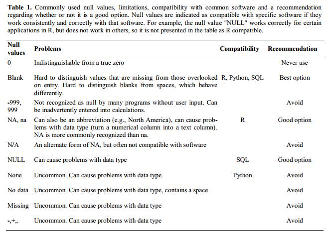
Uso de formato para transmitir información
Ejemplo: resaltar celdas, filas o columnas que deben excluirse de un análisis, dejando filas en blanco para indicar separaciones en los datos.

Solución: crear un nuevo campo para codificar qué datos deben excluirse.

Uso de formato para que la hoja de datos se vea bien
Ejemplo: fusionar celdas.
Solución: Si no se tiene cuidado, ajustar el formato de una hoja de cálculo para que sea más estética puede comprometer la capacidad de su computadora para detectar asociaciones en los datos. Las celdas unidas harán que sus datos sean ilegibles para el software estadístico. Considere reestructurar sus datos de tal manera que no necesite unir celdas para organizarlos.
Colocar comentarios o unidades en celdas
La mayoría del software de análisis no puede leer los comentarios de Excel o LibreOffice, y se confundiría con los comentarios colocados dentro de las celdas de datos. Como se describió anteriormente respecto al formato, cree otro campo si necesita añadir notas a las celdas. Del mismo modo, no incluya unidades en las celdas: idealmente, todas las mediciones que coloque en una sola columna deberían estar en la misma unidad, pero si por alguna razón no lo están, cree otro campo y especifique la unidad en la que se encuentra la celda.
Ingresar más de una pieza de información en una celda
Ejemplo: Registrar los grupos ABO y Rhesus en una sola celda, como A+, B+, A-, …
Solución: No incluya más de una pieza de información en una sola celda. Incluir varios datos en una sola celda limitará las formas en que se pueden analizar los datos. Si necesita ambas mediciones, diseñe su hoja de datos para incluir esta información. Por ejemplo, incluya una columna para el grupo ABO y otra para el grupo Rhesus.
Uso de nombres de campo problemáticos
Elija nombres de campos descriptivos, pero tenga cuidado de no incluir espacios, números ni caracteres especiales de ningún tipo. Los espacios pueden ser interpretados erróneamente por analizadores que utilizan el espacio en blanco como delimitador, y algunos programas no admiten nombres de campos que sean cadenas de texto que comiencen con números.
Los guiones bajos (_) son una buena alternativa a los
espacios. Considere escribir los nombres en camel case (como este:
ExampleFileName) para mejorar la legibilidad. Tenga en cuenta que las
abreviaturas que tengan sentido en este momento puede que no sean tan
claras dentro de 6 meses, pero no abuse de los nombres excesivamente
largos. Incluir las unidades en los nombres de los campos evita
confusiones y permite que otros interpreten sus campos fácilmente.
Ejemplos
| Nombre aceptable | Alternativa recomendable | Evitar |
|---|---|---|
| Max_temp_C | MaxTemp | Maximum Temp (°C) |
| Precipitation_mm | Precipitation | precmm |
| Mean_year_growth | MeanYearGrowth | Mean growth/year |
| sex | sex | M/F |
| weight | weight | w. |
| cell_type | CellType | Cell Type |
| Observation_01 | first_observation | 1st Obs |
Uso de caracteres especiales en datos
Ejemplo: Trata su programa de hojas de cálculo como un procesador de textos al escribir notas, por ejemplo, copiando datos directamente de Word u otras aplicaciones.
Solución: Esta es una estrategia común. Por ejemplo, al escribir textos más extensos en una celda, es frecuente incluir saltos de línea, guiones em, etc., en la hoja de cálculo. Asimismo, al copiar datos desde aplicaciones como Word, se incluyen el formato y caracteres no estándar especiales (como comillas alineadas a la izquierda y a la derecha). Al exportar estos datos a un entorno de programación/estadística o a una base de datos relacional, pueden ocurrir problemas graves, como que las líneas se corten por la mitad y se produzcan errores de codificación.
La mejor práctica general es evitar añadir caracteres como saltos de línea, tabulaciones y tabulaciones verticales. En otras palabras, trate una celda de texto como si fuera un formulario web sencillo que solo puede contener texto y espacios.
Inclusión de metadatos en la tabla de datos
Ejemplo: Añades una leyenda en la parte superior o inferior de tu tabla de datos que explique el significado de las columnas, las unidades, las excepciones, etc.
Solución: Registrar datos sobre sus datos (“metadatos”) es esencial. Es posible que conozca a la perfección su conjunto de datos mientras lo recopila y analiza, pero es poco probable que recuerde, tras unos meses, un año o más, que la variable “sglmemgp” significa miembro individual del grupo, por ejemplo, o el algoritmo exacto que utilizó para transformar una variable o crear una derivada.
Asimismo, existen muchas razones por las que otras personas podrían querer examinar o utilizar sus datos: para comprender sus hallazgos, verificarlos, revisar su publicación enviada, replicar sus resultados, diseñar un estudio similar o incluso archivar sus datos para que otros puedan acceder a ellos y reutilizarlos. Si bien los datos digitales son, por definición, legibles por máquinas, comprender su significado es tarea humana. No se puede sobreestimar la importancia de documentar sus datos durante la fase de recopilación y análisis de su investigación, especialmente si su trabajo formará parte del registro académico.
Sin embargo, los metadatos no deben incluirse en el propio archivo de datos. A diferencia de una tabla en un artículo o de un archivo complementario, los metadatos (en forma de leyendas) no deben incluirse en un archivo de datos, ya que esta información no es dato, e incluirlos puede alterar la forma en que los programas informáticos interpretan el archivo de datos. En su lugar, los metadatos deben almacenarse como un archivo independiente en el mismo directorio que el archivo de datos, preferiblemente en formato de texto plano y con un nombre que lo asocie claramente con el archivo de datos. Debido a que los archivos de metadatos están en formato de texto libre, también permiten codificar comentarios, unidades, información sobre cómo se codifican los valores nulos, etc., que son importantes de documentar pero pueden alterar el formato del archivo de datos.
Además, los metadatos a nivel de archivo o base de datos describen cómo se relacionan los archivos que conforman el conjunto de datos; en qué formato se encuentran; y si sustituyen a otros archivos o han sido sustituidos por ellos. Un archivo readme.txt a nivel de carpeta es la forma clásica de registrar todos los archivos y carpetas de un proyecto.
(El texto sobre metadatos está adaptado del curso en línea Research Data MANTRA de EDINA y Data Library, Universidad de Edimburgo. MANTRA está licenciado bajo una Licencia Creative Commons Atribución 4.0 Internacional.)
Exportación de datos
Pregunta
- ¿Cómo podemos exportar datos de hojas de cálculo de manera que resulten útiles para aplicaciones posteriores?
Objetivos
- Guardar datos de hojas de cálculo en formatos de archivo universales.
- Exportar datos de una hoja de cálculo a un archivo CSV.
Puntos clave
Los datos almacenados en formatos comunes de hojas de cálculo a menudo no se leerán correctamente en software de análisis de datos, lo que introducirá errores en los datos.
Exportar datos desde hojas de cálculo a formatos como CSV o TSV los coloca en un formato que la mayoría de los programas pueden utilizar de manera consistente.
Guardar los datos con los que va a trabajar para sus análisis en el
formato de archivo predeterminado de Excel (*.xls o
*.xlsx - según la versión de Excel) no es una buena idea.
¿Por qué?
Porque es un formato propietario, y es posible que en el futuro la tecnología necesaria para abrir el archivo deje de existir (o se vuelva muy poco común), lo que hará difícil, si no imposible, abrir el archivo.
Otros programas de hojas de cálculo podrían no ser capaces de abrir archivos guardados en un formato propietario de Excel.
Diferentes versiones de Excel pueden gestionar los datos de manera distinta, lo que provoca inconsistencias. Fechas es un ejemplo bien documentado de inconsistencias en el almacenamiento de datos.
Por último, cada vez más revistas y organismos de subvenciones exigen que deposite sus datos en un repositorio de datos, y la mayoría de ellos no aceptan el formato Excel. Debe estar en uno de los formatos analizados a continuación.
Los puntos anteriores también se aplican a otros formatos, como los formatos de datos abiertos utilizados por LibreOffice / Open Office. Estos formatos no son estáticos y no se analizan de la misma manera por diferentes paquetes de software.
Almacenar los datos en un formato universal, abierto y estático ayudará a resolver este problema. Pruebe el formato separado por tabulaciones (valores separados por tabulaciones o TSV) o el separado por comas (valores separados por comas o CSV). Los archivos CSV son archivos de texto plano donde las columnas están separadas por comas, de ahí el nombre de «valores separados por comas» o CSV. La ventaja de un archivo CSV frente a un archivo de Excel/SPSS/etc. es que podemos abrir y leer un archivo CSV utilizando prácticamente cualquier software, incluidos los editores de texto plano como TextEdit o NotePad. Los datos de un archivo CSV también pueden importarse fácilmente a otros formatos y entornos, como SQLite y R. No estamos atados a una versión específica de un programa costoso al trabajar con archivos CSV, por lo que es un buen formato para lograr la máxima portabilidad y durabilidad. La mayoría de los programas de hojas de cálculo pueden guardar fácilmente en formatos de texto separados por comas, como CSV, aunque es posible que aparezca una advertencia durante la exportación del archivo.
Para guardar un archivo abierto en Excel en formato CSV:
- En el menú superior, seleccione ‘Archivo’ y ‘Guardar como’.
- En el campo ‘Formato’, seleccione ‘Valores separados por comas’
(
*.csv) de la lista. - Revise dos veces el nombre del archivo y la ubicación donde desea guardarlo y pulse ‘Guardar’.
Una nota importante para la compatibilidad retroactiva: ¡puedes abrir archivos CSV en Excel!
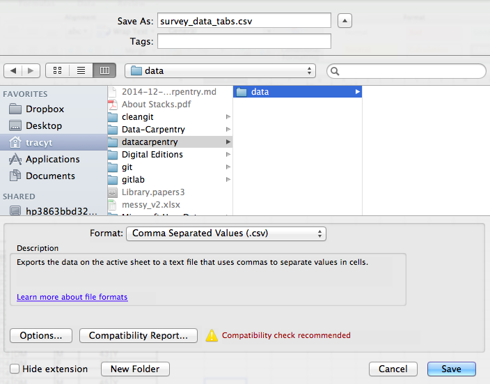
Una nota sobre R y xls: Existen
paquetes de R que pueden leer archivos xls (así como hojas
de cálculo de Google). Incluso es posible acceder a diferentes hojas de
trabajo en los documentos xls.
Pero
- algunos de estos solo funcionan en Windows.
- esto equivale a sustituir una exportación (sencilla pero manual) a
csvpor una complejidad/dependencias adicionales en el código de R para el análisis de datos. - Siguen aplicándose las mejores prácticas de formato de datos.
- ¿Realmente hay alguna buena razón por la cual
csv(o algo similar) no sea adecuado?
Consideraciones sobre las comas
En algunos conjuntos de datos, los propios valores de los datos pueden incluir comas (,). En ese caso, es muy probable que el software que utilice (incluido Excel) muestre los datos incorrectamente en columnas. Esto se debe a que las comas que forman parte de los valores de los datos se interpretarán como delimitadores.
Por ejemplo, nuestros datos podrían verse así:
species_id,genus,species,taxa
AB,Amphispiza,bilineata,Bird
AH,Ammospermophilus,harrisi,Rodent, not censused
AS,Ammodramus,savannarum,Bird
BA,Baiomys,taylori,RodentEn el registro
AH,Ammospermophilus,harrisi,Rodent, not censused, el valor
de taxa incluye una coma
(Rodent, not censused). Si intentamos leer lo anterior en
Excel (u otro programa de hojas de cálculo), obtendremos algo como
esto:
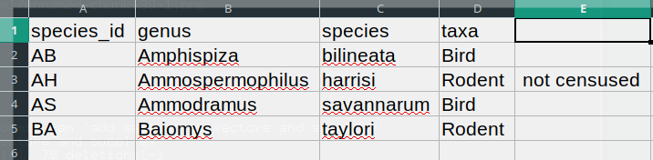
El valor de taxa se dividió en dos columnas (en lugar de
situarse en una sola columna D). Esto puede derivar en una
serie de errores adicionales. Por ejemplo, la columna adicional se
interpretará como una columna con muchos valores faltantes (y sin un
encabezado adecuado). Además, el valor de la columna D para
el registro de la fila 3 (es decir, aquel en el que el valor de ‘taxa’
contenía la coma) ahora es incorrecto.
Si desea almacenar sus datos en formato csv y prevé que
los valores de sus datos puedan contener comas, puede evitar el problema
analizado anteriormente poniendo los valores entre comillas (““). Al
aplicar esta regla, nuestros datos podrían verse así:
species_id,genus,species,taxa
"AB","Amphispiza","bilineata","Bird"
"AH","Ammospermophilus","harrisi","Rodent, not censused"
"AS","Ammodramus","savannarum","Bird"
"BA","Baiomys","taylori","Rodent"Ahora, abrir este archivo como un csv en Excel no
provocará la aparición de una columna adicional, ya que Excel solo
utilizará las comas que se encuentran fuera de las comillas como
caracteres delimitadores.
Alternativamente, si trabaja con datos que contienen comas, es probable que necesite utilizar otro delimitador al trabajar en una hoja de cálculo1. En este caso, considere utilizar tabulaciones como delimitador y trabajar con archivos TSV. Los archivos TSV pueden exportarse desde programas de hojas de cálculo de la misma manera que los archivos CSV.
Si está trabajando con un conjunto de datos ya existente en el que los valores de los datos no están incluidos entre ““, pero en el que se utilizan comas tanto como delimitadores como dentro de los valores de los datos, es posible que se encuentre con un problema grave de limpieza de datos. Si el conjunto de datos que está manejando contiene cientos o miles de registros, limpiarlos manualmente (ya sea eliminando las comas de los valores de los datos o colocando los valores entre comillas -”“) no solo llevará horas y horas, sino que podría terminar introduciendo accidentalmente muchos errores.
La limpieza de conjuntos de datos es uno de los problemas principales en muchas disciplinas científicas. El enfoque depende casi siempre del contexto particular. No obstante, es una buena práctica limpiar los datos de manera automatizada, por ejemplo, escribiendo y ejecutando un script. Las lecciones de Python y R le proporcionarán las bases para desarrollar las habilidades necesarias para crear scripts pertinentes.
Resumen
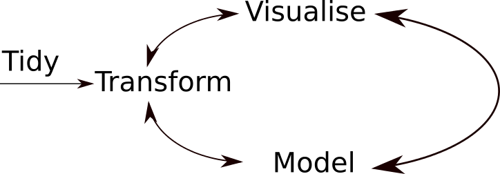
Un flujo de trabajo típico de análisis de datos se ilustra en la figura anterior, donde los datos se transforman, visualizan y modelan repetidamente. Esta iteración se repite varias veces hasta que se comprendan los datos. Sin embargo, en muchos casos reales, la mayor parte del tiempo se dedica a limpiar y preparar los datos, en lugar de analizarlos y comprenderlos realmente.
Un flujo de trabajo de análisis de datos ágil, con varias iteraciones rápidas del ciclo transformar/visualizar/modelar, solo es viable si los datos están formateados de manera predecible y se puede analizar la información sin tener que mirarla y/o corregirla.
- Una buena organización de los datos es la base de cualquier proyecto de investigación.
Esto es especialmente relevante en los países europeos, donde la coma se utiliza como separador decimal. En tales casos, el separador de valores predeterminado en un archivo csv será el punto y coma (;), o los valores se encerrarán sistemáticamente entre comillas.↩︎
Content from R y RStudio
Última actualización: 2026-11-11 | Mejora esta página
Tiempo estimado: 30 minutos
Hoja de ruta
Preguntas
- ¿Qué son R y RStudio?
Objetivos
- Describa el propósito de los paneles Script, Console, Environment y Plots de RStudio.
- Organizar archivos y directorios para un conjunto de análisis como un proyecto de R, y comprender el propósito del directorio de trabajo.
- Utilice la interfaz de ayuda integrada de RStudio para buscar más información sobre las funciones de R.
- Demostrar cómo proporcionar información suficiente para la resolución de problemas con la comunidad de usuarios de R.
Este episodio se basa en la lección Análisis de datos y visualización en R para ecólogos de Data Carpentries.
¿Qué es R? ¿Qué es RStudio?
El término R se utiliza para referirse al lenguaje de programación, al entorno para el cálculo estadístico y al software que interpreta los scripts escritos con él.
RStudio es actualmente una forma muy popular no solo de escribir sus scripts de R, sino también de interactuar con el software R1. Para funcionar correctamente, RStudio necesita R y, por lo tanto, ambos deben estar instalados en su computadora.
La Hoja de trucos del IDE de RStudio proporciona mucha más información de la que se abordará aquí, pero puede resultar útil para aprender atajos de teclado y descubrir nuevas funciones.
¿Por qué aprender R?
R no requiere hacer muchos clics, y eso es algo bueno.
La curva de aprendizaje puede ser más pronunciada que con otros softwares, pero con R, los resultados de tu análisis no dependen de recordar una sucesión de selecciones y clics, sino de una serie de comandos escritos, ¡y eso es algo bueno! Así que, si quieres volver a realizar tu análisis porque has recopilado más datos, no tienes que recordar qué botón pulsaste y en qué orden para obtener tus resultados; solo tienes que ejecutar tu script de nuevo.
Trabajar con scripts deja claros los pasos que utilizó en su análisis, y el código que escribe puede ser revisado por otra persona que pueda darle retroalimentación y detectar errores.
Trabajar con scripts te obliga a tener una comprensión más profunda de lo que estás haciendo, y facilita tu aprendizaje y comprensión de los métodos que utilizas.
El código de R es ideal para la reproducibilidad
La reproducibilidad significa que otra persona (incluido tu yo del futuro) puede obtener los mismos resultados a partir del mismo conjunto de datos al utilizar el mismo código de análisis.
R se integra con otras herramientas para generar manuscritos o informes a partir de su código. Si recopila más datos o corrige un error en su conjunto de datos, las figuras y las pruebas estadísticas de su manuscrito o informe se actualizan automáticamente.
Cada vez más revistas y organismos de financiación exigen que los análisis sean reproducibles, por lo que conocer R le dará una ventaja ante estos requisitos.
R es interdisciplinario y extensible
Con más de 10 000 paquetes2 que se pueden instalar para ampliar sus capacidades, R proporciona un marco de trabajo que permite combinar enfoques estadísticos de numerosas disciplinas científicas para adaptarlos de la mejor manera al marco analítico que necesite para analizar sus datos. Por ejemplo, R cuenta con paquetes para el análisis de imágenes, SIG, series temporales, genética poblacional y mucho más.

R funciona con datos de cualquier forma y tamaño
Las habilidades que aprendas con R escalan fácilmente según el tamaño de tu conjunto de datos. Ya sea que tu conjunto de datos tenga cientos o millones de filas, no marcará mucha diferencia.
R está diseñado para el análisis de datos. Incluye estructuras de datos y tipos de datos especiales que facilitan el manejo de datos faltantes y de factores estadísticos.
R puede conectarse con hojas de cálculo, bases de datos y muchos otros formatos de datos, ya sea en su computadora o en la web.
R genera gráficos de alta calidad
Las funcionalidades de representación gráfica en R son extensas y le permiten ajustar cualquier aspecto de su gráfico para transmitir de la manera más eficaz el mensaje de sus datos.
R cuenta con una comunidad amplia y acogedora
Miles de personas utilizan R a diario. Muchas de ellas están dispuestas a ayudarle a través de listas de correo y sitios web como Stack Overflow, o en la comunidad de RStudio. Estas amplias comunidades de usuarios se extienden a áreas especializadas como la bioinformática. Un subconjunto de dicha comunidad de R es Bioconductor, un proyecto científico para el análisis y la comprensión «de datos de ensayos biológicos actuales y emergentes». Este taller fue desarrollado por miembros de la comunidad de Bioconductor; para obtener más información sobre Bioconductor, consulte el taller complementario “The Bioconductor Project”.
R no solo es gratuito, sino que también es de código abierto y multiplataforma
Cualquiera puede inspeccionar el código fuente para ver cómo funciona R. Gracias a esta transparencia, hay menos probabilidades de que ocurran errores y, si usted (o alguien más) encuentra algunos, puede informar y corregir errores.
Conocer RStudio
Comencemos aprendiendo sobre RStudio, que es un entorno de desarrollo integrado (IDE) para trabajar con R.
El producto de código abierto RStudio IDE es gratuito bajo la Licencia Pública General Affero (AGPL) v3. El RStudio IDE también está disponible con una licencia comercial y soporte prioritario por correo electrónico de Posit, Inc.
Utilizaremos el IDE RStudio para escribir código, navegar por los archivos de nuestro ordenador, inspeccionar las variables que vamos a crear y visualizar los gráficos que generaremos. RStudio también puede utilizarse para otras tareas (por ejemplo, control de versiones, desarrollo de paquetes, creación de aplicaciones Shiny) que no abordaremos durante el taller.

La ventana de RStudio se divide en 4 “paneles”:
- el panel Source para sus scripts y documentos (arriba a la izquierda, en la disposición predeterminada)
- tu Entorno/Historial (arriba a la derecha),
- tus Archivos/Gráficos/Paquetes/Ayuda/Visor (abajo a la derecha), y
- la Consola de R (abajo a la izquierda).
La ubicación de estos paneles y su contenido pueden personalizarse
(consulte el menú,
Tools -> Global Options -> Pane Layout).
Una de las ventajas de usar RStudio es que toda la información necesaria para escribir código está disponible en una sola ventana. Además, gracias a los numerosos atajos, la autocompletación y el resaltado de los principales tipos de archivos que se utilizan al desarrollar en R, RStudio facilitará la escritura y reducirá la probabilidad de cometer errores.
Configuración inicial
Es una buena práctica mantener un conjunto de datos, análisis y texto relacionados de forma autónoma en una sola carpeta, denominada directorio de trabajo. Todos los scripts dentro de esta carpeta pueden entonces utilizar rutas relativas a los archivos que indiquen dónde se encuentra un archivo dentro del proyecto (en contraposición a las rutas absolutas, que apuntan a dónde está el archivo en una computadora específica). Trabajar de esta manera facilita considerablemente el desplazamiento del proyecto en su computadora y su compartición con otros, sin preocuparse por si los scripts subyacentes seguirán funcionando.
RStudio ofrece un conjunto de herramientas útiles para lograrlo a través de su interfaz de “Proyectos”, que no solo crea un directorio de trabajo para usted, sino que también recuerda su ubicación (lo que permite navegar rápidamente hasta él) y, opcionalmente, conserva la configuración personalizada y los archivos abiertos para facilitar la reanudación del trabajo tras un descanso. Siga los pasos a continuación para crear un “Proyecto R” para este tutorial.
- Inicie RStudio.
- En el menú
File, haga clic enNew project. ElijaNew directoryy luegoNew project. - Ingrese un nombre para esta nueva carpeta (o “directorio”) y elija
una ubicación conveniente para ella. Este será su directorio de
trabajo para esta sesión (o todo el curso) (p. ej.,
bioc-intro). - Haga clic en
Create project. - (Opcional) Establezca las preferencias en ‘Nunca’ para no guardar el espacio de trabajo en RStudio.
Las preferencias predeterminadas de RStudio suelen funcionar bien, pero guardar un espacio de trabajo en .RData puede resultar engorroso, especialmente si se trabaja con conjuntos de datos más grandes. Para desactivar esto, vaya a Herramientas –> ‘Opciones globales’ y seleccione la opción ‘Nunca’ para ‘Guardar espacio de trabajo en .RData’ al salir.

Para evitar problemas de codificación de caracteres entre Windows y otros sistemas operativos, vamos a configurar UTF-8 por defecto:

Organización de su directorio de trabajo
Utilizar una estructura de carpetas consistente en todos sus proyectos ayudará a mantener todo organizado y también facilitará la búsqueda y archivado de elementos en el futuro. Esto puede resultar especialmente útil cuando tiene múltiples proyectos. En general, puede crear directorios (carpetas) para scripts, datos y documentos.
-
data/Utilice esta carpeta para almacenar sus datos brutos y los conjuntos de datos intermedios que pueda crear para un análisis particular. Por razones de transparencia y procedencia de los datos, debe siempre mantener accesible una copia de sus datos brutos y realizar de forma programática (es decir, con scripts, en lugar de manualmente) tanta limpieza y preprocesamiento de datos como sea posible. Separar los datos brutos de los datos procesados también es una buena idea. Por ejemplo, podría tener los archivosdata/raw/tree_survey.plot1.txty...plot2.txtseparados de un archivodata/processed/tree.survey.csvgenerado por el scriptscripts/01.preprocess.tree_survey.R. -
documents/Este sería un lugar para guardar esquemas, borradores y otros textos. -
scripts/(osrc) Este sería el lugar donde guardar los scripts de R para diferentes análisis o gráficos, y posiblemente una carpeta separada para sus funciones (más sobre esto más adelante).
Es posible que necesite directorios o subdirectorios adicionales según las necesidades de su proyecto, pero estos deben constituir la estructura básica de su directorio de trabajo.

Para este curso, necesitaremos una carpeta data/ para
almacenar nuestros datos brutos, y utilizaremos
data_output/ para cuando aprendamos a exportar datos como
archivos CSV, y la carpeta fig_output/ para las figuras que
guardaremos.
Desafío: crea la estructura de directorios de tu proyecto
En la pestaña Files a la derecha de la pantalla, haga
clic en New Folder y cree una carpeta llamada
data dentro de su directorio de trabajo recién creado (por
ejemplo, ~/bioc-intro/data). (Alternativamente, escriba
dir.create("data") en su consola de R). Repita estas
operaciones para crear las carpetas data_output/ y
fig_output.
Vamos a guardar el script en la raíz de nuestro directorio de trabajo porque solo utilizaremos un archivo y así será más sencillo.
Su directorio de trabajo debería verse ahora así:
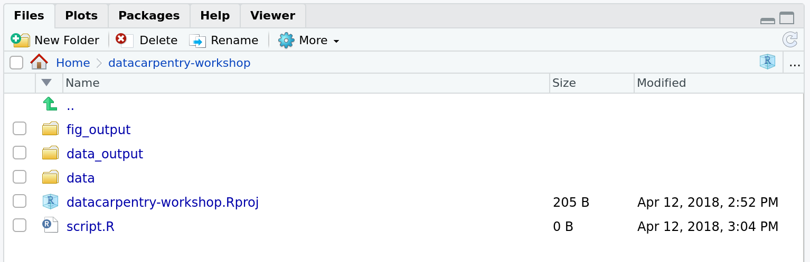
La gestión de proyectos también es aplicable a los proyectos de bioinformática, por supuesto3. William Noble ( Noble (2009) ) propone la siguiente estructura de directorios:
Los nombres de los directorios están en una fuente grande y los nombres de los archivos en una fuente más pequeña. Aquí solo se muestra un subconjunto de los archivos. Tenga en cuenta que las fechas están formateadas
<year>-<month>-<day>para que puedan ordenarse cronológicamente. El código fuentesrc/ms-analysis.cse compila para crearbin/ms-analysisy está documentado endoc/ms-analysis.html. Los archivosREADMEen los directorios de datos especifican quién descargó los archivos de datos desde qué URL y en qué fecha. El script controladorresults/2009-01-15/runallgenera automáticamente los tres subdirectorios split1, split2 y split3, correspondientes a tres divisiones de validación cruzada. El scriptbin/parse-sqt.pyes llamado por ambos scripts controladoresrunall.

El aspecto más importante de un directorio de proyecto bien definido y bien documentado es permitir que alguien que no esté familiarizado con el proyecto4 pueda
comprender de qué trata el proyecto, qué datos están disponibles, qué análisis se ejecutaron y qué resultados se produjeron y, lo más importante,
repetir el análisis —con nuevos datos o cambiando algunos parámetros del análisis.
El directorio de trabajo
El directorio de trabajo es un concepto importante que conviene comprender. Es el lugar desde donde R buscará y guardará los archivos. Cuando escribe código para su proyecto, debe hacer referencia a los archivos en relación con la raíz de su directorio de trabajo y solo necesitar los archivos dentro de esta estructura.
El uso de proyectos de RStudio facilita esto y garantiza que el
directorio de trabajo esté configurado correctamente. Si necesita
comprobarlo, puede utilizar getwd(). Si por alguna razón su
directorio de trabajo no es el correcto, puede cambiarlo en la interfaz
de RStudio navegando por el explorador de archivos donde debería estar
su directorio de trabajo, haciendo clic en el icono del engranaje azul
More y seleccionando Set As Working Directory.
Alternativamente, puede utilizar
setwd("/path/to/working/directory") para restablecer su
directorio de trabajo. Sin embargo, sus scripts no deben incluir esta
línea, ya que fallará en la computadora de otra persona.
Ejemplo
El esquema siguiente representa el directorio de trabajo
bioc-intro con los subdirectorios data y
fig_output, y 2 archivos en este último:
bioc-intro/data/
/fig_output/fig1.pdf
/fig_output/fig2.pngSi estuviéramos en el directorio de trabajo, podríamos referirnos al
archivo fig1.pdf utilizando la ruta relativa
bioc-intro/fig_output/fig1.pdf o la ruta absoluta
/home/user/bioc-intro/fig_output/fig1.pdf.
Si estuviéramos en el directorio data, utilizaríamos la
ruta relativa ../fig_output/fig1.pdf o la misma ruta
absoluta /home/user/bioc-intro/fig_output/fig1.pdf.
Interacción con R
La base de la programación consiste en escribir instrucciones que la computadora siga y, a continuación, indicarle que siga dichas instrucciones. Escribimos, o codificamos, instrucciones en R porque es un lenguaje común que tanto la computadora como nosotros podemos entender. Llamamos a las instrucciones comandos e indicamos a la computadora que siga las instrucciones ejecutando (o corriendo) dichos comandos.
Hay dos formas principales de interactuar con R: utilizando la
consola o utilizando scripts (archivos
de texto plano que contienen su código). El panel de la consola (en
RStudio, el panel inferior izquierdo) es el lugar donde se pueden
escribir comandos en lenguaje R y ejecutarlos inmediatamente mediante la
computadora. También es donde se mostrarán los resultados de los
comandos que se hayan ejecutado. Puede escribir comandos directamente en
la consola y presionar Enter para ejecutarlos, pero se
perderán al cerrar la sesión.
Dado que queremos que nuestro código y flujo de trabajo sean reproducibles, es mejor escribir los comandos que deseemos en el editor de scripts y guardar el script. De este modo, queda un registro completo de lo que hemos hecho, y cualquier persona (¡incluidos nosotros mismos en el futuro!) puede replicar fácilmente los resultados en su propio ordenador. Tenga en cuenta, sin embargo, que el simple hecho de escribir los comandos en el script no los ejecuta automáticamente; todavía es necesario enviarlos a la consola para su ejecución.
RStudio permite ejecutar comandos directamente desde el editor de
scripts utilizando el atajo Ctrl + Enter (en
Macs, también funcionará Cmd + Return). El
comando de la línea actual del script (indicado por el cursor) o todos
los comandos del texto seleccionado actualmente se enviarán a la consola
y se ejecutarán al pulsar Ctrl + Enter. Puede
encontrar otros atajos de teclado en este cheatsheet
de RStudio sobre el IDE de RStudio.
En algún momento de su análisis, es posible que desee comprobar el
contenido de una variable o la estructura de un objeto, sin
necesariamente dejar un registro de ello en su script. Puede escribir
estos comandos y ejecutarlos directamente en la consola. RStudio
proporciona los atajos Ctrl + 1 y
Ctrl + 2 que le permiten saltar entre los
paneles del script y de la consola.
Si R está listo para recibir comandos, la consola de R muestra un
indicador >. Si recibe un comando (escribiéndolo,
copiándolo y pegándolo o enviándolo desde el editor de scripts mediante
Ctrl + Enter), R intentará ejecutarlo y,
cuando esté listo, mostrará los resultados y volverá con un nuevo
indicador > para esperar nuevos comandos.
Si R sigue esperando que ingrese más datos porque el comando aún está
incompleto, la consola mostrará un indicador +. Esto
significa que aún no ha terminado de introducir un comando completo.
Esto ocurre porque no ha «cerrado» un paréntesis o una comilla; es
decir, no tiene el mismo número de paréntesis izquierdos que derechos,
ni el mismo número de comillas de apertura y cierre. Cuando esto suceda,
y crea que ha terminado de escribir su comando, haga clic dentro de la
ventana de la consola y presione Esc; esto cancelará el
comando incompleto y lo devolverá al indicador >.
¿Cómo aprender más durante y después del curso?
El material que abordaremos durante este curso le dará una primera idea de cómo puede utilizar R para analizar datos para su propia investigación. Sin embargo, necesitará aprender más para realizar operaciones avanzadas, como limpiar su conjunto de datos, utilizar métodos estadísticos o crear gráficos atractivos5. La mejor manera de volverse competente y eficiente en R, al igual que con cualquier otra herramienta, es utilizarlo para abordar sus preguntas de investigación reales. Como principiante, puede resultar intimidante tener que escribir un script desde cero y, dado que muchas personas ponen su código a disposición en línea, modificar código existente para adaptarlo a su propósito podría facilitarle el inicio.

Buscar ayuda
Utilice la interfaz de ayuda integrada de RStudio para buscar más información sobre las funciones de R

Una de las formas más rápidas de obtener ayuda es utilizar la interfaz de ayuda de RStudio. Por defecto, este panel se encuentra en el panel inferior derecho de RStudio. Como se ve en la captura de pantalla, al escribir la palabra “Mean”, RStudio intenta también ofrecer una serie de sugerencias que podrían interesarle. La descripción se muestra entonces en la ventana de visualización.
Conozco el nombre de la función que quiero usar, pero no estoy seguro de cómo usarla
Si necesita ayuda con una función específica, supongamos
barplot(), puede escribir:
R
?barplot
Si solo necesita recordar los nombres de los argumentos, puede usar:
R
args(lm)
Quiero usar una función que haga X, debe haber una función para ello, pero no sé cuál…
Si busca una función para realizar una tarea específica, puede
utilizar la función help.search(), que se invoca mediante
el signo de interrogación doble ??. Sin embargo, esta solo
busca en los paquetes instalados páginas de ayuda que coincidan con su
solicitud de búsqueda.
R
??kruskal
Si no logra encontrar lo que busca, puede utilizar el sitio web rdocumentation.org, que realiza búsquedas en los archivos de ayuda de todos los paquetes disponibles.
Por último, una búsqueda genérica en Google o en internet con “R <task>” a menudo te dirigirá ya sea a la documentación del paquete correspondiente o a un foro útil donde alguien más ya haya planteado tu pregunta.
Estoy atascado… recibo un mensaje de error que no entiendo
Comience buscando el mensaje de error en Google. Sin embargo, esto no siempre funciona muy bien porque, a menudo, los desarrolladores de paquetes dependen de la captura de errores proporcionada por R. Termina obteniendo mensajes de error generales que podrían no ser muy útiles para diagnosticar un problema (por ejemplo, “subscript out of bounds”). Si el mensaje es muy genérico, también podría incluir el nombre de la función o del paquete que está utilizando en su consulta.
Sin embargo, debes consultar Stack Overflow. Busca utilizando la
etiqueta [r]. La mayoría de las preguntas ya han recibido
respuesta, pero el desafío consiste en usar las palabras adecuadas en la
búsqueda para encontrar las respuestas:
https://stackoverflow.com/questions/tagged/r
La Introducción a R también puede resultar compleja para personas con poca experiencia en programación, pero es un buen lugar para comprender los fundamentos del lenguaje R.
La FAQ de R es densa y técnica, pero está llena de información útil.
Solicitar ayuda
La clave para recibir ayuda de alguien es que comprenda rápidamente tu problema. Debes facilitar lo máximo posible la identificación de dónde podría estar el problema.
Intente utilizar las palabras correctas para describir su problema. Por ejemplo, un paquete no es lo mismo que una biblioteca. La mayoría de las personas entenderán a qué se refiere, pero otras tienen opiniones muy marcadas sobre la diferencia de significado. El punto clave es que esto puede confundir a quienes intentan ayudarle. Sea lo más preciso posible al describir su problema.
Si es posible, intente reducir lo que no funciona a un ejemplo reproducible sencillo. Si puede reproducir el problema utilizando una tabla de datos muy pequeña en lugar de la de 50 000 filas y 10 000 columnas, proporcione la tabla pequeña junto con la descripción de su problema. Cuando sea apropiado, intente generalizar lo que está haciendo para que incluso personas que no pertenecen a su campo puedan entender la pregunta. Por ejemplo, en lugar de utilizar un subconjunto de su conjunto de datos real, cree uno genérico pequeño (3 columnas, 5 filas). Para obtener más información sobre cómo escribir un ejemplo reproducible, consulte este artículo de Hadley Wickham.
Para compartir un objeto con otra persona, si es relativamente
pequeño, puede utilizar la función dput(). Esta generará
código R que puede usarse para recrear exactamente el mismo objeto que
el que hay en la memoria:
R
## iris is an example data frame that comes with R and head() is a
## function that returns the first part of the data frame
dput(head(iris))
SALIDA
structure(list(Sepal.Length = c(5.1, 4.9, 4.7, 4.6, 5, 5.4),
Sepal.Width = c(3.5, 3, 3.2, 3.1, 3.6, 3.9), Petal.Length = c(1.4,
1.4, 1.3, 1.5, 1.4, 1.7), Petal.Width = c(0.2, 0.2, 0.2,
0.2, 0.2, 0.4), Species = structure(c(1L, 1L, 1L, 1L, 1L,
1L), levels = c("setosa", "versicolor", "virginica"), class = "factor")), row.names = c(NA,
6L), class = "data.frame")Si el objeto es más grande, proporcione el archivo bruto (es decir, su archivo CSV) junto con su script hasta el punto del error (y tras eliminar todo lo que no sea relevante para su problema). Alternativamente, especialmente si su pregunta no está relacionada con una tabla de datos, puede guardar cualquier objeto de R en un archivo[^export]:
R
saveRDS(iris, file="/tmp/iris.rds")
Sin embargo, el contenido de este archivo no es legible para el ser
humano y no puede publicarse directamente en Stack Overflow. En su
lugar, puede enviarse por correo electrónico a alguien que pueda leerlo
con el comando readRDS() (aquí se asume que el archivo
descargado se encuentra en una carpeta Downloads en el
directorio personal del usuario):
R
some_data <- readRDS(file="~/Downloads/iris.rds")
Por último, pero no menos importante, incluya siempre la
salida de sessionInfo(), ya que proporciona
información crucial sobre su plataforma, las versiones de R y los
paquetes que está utilizando, así como otra información que puede ser
muy útil para comprender su problema.
R
sessionInfo()
SALIDA
R version 4.6.2 (2026-10-29)
Platform: aarch64-apple-darwin23
Running under: macOS Golden Gate 27.2.1
Matrix products: default
BLAS: /Library/Frameworks/R.framework/Versions/4.6/Resources/lib/libRblas.0.dylib
LAPACK: /Library/Frameworks/R.framework/Versions/4.6/Resources/lib/libRlapack.dylib; LAPACK version 3.12.1
locale:
[1] C.UTF-8/C.UTF-8/C.UTF-8/C/C.UTF-8/C.UTF-8
time zone: Asia/Tokyo
tzcode source: internal
attached base packages:
[1] stats graphics grDevices utils datasets methods base
loaded via a namespace (and not attached):
[1] compiler_4.6.2 cli_3.6.6 tools_4.6.2 otel_0.2.0 knitr_1.52
[6] xfun_0.62 rlang_1.3.0 png_0.1-9 evaluate_1.0.5¿Dónde pedir ayuda?
- La persona que está sentada a tu lado durante el curso. No dudes en hablar con tu vecino durante el taller, comparar tus respuestas y pedir ayuda.
- Tus colegas amigables: si conoces a alguien con más experiencia que tú, es posible que pueda y esté dispuesto a ayudarte.
- Stack Overflow: si tu pregunta no ha sido respondida anteriormente y está bien formulada, es probable que obtengas una respuesta en menos de 5 min. Recuerda seguir sus pautas sobre cómo hacer una buena pregunta.
- La lista de correo R-help: la lee mucha gente (incluida la mayor parte del equipo central de R), mucha gente publica en ella, pero el tono puede ser bastante seco y no siempre es muy acogedor para los usuarios nuevos. Si tu pregunta es válida, es probable que obtengas una respuesta muy rápido, pero no esperes que venga acompañada de emoticonos. Además, aquí, más que en cualquier otro lugar, asegúrate de usar el vocabulario correcto (de lo contrario, podrías recibir una respuesta que señale el mal uso de tus palabras en lugar de responder a tu pregunta). También tendrás más éxito si tu pregunta trata sobre una función básica en lugar de un paquete específico.
- Si su pregunta trata sobre un paquete específico, consulte si existe
una lista de correo para este. Por lo general, figura en el archivo
DESCRIPTION del paquete, al que se puede acceder mediante
packageDescription("name-of-package"). También podría intentar enviar un correo electrónico directamente al autor del paquete o abrir un issue en el repositorio de código (por ejemplo, GitHub). - También existen algunas listas de correo específicas por tema (GIS, filogenética, etc…); la lista completa está disponible en la página de la lista de correo de R-project.
Más recursos
La Guía de publicación para las listas de correo de R.
Cómo pedir ayuda con R pautas útiles.
Esta entrada de blog de Jon Skeet ofrece consejos bastante exhaustivos sobre cómo hacer preguntas de programación.
El paquete reprex es muy útil para crear ejemplos reproducibles al solicitar ayuda. La convocatoria de la comunidad rOpenSci “How to ask questions so they get answered” (enlace de GitHub y grabación de video) incluye una presentación del paquete reprex y de su filosofía.
Paquetes de R
Cargando paquetes
Como hemos visto anteriormente, los paquetes de R desempeñan un papel
fundamental en R. Para hacer uso de la funcionalidad de un paquete,
suponiendo que esté instalado, primero debemos cargarlo para poder
utilizarlo. Esto se hace con la función library(). A
continuación, cargamos ggplot2.
R
library("ggplot2")
Instalación de paquetes
El repositorio de paquetes predeterminado es la Comprehensive R
Archive Network (CRAN), y cualquier paquete disponible en CRAN
puede instalarse con la función install.packages(). A
continuación, por ejemplo, instalamos el paquete dplyr, del
cual aprenderemos más adelante.
R
install.packages("dplyr")
Este comando instalará el paquete dplyr así como todas
sus dependencias, es decir, todos los paquetes de los que depende para
funcionar.
Otro repositorio principal de paquetes de R es gestionado por
Bioconductor. Los paquetes
de Bioconductor se gestionan e instalan mediante un paquete
dedicado, concretamente BiocManager, que puede instalarse
desde CRAN con
R
install.packages("BiocManager")
Los paquetes individuales como SummarizedExperiment (lo
utilizaremos más adelante), DESeq2 (para el análisis de
RNA-Seq) y cualquier otro de Bioconductor o CRAN pueden instalarse
posteriormente con BiocManager::install.
R
BiocManager::install("SummarizedExperiment")
BiocManager::install("DESeq2")
Por defecto, BiocManager::install() también revisará
todos los paquetes instalados para ver si hay versiones más recientes
disponibles. Si las hay, los mostrará y le preguntará si desea
Update all/some/none? [a/s/n]:, y luego esperará su
respuesta. Aunque debería procurar tener las versiones de los paquetes
más actualizadas, en la práctica recomendamos actualizar los paquetes
únicamente en una sesión de R nueva, antes de que se cargue ningún
paquete.
- Comience a usar R y RStudio
A diferencia de utilizar R directamente desde la consola de línea de comandos. Existen otros programas que interactúan con R y se integran con él, pero RStudio es particularmente adecuado para principiantes, al tiempo que ofrece numerosas funciones muy avanzadas.↩︎
es decir, complementos que otorgan a R nueva funcionalidad, como el análisis de datos de bioinformática.↩︎
En este curso, consideramos la bioinformática como la ciencia de datos aplicada a datos biológicos o biomédicos.↩︎
Esa persona podría ser, y muy probablemente será, tu yo del futuro, un par de meses o años después de que se hayan realizado los análisis.↩︎
Presentaremos la mayoría de estos aquí (excepto las estadísticas), pero solo lograremos rozar la superficie de la gran cantidad de cosas que se pueden hacer con R.↩︎
Content from Introducción a R
Última actualización: 2026-11-11 | Mejora esta página
Tiempo estimado: 120 minutos
Hoja de ruta
Preguntas
- Primeros comandos en R
Objetivos
- Defina los siguientes términos en relación con R: objeto, asignar, llamar, función, argumentos, opciones.
- Asignar valores a objetos en R.
- Aprenda a nombrar objetos
- Utilice comentarios para documentar el script.
- Realizar operaciones aritméticas sencillas en R.
- Llama a funciones y utiliza argumentos para cambiar sus opciones predeterminadas.
- Inspeccionar el contenido de los vectores y manipular dicho contenido.
- Seleccionar subconjuntos y extraer valores de vectores.
- Analizar vectores con datos faltantes.
Este episodio se basa en la lección Data Analysis and Visualisation in R for Ecologists de Data Carpentries.
Creación de objetos en R
Puede obtener resultados de R simplemente escribiendo matemáticas en la consola:
R
3 + 5
SALIDA
[1] 8R
12 / 7
SALIDA
[1] 1.714286Sin embargo, para hacer cosas útiles e interesantes, necesitamos
asignar valores a objetos. Para crear un objeto,
debemos darle un nombre seguido del operador de asignación
<- y el valor que queremos asignarle:
R
weight_kg <- 55
<- es el operador de asignación. Asigna valores de la
derecha a objetos de la izquierda. Por lo tanto, tras ejecutar
x <- 3, el valor de x es 3. La
flecha puede interpretarse como 3 entra en
x. Por razones históricas, también se puede usar
= para las asignaciones, pero no en todos los contextos.
Debido a las ligeras
diferencias en la sintaxis, es buena práctica utilizar siempre
<- para las asignaciones.
En RStudio, escribir Alt + - (presionar
Alt al mismo tiempo que la tecla -) escribirá
<- con un solo toque de tecla en una PC, mientras que
escribir Option + - (presionar Option
al mismo tiempo que la tecla -) hace lo mismo en una Mac.
Nombres de variables
Los objetos pueden recibir cualquier nombre, como x,
current_temperature o subject_id. Es
recomendable que los nombres de los objetos sean explícitos y no
demasiado largos. No pueden comenzar con un número (2x no
es válido, pero x2 sí). R distingue entre mayúsculas y
minúsculas (por ejemplo, weight_kg es diferente de
Weight_kg). Hay algunos nombres que no pueden utilizarse
porque son nombres de funciones fundamentales en R (por ejemplo,
if, else, for; consulte la página
del manual Palabras
reservadas en R para obtener una lista completa). En general, aunque
esté permitido, lo mejor es no utilizar otros nombres de funciones (por
ejemplo, c, T, mean,
data, df, weights). En caso de
duda, consulte la ayuda para ver si el nombre ya está en uso. También es
recomendable evitar los puntos (.) dentro del nombre de un
objeto, como en my.dataset. Hay muchas funciones en R con
puntos en sus nombres por razones históricas, pero dado que los puntos
tienen un significado especial en R (para los métodos) y en otros
lenguajes de programación, lo mejor es evitarlos. También se recomienda
utilizar sustantivos para los nombres de los objetos y verbos para los
nombres de las funciones. Es importante ser coherente en el estilo de su
código (dónde coloca los espacios, cómo nombra los objetos, etc.).
Utilizar un estilo de codificación coherente hace que su código sea más
fácil de leer tanto para usted mismo en el futuro como para sus
colaboradores. En R, algunas de las guías de estilo más populares son la
de Google,
el estilo de tidyverse y la
guía
de estilo de Bioconductor. La de tidyverse es muy exhaustiva y puede
parecer abrumadora al principio. Puede instalar el paquete lintr
para comprobar automáticamente si hay problemas en el estilo de su
código.
Objetos vs. variables: Lo que se conoce como
objectsenRse conoce comovariablesen muchos otros lenguajes de programación. Dependiendo del contexto,objectyvariablepueden tener significados drásticamente diferentes. Sin embargo, en esta lección, ambos términos se utilizan como sinónimos. Para más información, consulte aquí.
Al asignar un valor a un objeto, R no imprime nada. Puede obligar a R a imprimir el valor utilizando paréntesis o escribiendo el nombre del objeto:
R
weight_kg <- 55 # doesn't print anything
(weight_kg <- 55) # but putting parenthesis around the call prints the value of `weight_kg`
SALIDA
[1] 55R
weight_kg # and so does typing the name of the object
SALIDA
[1] 55Ahora que R tiene weight_kg en la memoria, podemos
realizar operaciones aritméticas con él. Por ejemplo, es posible que
queramos convertir este peso a libras (el peso en libras es 2,2 veces el
peso en kg):
R
2.2 * weight_kg
SALIDA
[1] 121También podemos cambiar el valor de un objeto asignándole uno nuevo:
R
weight_kg <- 57.5
2.2 * weight_kg
SALIDA
[1] 126.5Esto significa que asignar un valor a un objeto no cambia los valores
de otros objetos. Por ejemplo, guardemos el peso del animal en libras en
un nuevo objeto, weight_lb:
R
weight_lb <- 2.2 * weight_kg
y luego cambiar weight_kg a 100.
R
weight_kg <- 100
Desafío:
¿Cuál crees que es el contenido actual del objeto
weight_lb? ¿126.5 o 220?
Comentarios
El carácter de comentario en R es #; todo lo que
aparezca a la derecha de un # en un script será ignorado
por R. Es útil dejar notas y explicaciones en sus scripts.
RStudio facilita la forma de comentar o descomentar un párrafo: después de seleccionar las líneas que desee comentar, presione simultáneamente Ctrl + Shift + C en su teclado. Si solo desea comentar una línea, puede colocar el cursor en cualquier punto de dicha línea (es decir, no es necesario seleccionar toda la línea) y luego presionar Ctrl + Shift + C.
Desafío
¿Cuáles son los valores después de cada instrucción en lo siguiente?
R
mass <- 47.5 # mass?
age <- 122 # age?
mass <- mass * 2.0 # mass?
age <- age - 20 # age?
mass_index <- mass/age # mass_index?
Funciones y sus argumentos
Las funciones son “scripts predefinidos” que automatizan conjuntos de
comandos más complejos, incluyendo operaciones, asignaciones, etc.
Muchas funciones están predefinidas o pueden ponerse a disposición
importando paquetes de R (hablaremos más de esto más adelante).
Una función suele recibir una o más entradas denominadas
argumentos. Las funciones a menudo (aunque no siempre)
devuelven un valor. Un ejemplo típico sería la función
sqrt(). La entrada (el argumento) debe ser un número, y el
valor de retorno (de hecho, la salida) es la raíz cuadrada de ese
número. Ejecutar una función (‘correrla’) se denomina llamar a
la función. Un ejemplo de llamada a función es:
R
b <- sqrt(a)
Aquí, el valor de a se pasa a la función
sqrt(), la función sqrt() calcula la raíz
cuadrada y devuelve el valor, que luego se asigna al objeto
b. Esta función es muy sencilla, ya que solo acepta un
argumento.
El «valor» de retorno de una función no tiene por qué ser numérico
(como el de sqrt()), ni tiene por qué ser un único
elemento: puede ser un conjunto de elementos, o incluso un conjunto de
datos. Veremos esto cuando leyamos archivos de datos en R.
Los argumentos pueden ser cualquier cosa, no solo números o nombres de archivos, sino también otros objetos. El significado exacto de cada argumento varía según la función y debe consultarse en la documentación (ver más abajo). Algunas funciones aceptan argumentos que pueden ser especificados por el usuario o, si se omiten, asumen un valor predeterminado: estos se denominan opciones. Las opciones se utilizan habitualmente para modificar la forma en que funciona la función, como si ignora los «valores incorrectos» o qué símbolo utilizar en un gráfico. Sin embargo, si desea algo específico, puede especificar el valor de su elección, que se utilizará en lugar del predeterminado.
Probemos una función que pueda recibir múltiples argumentos:
round().
R
round(3.14159)
SALIDA
[1] 3Aquí, hemos llamado a round() con un solo argumento,
3.14159, y ha devuelto el valor 3. Esto se
debe a que el valor predeterminado es redondear al número entero más
cercano. Si queremos más dígitos, podemos ver cómo hacerlo obteniendo
información sobre la función round. Podemos usar
args(round) o consultar la ayuda de esta función mediante
?round.
R
args(round)
SALIDA
function (x, digits = 0, ...)
NULLR
?round
Vemos que si queremos un número diferente de dígitos, podemos
escribir digits=2 o cuantos queramos.
R
round(3.14159, digits = 2)
SALIDA
[1] 3.14Si proporcionas los argumentos exactamente en el mismo orden en que están definidos, no es necesario asignarles nombres:
R
round(3.14159, 2)
SALIDA
[1] 3.14Y si se indican los nombres de los argumentos, se puede cambiar su orden:
R
round(digits = 2, x = 3.14159)
SALIDA
[1] 3.14Es una buena práctica colocar primero los argumentos obligatorios (como el número que se está redondeando) en la llamada a la función, y especificar los nombres de todos los argumentos opcionales. Si no lo haces, alguien que lea tu código podría tener que consultar la definición de una función con argumentos desconocidos para comprender qué estás haciendo. Al especificar los nombres de los argumentos, también te proteges contra posibles cambios futuros en la interfaz de la función, que podrían añadir nuevos argumentos entre los existentes.
Vectores y tipos de datos
Un vector es el tipo de dato más común y básico en R, y es
prácticamente el motor de R. Un vector se compone de una serie de
valores, como números o caracteres. Podemos asignar una serie de valores
a un vector utilizando la función c(). Por ejemplo, podemos
crear un vector de pesos de animales y asignarlo a un nuevo objeto
weight_g:
R
weight_g <- c(50, 60, 65, 82)
weight_g
SALIDA
[1] 50 60 65 82Un vector también puede contener caracteres:
R
molecules <- c("dna", "rna", "protein")
molecules
SALIDA
[1] "dna" "rna" "protein"Las comillas alrededor de “dna”, “rna”, etc., son esenciales aquí.
Sin las comillas, R asumirá que existen objetos llamados
dna, rna y protein. Como estos
objetos no existen en la memoria de R, aparecerá un mensaje de
error.
Existen muchas funciones que permiten inspeccionar el contenido de un
vector. length() indica cuántos elementos contiene un
vector determinado:
R
length(weight_g)
SALIDA
[1] 4R
length(molecules)
SALIDA
[1] 3Una característica importante de un vector es que todos los elementos
son del mismo tipo de dato. La función class() indica la
clase (el tipo de elemento) de un objeto:
R
class(weight_g)
SALIDA
[1] "numeric"R
class(molecules)
SALIDA
[1] "character"La función str() proporciona una visión general de la
estructura de un objeto y de sus elementos. Es una función útil al
trabajar con objetos grandes y complejos:
R
str(weight_g)
SALIDA
num [1:4] 50 60 65 82R
str(molecules)
SALIDA
chr [1:3] "dna" "rna" "protein"Puede utilizar la función c() para añadir otros
elementos a su vector:
R
weight_g <- c(weight_g, 90) # add to the end of the vector
weight_g <- c(30, weight_g) # add to the beginning of the vector
weight_g
SALIDA
[1] 30 50 60 65 82 90En la primera línea, tomamos el vector original
weight_g, añadimos el valor 90 al final y
guardamos el resultado de nuevo en weight_g. Luego añadimos
el valor 30 al principio, guardando nuevamente el resultado
en weight_g.
Podemos hacer esto una y otra vez para ampliar un vector o armar un conjunto de datos. A medida que programamos, esto puede resultar útil para añadir los resultados que estamos recopilando o calculando.
Un vector atómico es el tipo de
datos más sencillo de R y es un vector lineal de un único tipo.
Arriba, vimos 2 de los 6 tipos principales de vectores
atómicos que utiliza R: "character" y
"numeric" (o "double"). Estos son los
elementos básicos a partir de los cuales se construyen todos los objetos
de R. Los otros 4 tipos de vectores atómicos son:
-
"logical"paraTRUEyFALSE(el tipo de dato booleano) -
"integer"para números enteros (p. ej.,2L, elLindica a R que se trata de un número entero) -
"complex"para representar números complejos con partes real e imaginaria (p. ej.,1 + 4i) y eso es todo lo que diremos sobre ellos -
"raw"para flujos de bits que no analizaremos más adelante
Puedes comprobar el tipo de tu vector utilizando la función
typeof() y pasando tu vector como argumento.
Los vectores son una de las muchas estructuras de
datos que utiliza R. Otras importantes son las listas
(list), las matrices (matrix), las tablas de
datos (data.frame), los factores (factor) y
los arrays (array).
Desafío:
Hemos visto que los vectores atómicos pueden ser de tipo carácter, numérico (o double), entero y lógico. Pero, ¿qué sucede si intentamos mezclar estos tipos en un único vector?
R los convierte implícitamente para que tengan todos el mismo tipo
Desafío:
¿Qué pasará en cada uno de estos ejemplos? (pista: usa
class() para comprobar el tipo de datos de tus objetos y
escribe sus nombres para ver qué sucede):
R
num_char <- c(1, 2, 3, "a")
num_logical <- c(1, 2, 3, TRUE, FALSE)
char_logical <- c("a", "b", "c", TRUE)
tricky <- c(1, 2, 3, "4")
R
class(num_char)
SALIDA
[1] "character"R
num_char
SALIDA
[1] "1" "2" "3" "a"R
class(num_logical)
SALIDA
[1] "numeric"R
num_logical
SALIDA
[1] 1 2 3 1 0R
class(char_logical)
SALIDA
[1] "character"R
char_logical
SALIDA
[1] "a" "b" "c" "TRUE"R
class(tricky)
SALIDA
[1] "character"R
tricky
SALIDA
[1] "1" "2" "3" "4"Desafío:
¿Por qué crees que sucede?
Los vectores pueden tener un solo tipo de dato. R intenta convertir el contenido de este vector (mediante coerción) para encontrar un denominador común que no pierda ninguna información.
Desafío:
¿Cuántos valores en combined_logical son
"TRUE" (como cadena de caracteres) en el siguiente
ejemplo?
R
num_logical <- c(1, 2, 3, TRUE)
char_logical <- c("a", "b", "c", TRUE)
combined_logical <- c(num_logical, char_logical)
Solo uno. No hay memoria de los tipos de datos anteriores, y la
coerción ocurre la primera vez que se evalúa el vector. Por lo tanto, el
TRUE en num_logical se convierte en un
1 antes de que se convierta en un "1" en
combined_logical.
R
combined_logical
SALIDA
[1] "1" "2" "3" "1" "a" "b" "c" "TRUE"Desafío:
En R, llamamos coerción al proceso de convertir objetos de una clase a otra. Estas conversiones ocurren según una jerarquía, mediante la cual algunos tipos se convierten preferentemente a otros. ¿Puedes dibujar un diagrama que represente la jerarquía de cómo se convierten estos tipos de datos?
lógico → numérico → carácter ← lógico
Selección de subconjuntos de vectores
Si queremos extraer uno o varios valores de un vector, debemos proporcionar uno o varios índices entre corchetes. Por ejemplo:
R
molecules <- c("dna", "rna", "peptide", "protein")
molecules[2]
SALIDA
[1] "rna"R
molecules[c(3, 2)]
SALIDA
[1] "peptide" "rna" También podemos repetir los índices para crear un objeto con más elementos que el original:
R
more_molecules <- molecules[c(1, 2, 3, 2, 1, 4)]
more_molecules
SALIDA
[1] "dna" "rna" "peptide" "rna" "dna" "protein"Los índices de R comienzan en 1. Los lenguajes de programación como Fortran, MATLAB, Julia y R comienzan a contar desde 1, ya que es lo que suelen hacer los seres humanos. Los lenguajes de la familia C (incluidos C++, Java, Perl y Python) cuentan desde 0 porque es más sencillo para las computadoras.
Por último, también es posible obtener todos los elementos de un vector, excepto algunos elementos especificados, utilizando índices negativos:
R
molecules ## all molecules
SALIDA
[1] "dna" "rna" "peptide" "protein"R
molecules[-1] ## all but the first one
SALIDA
[1] "rna" "peptide" "protein"R
molecules[-c(1, 3)] ## all but 1st/3rd ones
SALIDA
[1] "rna" "protein"R
molecules[c(-1, -3)] ## all but 1st/3rd ones
SALIDA
[1] "rna" "protein"Selección condicional de subconjuntos
Otra forma común de obtener un subconjunto es utilizar un vector
lógico. TRUE seleccionará el elemento con el mismo índice,
mientras que FALSE no lo hará:
R
weight_g <- c(21, 34, 39, 54, 55)
weight_g[c(TRUE, FALSE, TRUE, TRUE, FALSE)]
SALIDA
[1] 21 39 54Por lo general, estos vectores lógicos no se escriben a mano, sino que son el resultado de otras funciones o pruebas lógicas. Por ejemplo, si quisiera seleccionar únicamente los valores superiores a 50:
R
## will return logicals with TRUE for the indices that meet
## the condition
weight_g > 50
SALIDA
[1] FALSE FALSE FALSE TRUE TRUER
## so we can use this to select only the values above 50
weight_g[weight_g > 50]
SALIDA
[1] 54 55Puede combinar múltiples pruebas utilizando & (ambas
condiciones son ciertas, Y) o | (al menos una de las
condiciones es cierta, O):
R
weight_g[weight_g < 30 | weight_g > 50]
SALIDA
[1] 21 54 55R
weight_g[weight_g >= 30 & weight_g == 21]
SALIDA
numeric(0)Aquí, < significa “menor que”, >
“mayor que”, >= “mayor o igual que” y ==
“igual a”. El doble signo de igual == es una prueba de
igualdad numérica entre el lado izquierdo y el derecho, y no debe
confundirse con el signo único =, que realiza la asignación
de variables (de manera similar a <-).
Una tarea común es buscar ciertas cadenas en un vector. Se podría
utilizar el operador “o” | para comprobar la igualdad con
múltiples valores, pero esto puede volverse rápidamente tedioso. La
función %in% permite comprobar si se encuentra alguno de
los elementos de un vector de búsqueda:
R
molecules <- c("dna", "rna", "protein", "peptide")
molecules[molecules == "rna" | molecules == "dna"] # returns both rna and dna
SALIDA
[1] "dna" "rna"R
molecules %in% c("rna", "dna", "metabolite", "peptide", "glycerol")
SALIDA
[1] TRUE TRUE FALSE TRUER
molecules[molecules %in% c("rna", "dna", "metabolite", "peptide", "glycerol")]
SALIDA
[1] "dna" "rna" "peptide"Desafío:
¿Puedes descifrar por qué "four" > "five" devuelve
TRUE?
R
"four" > "five"
SALIDA
[1] TRUEAl utilizar > o < en cadenas, R
compara su orden alfabético. En este caso, "four" aparece
después de "five" y, por lo tanto, es mayor que
este.
Nombres
Es posible asignar nombres a cada elemento de un vector. El bloque de código a continuación muestra un vector inicial sin nombres, cómo se establecen y se recuperan los nombres.
R
x <- c(1, 5, 3, 5, 10)
names(x) ## no names
SALIDA
NULLR
names(x) <- c("A", "B", "C", "D", "E")
names(x) ## now we have names
SALIDA
[1] "A" "B" "C" "D" "E"Cuando un vector tiene nombres, es posible acceder a los elementos por su nombre, además de por su índice.
R
x[c(1, 3)]
SALIDA
A C
1 3 R
x[c("A", "C")]
SALIDA
A C
1 3 Datos faltantes
Dado que R fue diseñado para analizar conjuntos de datos, incluye el
concepto de datos faltantes (algo poco común en otros lenguajes de
programación). Los datos faltantes se representan en los vectores como
NA.
Al realizar operaciones con números, la mayoría de las funciones
devolverán NA si los datos con los que se trabaja incluyen
valores faltantes. Esta característica dificulta pasar por alto los
casos en los que se manejan datos faltantes. Puede añadir el argumento
na.rm = TRUE para calcular el resultado ignorando los
valores faltantes.
R
heights <- c(2, 4, 4, NA, 6)
mean(heights)
SALIDA
[1] NAR
max(heights)
SALIDA
[1] NAR
mean(heights, na.rm = TRUE)
SALIDA
[1] 4R
max(heights, na.rm = TRUE)
SALIDA
[1] 6Si sus datos incluyen valores faltantes, es posible que desee
familiarizarse con las funciones is.na(),
na.omit() y complete.cases(). Consulte a
continuación ejemplos.
R
## Extract those elements which are not missing values.
heights[!is.na(heights)]
SALIDA
[1] 2 4 4 6R
## Returns the object with incomplete cases removed.
## The returned object is an atomic vector of type `"numeric"`
## (or `"double"`).
na.omit(heights)
SALIDA
[1] 2 4 4 6
attr(,"na.action")
[1] 4
attr(,"class")
[1] "omit"R
## Extract those elements which are complete cases.
## The returned object is an atomic vector of type `"numeric"`
## (or `"double"`).
heights[complete.cases(heights)]
SALIDA
[1] 2 4 4 6Desafío:
- Utilizando este vector de alturas en pulgadas, crea un nuevo vector sin los valores NA.
R
heights <- c(63, 69, 60, 65, NA, 68, 61, 70, 61, 59, 64, 69, 63, 63, NA, 72, 65, 64, 70, 63, 65)
- Utilice la función
median()para calcular la mediana del vectorheights. - Utilice R para determinar cuántas personas del conjunto miden más de 67 pulgadas.
R
heights_no_na <- heights[!is.na(heights)]
## or
heights_no_na <- na.omit(heights)
R
median(heights, na.rm = TRUE)
SALIDA
[1] 64R
heights_above_67 <- heights_no_na[heights_no_na > 67]
length(heights_above_67)
SALIDA
[1] 6Generación de vectores
Constructores
Existen algunas funciones para generar vectores de diferentes tipos.
Para generar un vector de números, se puede utilizar el constructor
numeric(), proporcionando la longitud del vector de salida
como parámetro. Los valores se inicializarán con 0.
R
numeric(3)
SALIDA
[1] 0 0 0R
numeric(10)
SALIDA
[1] 0 0 0 0 0 0 0 0 0 0Téngase en cuenta que si solicitamos un vector numérico de longitud 0, obtenemos exactamente eso:
R
numeric(0)
SALIDA
numeric(0)Existen constructores similares para caracteres y valores lógicos,
denominados character() y logical(),
respectivamente.
Desafío:
¿Cuáles son los valores predeterminados para los vectores de caracteres y lógicos?
R
character(2) ## the empty character
SALIDA
[1] "" ""R
logical(2) ## FALSE
SALIDA
[1] FALSE FALSERepetir elementos
La función rep permite repetir un valor un número
determinado de veces. Si queremos inicializar un vector numérico de
longitud 5 con el valor -1, por ejemplo, podríamos hacer lo
siguiente:
R
rep(-1, 5)
SALIDA
[1] -1 -1 -1 -1 -1Del mismo modo, para generar un vector lleno de valores faltantes, lo cual suele ser una buena forma de comenzar, sin establecer supuestos sobre los datos a recolectar:
R
rep(NA, 5)
SALIDA
[1] NA NA NA NA NArep puede aceptar como entrada vectores de cualquier
longitud (en lo anterior, utilizamos vectores de longitud 1) y de
cualquier tipo. Por ejemplo, si queremos repetir los valores 1, 2 y 3
cinco veces, haríamos lo siguiente:
R
rep(c(1, 2, 3), 5)
SALIDA
[1] 1 2 3 1 2 3 1 2 3 1 2 3 1 2 3Desafío:
¿Y si quisiéramos repetir los valores 1, 2 y 3 cinco veces, pero
obtener cinco 1, cinco 2 y cinco 3 en ese orden? Hay dos posibilidades;
consulte ?rep o ?sort para obtener ayuda.
R
rep(c(1, 2, 3), each = 5)
SALIDA
[1] 1 1 1 1 1 2 2 2 2 2 3 3 3 3 3R
sort(rep(c(1, 2, 3), 5))
SALIDA
[1] 1 1 1 1 1 2 2 2 2 2 3 3 3 3 3Generación de secuencias
Otra función muy útil es seq, para generar una secuencia
de números. Por ejemplo, para generar una secuencia de enteros del 1 al
20 en pasos de 2, se utilizaría:
R
seq(from = 1, to = 20, by = 2)
SALIDA
[1] 1 3 5 7 9 11 13 15 17 19El valor predeterminado de by es 1 y, dado que la
generación de una secuencia de un valor a otro con pasos de 1 se utiliza
con frecuencia, existe un atajo:
R
seq(1, 5, 1)
SALIDA
[1] 1 2 3 4 5R
seq(1, 5) ## default by
SALIDA
[1] 1 2 3 4 5R
1:5
SALIDA
[1] 1 2 3 4 5Para generar una secuencia de números del 1 al 20 con una longitud final de 3, se utilizaría:
R
seq(from = 1, to = 20, length.out = 3)
SALIDA
[1] 1.0 10.5 20.0Muestras aleatorias y permutaciones
Un último grupo de funciones útiles son aquellas que generan datos
aleatorios. La primera, sample, genera una permutación
aleatoria de otro vector. Por ejemplo, para determinar un orden
aleatorio para el examen oral de 10 estudiantes, primero asigno a cada
estudiante un número del 1 al 10 (por ejemplo, según el orden alfabético
de su nombre) y luego:
R
sample(1:10)
SALIDA
[1] 9 4 7 1 2 5 3 10 6 8Sin argumentos adicionales, sample devolverá una
permutación de todos los elementos del vector. Si quisiera una muestra
aleatoria de un tamaño determinado, establecería este valor como segundo
argumento. A continuación, extraigo 5 letras aleatorias del alfabeto
contenido en el vector letters predefinido:
R
sample(letters, 5)
SALIDA
[1] "s" "a" "u" "x" "j"Si quisiera un resultado mayor que el vector de entrada, o poder
extraer algunos elementos varias veces, tendría que establecer el
argumento replace en TRUE:
R
sample(1:5, 10, replace = TRUE)
SALIDA
[1] 2 1 5 5 1 1 5 5 2 2Desafío:
Al probar las funciones anteriores, habrá advertido que las muestras
son, en efecto, aleatorias y que no se obtiene la misma permutación dos
veces. Para poder reproducir estos muestreos aleatorios, se puede
establecer manualmente la semilla de generación de números aleatorios
con set.seed() antes de extraer la muestra aleatoria.
Prueba esta función con tu compañero. Primero, extrae dos
permutaciones aleatorias de 1:10 de forma independiente y
observa que obtienes resultados diferentes.
Ahora establezca la semilla con, por ejemplo,
set.seed(123) y repita el muestreo aleatorio. Observe que
ahora obtiene los mismos muestreos aleatorios.
Repita estableciendo una semilla diferente.
Diferentes permutaciones
R
sample(1:10)
SALIDA
[1] 9 1 4 3 6 2 5 8 10 7R
sample(1:10)
SALIDA
[1] 4 9 7 6 1 10 8 3 2 5Mismas permutaciones con la semilla 123
R
set.seed(123)
sample(1:10)
SALIDA
[1] 3 10 2 8 6 9 1 7 5 4R
set.seed(123)
sample(1:10)
SALIDA
[1] 3 10 2 8 6 9 1 7 5 4Una semilla diferente
R
set.seed(1)
sample(1:10)
SALIDA
[1] 9 4 7 1 2 5 3 10 6 8R
set.seed(1)
sample(1:10)
SALIDA
[1] 9 4 7 1 2 5 3 10 6 8Toma de muestras de una distribución normal
La última función que veremos es rnorm, que extrae una
muestra aleatoria de una distribución normal. A continuación se muestran
dos distribuciones normales con medias 0 y 100 y desviaciones estándar 1
y 5, denotadas como N(0, 1) y N(100, 5).
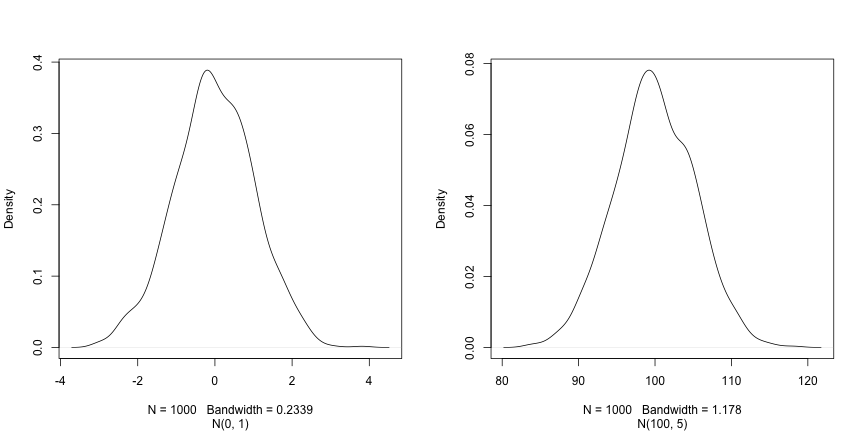
Los tres argumentos, n, mean y
sd, definen el tamaño de la muestra y los parámetros de la
distribución normal, es decir, la media y su desviación estándar. Los
valores predeterminados de estos dos parámetros son 0 y 1,
respectivamente.
R
rnorm(5)
SALIDA
[1] 0.69641761 0.05351568 -1.31028350 -2.12306606 -0.20807859R
rnorm(5, 2, 2)
SALIDA
[1] 1.3744268 -0.1164714 2.8344472 1.3690969 3.6510983R
rnorm(5, 100, 5)
SALIDA
[1] 106.45636 96.87448 95.62427 100.71678 107.12595Ahora que hemos aprendido a escribir scripts y los conceptos básicos de las estructuras de datos de R, estamos listos para empezar a trabajar con datos más extensos y aprender sobre las tablas de datos.
- Cómo interactuar con R
Content from Comenzando con los datos
Última actualización: 2026-11-11 | Mejora esta página
Tiempo estimado: 60 minutos
Hoja de ruta
Preguntas
- Primer análisis de datos en R
Objetivos
- Describa qué es un
data.frame. - Cargar datos externos de un archivo .csv en una tabla de datos.
- Resume el contenido de una tabla de datos.
- Describa qué es un factor.
- Convertir entre cadenas y factores.
- Reordenar y renombrar factores.
- Formatear fechas.
- Exportar y guardar datos.
Este episodio se basa en la lección Data Analysis and Visualisation in R for Ecologists de Data Carpentries.
Presentación de los datos de expresión génica
Vamos a utilizar una parte de los datos publicados por Blackmore et al. (2017), The effect of upper-respiratory infection on transcriptomic changes in the CNS. El objetivo del estudio fue determinar el efecto de una infección de las vías respiratorias superiores sobre los cambios en la transcripción de ARN que ocurren en el cerebelo y la médula espinal tras la infección. Ratones C57BL/6 de ocho semanas de edad, emparejados por sexo, fueron inoculados con solución salina o con Influenza A por vía intranasal, y los cambios transcriptómicos en los tejidos del cerebelo y de la médula espinal se evaluaron mediante RNA-seq en los días 0 (no infectados), 4 y 8.
El conjunto de datos se almacena como un archivo de valores separados por comas (CSV). Cada fila contiene información sobre una sola medición de expresión de ARN, y las once primeras columnas representan:
| Columna | Descripción |
|---|---|
| gene | El nombre del gen que se midió |
| sample | El nombre de la muestra en la que se midió la expresión génica |
| expression | El valor de la expresión génica |
| organism | El organismo/especie - aquí todos los datos provienen de ratones |
| age | La edad del ratón (aquí todos los ratones tenían 8 semanas) |
| sex | El sexo del ratón |
| infection | El estado de infección del ratón, es decir, infectado con Influenza A o no infectado. |
| strain | La cepa de Influenza A. |
| time | La duración de la infección (en días). |
| tissue | El tejido que se utilizó para el experimento de expresión génica, es decir, el cerebelo o la médula espinal. |
| mouse | El identificador único del ratón. |
Vamos a utilizar la función de R download.file() para
descargar el archivo CSV que contiene los datos de expresión génica, y
utilizaremos read.csv() para cargar en memoria el contenido
del archivo CSV como un objeto de clase data.frame. Dentro
del comando download.file, la primera entrada es una cadena
de caracteres con la URL de origen. Esta URL de origen descarga un
archivo CSV de un repositorio de GitHub. El texto después de la coma
("data/rnaseq.csv") es el destino del archivo en su máquina
local. Necesitará tener una carpeta en su máquina llamada
"data" donde descargará el archivo. Por lo tanto, este
comando descarga el archivo remoto, le asigna el nombre
"rnaseq.csv" y lo añade a una carpeta preexistente llamada
"data".
R
download.file(url = "https://github.com/carpentries-incubator/bioc-intro/raw/main/episodes/data/rnaseq.csv",
destfile = "data/rnaseq.csv")
Ya está listo para cargar los datos:
R
rna <- read.csv("data/rnaseq.csv")
Esta instrucción no produce ninguna salida porque, como probablemente recuerde, las asignaciones no muestran nada. Si queremos comprobar que los datos se han cargado, podemos ver el contenido de la tabla de datos escribiendo su nombre:
R
rna
Vaya… fue mucha salida. Al menos significa que los datos se cargaron
correctamente. Revisemos la parte superior (las primeras 6 líneas) de
esta tabla de datos utilizando la función head():
R
head(rna)
SALIDA
gene sample expression organism age sex infection strain time
1 Asl GSM2545336 1170 Mus musculus 8 Female InfluenzaA C57BL/6 8
2 Apod GSM2545336 36194 Mus musculus 8 Female InfluenzaA C57BL/6 8
3 Cyp2d22 GSM2545336 4060 Mus musculus 8 Female InfluenzaA C57BL/6 8
4 Klk6 GSM2545336 287 Mus musculus 8 Female InfluenzaA C57BL/6 8
5 Fcrls GSM2545336 85 Mus musculus 8 Female InfluenzaA C57BL/6 8
6 Slc2a4 GSM2545336 782 Mus musculus 8 Female InfluenzaA C57BL/6 8
tissue mouse ENTREZID
1 Cerebellum 14 109900
2 Cerebellum 14 11815
3 Cerebellum 14 56448
4 Cerebellum 14 19144
5 Cerebellum 14 80891
6 Cerebellum 14 20528
product
1 argininosuccinate lyase, transcript variant X1
2 apolipoprotein D, transcript variant 3
3 cytochrome P450, family 2, subfamily d, polypeptide 22, transcript variant 2
4 kallikrein related-peptidase 6, transcript variant 2
5 Fc receptor-like S, scavenger receptor, transcript variant X1
6 solute carrier family 2 (facilitated glucose transporter), member 4
ensembl_gene_id external_synonym chromosome_name gene_biotype
1 ENSMUSG00000025533 2510006M18Rik 5 protein_coding
2 ENSMUSG00000022548 <NA> 16 protein_coding
3 ENSMUSG00000061740 2D22 15 protein_coding
4 ENSMUSG00000050063 Bssp 7 protein_coding
5 ENSMUSG00000015852 2810439C17Rik 3 protein_coding
6 ENSMUSG00000018566 Glut-4 11 protein_coding
phenotype_description
1 abnormal circulating amino acid level
2 abnormal lipid homeostasis
3 abnormal skin morphology
4 abnormal cytokine level
5 decreased CD8-positive alpha-beta T cell number
6 abnormal circulating glucose level
hsapiens_homolog_associated_gene_name
1 ASL
2 APOD
3 CYP2D6
4 KLK6
5 FCRL2
6 SLC2A4R
## Try also
## View(rna)
Nota
read.csv() asume que los campos están delimitados por
comas; sin embargo, en varios países, la coma se utiliza como separador
decimal y el punto y coma (;) como delimitador de campos. Si desea leer
este tipo de archivos en R, puede utilizar la función
read.csv2(). Se comporta exactamente como
read.csv(), pero utiliza parámetros diferentes para los
separadores decimal y de campos. Si trabaja con otro formato, ambos
pueden ser especificados por el usuario. Consulte la ayuda de
read.csv() escribiendo ?read.csv para obtener
más información. También existe la función read.delim()
para leer archivos de datos separados por tabulaciones. Es importante
tener en cuenta que todas estas funciones son, en realidad, funciones
wrapper para la función principal read.table() con
argumentos diferentes. Por lo tanto, los datos anteriores también
podrían haberse cargado utilizando read.table() con el
argumento de separación como ,. El código es el
siguiente:
R
rna <- read.table(file = "data/rnaseq.csv",
sep = ",",
header = TRUE)
El argumento header debe establecerse en TRUE para poder leer los
encabezados, ya que, por defecto, read.table() tiene el
argumento header establecido en FALSE.
¿Qué son las tablas de datos?
Las tablas de datos son la estructura de datos de facto para la mayoría de los datos en formato tabular, y es lo que utilizamos para estadísticas y gráficos.
Una tabla de datos puede crearse manualmente, pero lo más común es
que se generen mediante las funciones read.csv() o
read.table(); en otras palabras, al importar hojas de
cálculo desde su disco duro (o de la web).
Una tabla de datos es la representación de los datos en formato de tabla, donde las columnas son vectores que tienen todos la misma longitud. Debido a que las columnas son vectores, cada columna debe contener un único tipo de dato (por ejemplo, caracteres, enteros, factores). Por ejemplo, aquí hay una figura que representa una tabla de datos compuesta por un vector numérico, uno de caracteres y uno lógico.

Podemos ver esto al inspeccionar la estructura de una tabla de
datos con la función str():
R
str(rna)
SALIDA
'data.frame': 32428 obs. of 19 variables:
$ gene : chr "Asl" "Apod" "Cyp2d22" "Klk6" ...
$ sample : chr "GSM2545336" "GSM2545336" "GSM2545336" "GSM2545336" ...
$ expression : int 1170 36194 4060 287 85 782 1619 288 43217 1071 ...
$ organism : chr "Mus musculus" "Mus musculus" "Mus musculus" "Mus musculus" ...
$ age : int 8 8 8 8 8 8 8 8 8 8 ...
$ sex : chr "Female" "Female" "Female" "Female" ...
$ infection : chr "InfluenzaA" "InfluenzaA" "InfluenzaA" "InfluenzaA" ...
$ strain : chr "C57BL/6" "C57BL/6" "C57BL/6" "C57BL/6" ...
$ time : int 8 8 8 8 8 8 8 8 8 8 ...
$ tissue : chr "Cerebellum" "Cerebellum" "Cerebellum" "Cerebellum" ...
$ mouse : int 14 14 14 14 14 14 14 14 14 14 ...
$ ENTREZID : int 109900 11815 56448 19144 80891 20528 97827 118454 18823 14696 ...
$ product : chr "argininosuccinate lyase, transcript variant X1" "apolipoprotein D, transcript variant 3" "cytochrome P450, family 2, subfamily d, polypeptide 22, transcript variant 2" "kallikrein related-peptidase 6, transcript variant 2" ...
$ ensembl_gene_id : chr "ENSMUSG00000025533" "ENSMUSG00000022548" "ENSMUSG00000061740" "ENSMUSG00000050063" ...
$ external_synonym : chr "2510006M18Rik" NA "2D22" "Bssp" ...
$ chromosome_name : chr "5" "16" "15" "7" ...
$ gene_biotype : chr "protein_coding" "protein_coding" "protein_coding" "protein_coding" ...
$ phenotype_description : chr "abnormal circulating amino acid level" "abnormal lipid homeostasis" "abnormal skin morphology" "abnormal cytokine level" ...
$ hsapiens_homolog_associated_gene_name: chr "ASL" "APOD" "CYP2D6" "KLK6" ...Inspección de objetos data.frame
Ya vimos cómo las funciones head() y str()
pueden ser útiles para comprobar el contenido y la estructura de una
tabla de datos. Aquí tienes una lista no exhaustiva de funciones para
hacerte una idea del contenido/estructura de los datos.
¡Probémoslas!
Tamaño:
-
dim(rna)- devuelve un vector con el número de filas como primer elemento y el número de columnas como segundo elemento (las dimensiones del objeto). -
nrow(rna)- devuelve el número de filas. -
ncol(rna)- devuelve el número de columnas.
Contenido:
-
head(rna)- muestra las primeras 6 filas. -
tail(rna)- muestra las últimas 6 filas.
Nombres:
-
names(rna)- devuelve los nombres de las columnas (sinónimo decolnames()para objetosdata.frame). -
rownames(rna)- devuelve los nombres de las filas.
Resumen:
-
str(rna)- estructura del objeto e información sobre la clase, la longitud y el contenido de cada columna. -
summary(rna)- estadísticas resumidas para cada columna.
Nota: la mayoría de estas funciones son “genéricas”; pueden
utilizarse con otros tipos de objetos además de
data.frame.
Desafío:
Basándote en la salida de str(rna), ¿puedes responder a
las siguientes preguntas?
- ¿Cuál es la clase del objeto
rna? - ¿Cuántas filas y cuántas columnas tiene este objeto?
- clase: tabla de datos
- cuántas filas: 32428, cuántas columnas: 19
Indexación y selección de subconjuntos de tablas de datos
Nuestra tabla de datos rna tiene filas y columnas (tiene
2 dimensiones); si queremos extraer algunos datos específicos de ella,
necesitamos especificar las “coordenadas” que deseamos. Los números de
fila vienen primero, seguidos de los números de columna. No obstante,
tenga en cuenta que las diferentes formas de especificar estas
coordenadas dan lugar a resultados con clases distintas.
R
# first element in the first column of the data frame (as a vector)
rna[1, 1]
# first element in the 6th column (as a vector)
rna[1, 6]
# first column of the data frame (as a vector)
rna[, 1]
# first column of the data frame (as a data.frame)
rna[1]
# first three elements in the 7th column (as a vector)
rna[1:3, 7]
# the 3rd row of the data frame (as a data.frame)
rna[3, ]
# equivalent to head_rna <- head(rna)
head_rna <- rna[1:6, ]
head_rna
: es una función especial que crea vectores numéricos de
enteros en orden creciente o decreciente; pruebe 1:10 y
10:1, por ejemplo. Consulte la sección sobre la generación de
vectores para obtener más detalles.
También puede excluir ciertos índices de una tabla de datos
utilizando el signo “-”:
R
rna[, -1] ## The whole data frame, except the first column
rna[-c(7:66465), ] ## Equivalent to head(rna)
Se pueden seleccionar subconjuntos de las tablas de datos mediante sus índices (como se mostró anteriormente), pero también usando directamente los nombres de sus columnas:
R
rna["gene"] # Result is a data.frame
rna[, "gene"] # Result is a vector
rna[["gene"]] # Result is a vector
rna$gene # Result is a vector
En RStudio, puede utilizar la función de autocompletado para obtener los nombres completos y correctos de las columnas.
Desafío
Crea un
data.frame(rna_200) que contenga únicamente los datos de la fila 200 del conjunto de datosrna.¿Observas cómo
nrow()te dio el número de filas de undata.frame?
Utilice ese número para extraer únicamente esa última fila de la tabla de datos inicial
rna.Compáralo con lo que ves como la última fila usando
tail()para asegurarte de que coincide con lo esperado.Extraiga esa última fila utilizando
nrow()en lugar del número de fila.Crea una nueva tabla de datos (
rna_last) a partir de esa última fila.
Utilice
nrow()para extraer la fila que se encuentra en el centro de la tabla de datosrna. Guarde el contenido de esta fila en un objeto llamadorna_middle.Combina
nrow()con la notación-anterior para reproducir el comportamiento dehead(rna), manteniendo únicamente las filas del 1 al 6 del conjunto de datos rna.
R
## 1.
rna_200 <- rna[200, ]
## 2.
## Saving `n_rows` to improve readability and reduce duplication
n_rows <- nrow(rna)
rna_last <- rna[n_rows, ]
## 3.
rna_middle <- rna[n_rows / 2, ]
## 4.
rna_head <- rna[-(7:n_rows), ]
Factores
Los factores representan datos categóricos. Se almacenan como enteros asociados a etiquetas y pueden ser ordenados o no ordenados. Aunque los factores parecen (y a menudo se comportan) como vectores de caracteres, R los trata en realidad como vectores de enteros. Por lo tanto, es necesario tener mucho cuidado al tratarlos como cadenas.
Una vez creados, los factores solo pueden contener un conjunto de valores predefinidos, conocidos como niveles. Por defecto, R siempre ordena los niveles alfabéticamente. Por ejemplo, si tiene un factor con 2 niveles:
R
sex <- factor(c("male", "female", "female", "male", "female"))
R asignará 1 al nivel "female" y
2 al nivel "male" (ya que f
precede a m, a pesar de que el primer elemento de este
vector es "male"). Puede comprobar esto utilizando la
función levels() y puede encontrar el número de niveles
usando nlevels():
R
levels(sex)
SALIDA
[1] "female" "male" R
nlevels(sex)
SALIDA
[1] 2A veces, el orden de los factores no es relevante; en otras
ocasiones, es posible que desee especificar el orden porque tiene un
significado (por ejemplo, “bajo”, “medio”, “alto”), mejora la
visualización o es necesario para un tipo particular de análisis. En
este caso, una forma de reordenar nuestros niveles en el vector
sex sería:
R
sex ## current order
SALIDA
[1] male female female male female
Levels: female maleR
sex <- factor(sex, levels = c("male", "female"))
sex ## after re-ordering
SALIDA
[1] male female female male female
Levels: male femaleEn la memoria de R, estos factores se representan mediante enteros
(1, 2, 3), pero son más informativos que estos porque se describen a sí
mismos: las etiquetas "female" y "male" son
más descriptivas que 1 y 2. ¿Cuál de los
enteros corresponde a “male” (macho)? No se puede saber solo a partir de
los valores enteros. Los factores, en cambio, incluyen esa información.
Esto resulta especialmente útil cuando hay muchos niveles (como el
biotipo génico en nuestro conjunto de datos de ejemplo).
Cuando sus datos se almacenan como un factor, puede utilizar la
función plot() para obtener una vista rápida del número de
observaciones representadas por cada nivel del factor. Veamos el número
de machos y hembras en nuestros datos.
R
plot(sex)

Conversión a carácter
Si necesita convertir un factor a un vector de caracteres, utilice
as.character(x).
R
as.character(sex)
SALIDA
[1] "male" "female" "female" "male" "female"Renombrar factores
Si queremos renombrar este factor, basta con cambiar sus niveles:
R
levels(sex)
SALIDA
[1] "male" "female"R
levels(sex) <- c("M", "F")
sex
SALIDA
[1] M F F M F
Levels: M FR
plot(sex)

Desafío:
- Cambiar el nombre de “F” y “M” a “Female” y “Male”, respectivamente.
R
levels(sex)
SALIDA
[1] "M" "F"R
levels(sex) <- c("Male", "Female")
Desafío:
Hemos visto cómo se crean las tablas de datos al usar
read.csv(), pero también pueden crearse manualmente con la
función data.frame(). Hay algunos errores en esta
data.frame creada a mano. ¿Puedes detectarlos y
corregirlos? ¡No dudes en experimentar!
- faltan comillas alrededor de los nombres de los animales
- falta un registro en la columna “feel” (probablemente de uno de los animales peludos)
- falta una coma en la columna de peso
Desafío:
¿Puedes predecir la clase de cada una de las columnas en el siguiente ejemplo?
Verifica tus conjeturas usando str(country_climate):
¿Son lo que esperabas? ¿Por qué? ¿Por qué no?
Inténtalo de nuevo añadiendo
stringsAsFactors = TRUEdespués de la última variable al crear la tabla de datos. ¿Qué está pasando ahora? También se puede establecerstringsAsFactorsal leer hojas de cálculo basadas en texto en R utilizandoread.csv().
R
country_climate <- data.frame(
country = c("Canada", "Panama", "South Africa", "Australia"),
climate = c("cold", "hot", "temperate", "hot/temperate"),
temperature = c(10, 30, 18, "15"),
northern_hemisphere = c(TRUE, TRUE, FALSE, "FALSE"),
has_kangaroo = c(FALSE, FALSE, FALSE, 1)
)
R
country_climate <- data.frame(
country = c("Canada", "Panama", "South Africa", "Australia"),
climate = c("cold", "hot", "temperate", "hot/temperate"),
temperature = c(10, 30, 18, "15"),
northern_hemisphere = c(TRUE, TRUE, FALSE, "FALSE"),
has_kangaroo = c(FALSE, FALSE, FALSE, 1)
)
str(country_climate)
SALIDA
'data.frame': 4 obs. of 5 variables:
$ country : chr "Canada" "Panama" "South Africa" "Australia"
$ climate : chr "cold" "hot" "temperate" "hot/temperate"
$ temperature : chr "10" "30" "18" "15"
$ northern_hemisphere: chr "TRUE" "TRUE" "FALSE" "FALSE"
$ has_kangaroo : num 0 0 0 1La conversión automática del tipo de datos a veces es una ventaja y a veces una molestia. Tenga en cuenta que existe, aprenda las reglas y verifique dos veces que los datos que importa en R sean del tipo correcto dentro de su tabla de datos. Si no es así, utilícelo para detectar errores que pudieron haberse introducido durante la entrada de datos (por ejemplo, una letra en una columna que solo debería contener números).
Más información en este tutorial de RStudio
Matrices
Antes de continuar, ahora que hemos aprendido sobre las tablas de
datos, repasemos la instalación de paquetes y conozcamos un nuevo tipo
de dato: el matrix. Al igual que el
data.frame, una matriz tiene dos dimensiones, filas y
columnas. Pero la diferencia principal es que todas las celdas de una
matrix deben ser del mismo tipo: numeric,
character, logical, … En ese sentido, las
matrices se asemejan más a un vector que a un
data.frame.
El constructor predeterminado para una matriz es matrix.
Recibe un vector de valores para llenar la matriz y el número de filas
y/o columnas1. Los valores se colocan por columnas, como
se ilustra a continuación.
R
m <- matrix(1:9, ncol = 3, nrow = 3)
m
SALIDA
[,1] [,2] [,3]
[1,] 1 4 7
[2,] 2 5 8
[3,] 3 6 9Desafío:
Utilizando la función installed.packages(), crea una
matriz character que contenga la información sobre todos
los paquetes actualmente instalados en tu computadora. Explórala.
R
## create the matrix
ip <- installed.packages()
head(ip)
## try also View(ip)
## number of package
nrow(ip)
## names of all installed packages
rownames(ip)
## type of information we have about each package
colnames(ip)
A menudo resulta útil crear matrices de datos aleatorias de gran
tamaño como datos de prueba. El siguiente ejercicio le pide que cree
dicha matriz con datos aleatorios extraídos de una distribución normal
de media 0 y desviación estándar 1, lo cual puede hacerse con la función
rnorm().
Desafío:
Construya una matriz de dimensiones 1000 por 3 con datos normalmente distribuidos (media 0, desviación estándar 1)
R
set.seed(123)
m <- matrix(rnorm(3000), ncol = 3)
dim(m)
SALIDA
[1] 1000 3R
head(m)
SALIDA
[,1] [,2] [,3]
[1,] -0.56047565 -0.99579872 -0.5116037
[2,] -0.23017749 -1.03995504 0.2369379
[3,] 1.55870831 -0.01798024 -0.5415892
[4,] 0.07050839 -0.13217513 1.2192276
[5,] 0.12928774 -2.54934277 0.1741359
[6,] 1.71506499 1.04057346 -0.6152683Formato de fechas
Uno de los problemas más comunes que presentan los usuarios nuevos (¡y experimentados!) de R es convertir la información de fecha y hora en una variable adecuada y utilizable durante los análisis.
Nota sobre las fechas en programas de hojas de cálculo
Las fechas en las hojas de cálculo suelen almacenarse en una sola columna. Aunque esto parece la forma más natural de registrar las fechas, en realidad no es la mejor práctica. Una aplicación de hojas de cálculo mostrará las fechas de una manera aparentemente correcta (para un observador humano), pero la forma en que realmente gestiona y almacena las fechas puede resultar problemática. A menudo es mucho más seguro almacenar las fechas con el AÑO, el MES y el DÍA en columnas separadas, o como el AÑO y el DÍA DEL AÑO en columnas separadas.
Los programas de hojas de cálculo como LibreOffice, Microsoft Excel, OpenOffice, Gnumeric, … tienen formas diferentes (y a menudo incompatibles) de codificar las fechas (incluso dentro del mismo programa entre versiones y sistemas operativos). Además, Excel puede convertir elementos que no son fechas en fechas ( Zeeberg et al. (2004) ), por ejemplo, nombres o identificadores como MAR1, DEC1, OCT4. Por lo tanto, si se evita el formato de fecha en general, es más sencillo identificar estos problemas.
La sección Dates as data de la lección de Data Carpentry ofrece información adicional sobre los peligros de las fechas en las hojas de cálculo.
Vamos a utilizar la función ymd() del paquete
lubridate (que pertenece a
tidyverse; obtenga más información en el
sitio web de tidyverse).
lubridate se instala como parte de la
instalación de tidyverse. Cuando carga el
tidyverse
(library(tidyverse)), se cargan los paquetes principales
(los paquetes utilizados en la mayoría de los análisis de datos).
lubridate, sin embargo, no pertenece al
tidyverse principal, por lo que debe cargarlo explícitamente con
library(lubridate).
Comience cargando el paquete necesario:
R
library("lubridate")
ymd() acepta un vector que representa el año, el mes y
el día, y lo convierte en un vector Date. Date
es una clase de datos que R reconoce como una fecha y que puede
manipularse como tal. El argumento que requiere la función es flexible,
pero, como buena práctica, es un vector de caracteres formateado como
“YYYY-MM-DD”.
Creemos un objeto de fecha y examinemos su estructura:
R
my_date <- ymd("2015-01-01")
str(my_date)
SALIDA
Date[1:1], format: "2015-01-01"Ahora concatenemos el año, el mes y el día, proporcionados por separado: obtenemos el mismo resultado:
R
# sep indicates the character to use to separate each component
my_date <- ymd(paste("2015", "1", "1", sep = "-"))
str(my_date)
SALIDA
Date[1:1], format: "2015-01-01"Ahora familiaricémonos con un flujo de trabajo típico para manipular
fechas. El pequeño conjunto de datos que aparece a continuación almacena
las fechas en columnas separadas: year, month
y day.
R
x <- data.frame(year = c(1996, 1992, 1987, 1986, 2000, 1990, 2002, 1994, 1997, 1985),
month = c(2, 3, 3, 10, 1, 8, 3, 4, 5, 5),
day = c(24, 8, 1, 5, 8, 17, 13, 10, 11, 24),
value = c(4, 5, 1, 9, 3, 8, 10, 2, 6, 7))
x
SALIDA
year month day value
1 1996 2 24 4
2 1992 3 8 5
3 1987 3 1 1
4 1986 10 5 9
5 2000 1 8 3
6 1990 8 17 8
7 2002 3 13 10
8 1994 4 10 2
9 1997 5 11 6
10 1985 5 24 7Ahora aplicamos esta función al conjunto de datos x.
Primero creamos un vector de caracteres a partir de las columnas
year, month y day de
x utilizando paste():
R
paste(x$year, x$month, x$day, sep = "-")
SALIDA
[1] "1996-2-24" "1992-3-8" "1987-3-1" "1986-10-5" "2000-1-8" "1990-8-17"
[7] "2002-3-13" "1994-4-10" "1997-5-11" "1985-5-24"Este vector de caracteres puede utilizarse como argumento para
ymd():
R
ymd(paste(x$year, x$month, x$day, sep = "-"))
SALIDA
[1] "1996-02-24" "1992-03-08" "1987-03-01" "1986-10-05" "2000-01-08"
[6] "1990-08-17" "2002-03-13" "1994-04-10" "1997-05-11" "1985-05-24"El vector Date resultante puede añadirse a
x como una nueva columna llamada date:
R
x$date <- ymd(paste(x$year, x$month, x$day, sep = "-"))
str(x) # notice the new column, with 'date' as the class
SALIDA
'data.frame': 10 obs. of 5 variables:
$ year : num 1996 1992 1987 1986 2000 ...
$ month: num 2 3 3 10 1 8 3 4 5 5
$ day : num 24 8 1 5 8 17 13 10 11 24
$ value: num 4 5 1 9 3 8 10 2 6 7
$ date : Date, format: "1996-02-24" "1992-03-08" ...Asegurémonos de que todo haya funcionado correctamente. Una forma de
inspeccionar la nueva columna es utilizar summary():
R
summary(x$date)
SALIDA
Min. 1st Qu. Median Mean 3rd Qu. Max.
"1985-05-24" "1988-01-11" "1993-03-24" "1993-03-18" "1997-01-20" "2002-03-13" Tenga en cuenta que ymd() requiere que el año, el mes y
el día estén en ese orden. Si, por ejemplo, dispone del día, el mes y el
año, necesitaría dmy().
R
dmy(paste(x$day, x$month, x$year, sep = "-"))
SALIDA
[1] "1996-02-24" "1992-03-08" "1987-03-01" "1986-10-05" "2000-01-08"
[6] "1990-08-17" "2002-03-13" "1994-04-10" "1997-05-11" "1985-05-24"lubdridate cuenta con numerosas funciones para gestionar
todas las variaciones de fecha.
Resumen de los objetos de R
Hasta ahora, hemos visto varios tipos de objetos de R que varían en el número de dimensiones y en si podían almacenar un único tipo de dato o múltiples tipos de datos:
-
vector: una dimensión (tienen una longitud), un único tipo de dato. -
matrix: dos dimensiones, un único tipo de dato. -
data.frame: dos dimensiones, un tipo por columna.
Listas
Las listas son un tipo de datos que aún no hemos visto, pero que resulta útil conocer y que se desprende del resumen que acabamos de ver:
-
list: una dimensión, cada elemento puede ser de un tipo de dato diferente.
A continuación, creemos una lista que contenga un vector de números, caracteres, una matriz, una tabla de datos y otra lista:
R
l <- list(1:10, ## numeric
letters, ## character
installed.packages(), ## a matrix
cars, ## a data.frame
list(1, 2, 3)) ## a list
length(l)
SALIDA
[1] 5R
str(l)
SALIDA
List of 5
$ : int [1:10] 1 2 3 4 5 6 7 8 9 10
$ : chr [1:26] "a" "b" "c" "d" ...
$ : chr [1:261, 1:17] "litedown" "metabolomicsWorkbenchR" "mgcv" "MultiAssayExperiment" ...
..- attr(*, "dimnames")=List of 2
.. ..$ : chr [1:261] "litedown" "metabolomicsWorkbenchR" "mgcv" "MultiAssayExperiment" ...
.. ..$ : chr [1:17] "Package" "LibPath" "Version" "Priority" ...
$ :'data.frame': 50 obs. of 2 variables:
..$ speed: num [1:50] 4 4 7 7 8 9 10 10 10 11 ...
..$ dist : num [1:50] 2 10 4 22 16 10 18 26 34 17 ...
$ :List of 3
..$ : num 1
..$ : num 2
..$ : num 3La selección de subconjuntos de una lista se realiza utilizando
[] para obtener una nueva sublista o [[]] para
extraer un único elemento de esa lista (mediante índices o nombres, si
sus elementos tienen nombre).
R
l[[1]] ## first element
SALIDA
[1] 1 2 3 4 5 6 7 8 9 10R
l[1:2] ## a list of length 2
SALIDA
[[1]]
[1] 1 2 3 4 5 6 7 8 9 10
[[2]]
[1] "a" "b" "c" "d" "e" "f" "g" "h" "i" "j" "k" "l" "m" "n" "o" "p" "q" "r" "s"
[20] "t" "u" "v" "w" "x" "y" "z"R
l[1] ## a list of length 1
SALIDA
[[1]]
[1] 1 2 3 4 5 6 7 8 9 10Exportación y guardado de datos tabulares
Hemos visto cómo leer una hoja de cálculo basada en texto en R
utilizando la familia de funciones read.table. Para
exportar un data.frame a una hoja de cálculo basada en
texto, podemos utilizar el conjunto de funciones
write.table (write.csv,
write.delim, …). Todas ellas reciben la variable a exportar
y el archivo al que se desea exportar. Por ejemplo, para exportar los
datos rna al archivo my_rna.csv en el
directorio data_output, ejecutaríamos:
R
write.csv(rna, file = "data_output/my_rna.csv")
Ahora se puede compartir este nuevo archivo CSV con otros
colaboradores que no estén familiarizados con R. Tenga en cuenta que,
aunque haya comas en algunos de los campos de data.frame
(véase, por ejemplo, la columna “product”), R encerrará cada campo entre
comillas por defecto y, por lo tanto, podremos leerlo correctamente en
R, a pesar de que también se utilicen comas como separadores de
columnas.
- Datos en tabla en R
Basta con indicar el número de filas o el de columnas, ya que la otra dimensión se puede deducir de la longitud del vector de valores. Pruebe qué ocurre si la cantidad de valores y el número de filas/columnas no son compatibles.↩︎
Content from Manipulación y análisis de datos con dplyr
Última actualización: 2026-11-11 | Mejora esta página
Tiempo estimado: 150 minutos
Hoja de ruta
Preguntas
- Análisis de datos en R utilizando el metapaquete tidyverse
Objetivos
- Describa el propósito de los paquetes
dplyrytidyr. - Describa varias de sus funciones que son extremadamente útiles para manipular datos.
- Describa el concepto de los formatos de tabla ancho y largo, y vea cómo reestructurar una tabla de datos de un formato a otro.
- Demostrar cómo unir tablas.
Este episodio se basa en la lección Data Analysis and Visualisation in R for Ecologists de Data Carpentries.
Manipulación de datos mediante dplyr y
tidyr
La selección de subconjuntos mediante corchetes es práctica, pero puede resultar engorrosa y difícil de leer, especialmente en operaciones complicadas.
Algunos paquetes pueden facilitar considerablemente nuestra tarea al
manipular datos. Los paquetes en R son, básicamente, conjuntos de
funciones adicionales que nos permiten hacer más cosas. Las funciones
que hemos estado utilizando hasta ahora, como str() o
data.frame(), vienen integradas en R; cargar paquetes puede
darnos acceso a otras funciones específicas. Antes de usar un paquete
por primera vez, es necesario instalarlo en la máquina y,
posteriormente, importarlo en cada sesión posterior de R cuando lo
necesitemos.
El paquete
dplyrofrece herramientas potentes para tareas de manipulación de datos. Está diseñado para funcionar directamente con tablas de datos, con muchas tareas de manipulación optimizadas.Como veremos más adelante, a veces queremos que una tabla de datos se reorganice para poder realizar ciertos análisis específicos o para su visualización. El paquete
tidyraborda este problema común de reorganización de datos y proporciona herramientas para manipular los datos de manera ordenada.
Para obtener más información sobre
dplyr y
tidyr después del taller, puede consultar
este cheatsheet
práctico de transformación de datos con
dplyr y este de
tidyr.
- El paquete
tidyversees un “paquete paraguas” que instala varios paquetes útiles para el análisis de datos que funcionan bien juntos, comotidyr,dplyr,ggplot2,tibble, etc. Estos paquetes nos ayudan a trabajar e interactuar con los datos. Nos permiten realizar muchas acciones con sus datos, como crear subconjuntos, transformarlos, visualizarlos, etc.
Si realizó la configuración, ya debería haber instalado el paquete tidyverse. Compruebe si lo tiene intentando cargarlo desde la biblioteca:
R
## load the tidyverse packages, incl. dplyr
library("tidyverse")
Si obtuviste un mensaje de error
there is no package called ‘tidyverse’, es que aún no has
instalado el paquete para esta versión de R. Para instalar el paquete
tidyverse, escribe:
R
BiocManager::install("tidyverse")
Si tuviste que instalar el paquete
tidyverse, ¡no olvides cargarlo en esta
sesión de R utilizando el comando library() anterior!
Cargando datos con tidyverse
En lugar de read.csv(), cargaremos nuestros datos
utilizando la función read_csv() (fíjese en el
_ en lugar del .), del paquete tidyverse
readr.
R
rna <- read_csv("data/rnaseq.csv")
## view the data
rna
SALIDA
# A tibble: 32,428 × 19
gene sample expression organism age sex infection strain time tissue
<chr> <chr> <dbl> <chr> <dbl> <chr> <chr> <chr> <dbl> <chr>
1 Asl GSM254… 1170 Mus mus… 8 Fema… Influenz… C57BL… 8 Cereb…
2 Apod GSM254… 36194 Mus mus… 8 Fema… Influenz… C57BL… 8 Cereb…
3 Cyp2d22 GSM254… 4060 Mus mus… 8 Fema… Influenz… C57BL… 8 Cereb…
4 Klk6 GSM254… 287 Mus mus… 8 Fema… Influenz… C57BL… 8 Cereb…
5 Fcrls GSM254… 85 Mus mus… 8 Fema… Influenz… C57BL… 8 Cereb…
6 Slc2a4 GSM254… 782 Mus mus… 8 Fema… Influenz… C57BL… 8 Cereb…
7 Exd2 GSM254… 1619 Mus mus… 8 Fema… Influenz… C57BL… 8 Cereb…
8 Gjc2 GSM254… 288 Mus mus… 8 Fema… Influenz… C57BL… 8 Cereb…
9 Plp1 GSM254… 43217 Mus mus… 8 Fema… Influenz… C57BL… 8 Cereb…
10 Gnb4 GSM254… 1071 Mus mus… 8 Fema… Influenz… C57BL… 8 Cereb…
# ℹ 32,418 more rows
# ℹ 9 more variables: mouse <dbl>, ENTREZID <dbl>, product <chr>,
# ensembl_gene_id <chr>, external_synonym <chr>, chromosome_name <chr>,
# gene_biotype <chr>, phenotype_description <chr>,
# hsapiens_homolog_associated_gene_name <chr>Nótese que la clase de los datos se denomina ahora «tibble».
Los tibbles ajustan algunos de los comportamientos de los objetos de tabla de datos que presentamos anteriormente. La estructura de datos es muy similar a la de una tabla de datos. Para nuestros propósitos, las únicas diferencias son que:
Muestra el tipo de datos de cada columna debajo de su nombre. Tenga en cuenta que <
dbl> es un tipo de datos definido para almacenar valores numéricos con puntos decimales.Solo imprime las primeras filas de datos y solo tantas columnas como quepan en una pantalla.
Ahora vamos a aprender algunas de las funciones
dplyr más comunes:
-
select(): seleccionar columnas -
filter(): seleccionar filas según condiciones -
mutate(): crear nuevas columnas utilizando información de otras columnas -
group_by()ysummarise(): crear estadísticas resumidas sobre datos agrupados -
arrange(): ordenar los resultados -
count(): contar valores discretos
Selección de columnas y filtrado de filas
Para seleccionar columnas de una tabla de datos, utilice
select(). El primer argumento de esta función es la tabla
de datos (rna), y los argumentos siguientes son las
columnas a conservar.
R
select(rna, gene, sample, tissue, expression)
SALIDA
# A tibble: 32,428 × 4
gene sample tissue expression
<chr> <chr> <chr> <dbl>
1 Asl GSM2545336 Cerebellum 1170
2 Apod GSM2545336 Cerebellum 36194
3 Cyp2d22 GSM2545336 Cerebellum 4060
4 Klk6 GSM2545336 Cerebellum 287
5 Fcrls GSM2545336 Cerebellum 85
6 Slc2a4 GSM2545336 Cerebellum 782
7 Exd2 GSM2545336 Cerebellum 1619
8 Gjc2 GSM2545336 Cerebellum 288
9 Plp1 GSM2545336 Cerebellum 43217
10 Gnb4 GSM2545336 Cerebellum 1071
# ℹ 32,418 more rowsPara seleccionar todas las columnas excepto algunas determinadas, coloque un “-” delante de la variable para excluirla.
R
select(rna, -tissue, -organism)
SALIDA
# A tibble: 32,428 × 17
gene sample expression age sex infection strain time mouse ENTREZID
<chr> <chr> <dbl> <dbl> <chr> <chr> <chr> <dbl> <dbl> <dbl>
1 Asl GSM2545… 1170 8 Fema… Influenz… C57BL… 8 14 109900
2 Apod GSM2545… 36194 8 Fema… Influenz… C57BL… 8 14 11815
3 Cyp2d22 GSM2545… 4060 8 Fema… Influenz… C57BL… 8 14 56448
4 Klk6 GSM2545… 287 8 Fema… Influenz… C57BL… 8 14 19144
5 Fcrls GSM2545… 85 8 Fema… Influenz… C57BL… 8 14 80891
6 Slc2a4 GSM2545… 782 8 Fema… Influenz… C57BL… 8 14 20528
7 Exd2 GSM2545… 1619 8 Fema… Influenz… C57BL… 8 14 97827
8 Gjc2 GSM2545… 288 8 Fema… Influenz… C57BL… 8 14 118454
9 Plp1 GSM2545… 43217 8 Fema… Influenz… C57BL… 8 14 18823
10 Gnb4 GSM2545… 1071 8 Fema… Influenz… C57BL… 8 14 14696
# ℹ 32,418 more rows
# ℹ 7 more variables: product <chr>, ensembl_gene_id <chr>,
# external_synonym <chr>, chromosome_name <chr>, gene_biotype <chr>,
# phenotype_description <chr>, hsapiens_homolog_associated_gene_name <chr>Esto seleccionará todas las variables de rna excepto
tissue y organism.
Para seleccionar filas basándose en un criterio específico, utilice
filter():
R
filter(rna, sex == "Male")
SALIDA
# A tibble: 14,740 × 19
gene sample expression organism age sex infection strain time tissue
<chr> <chr> <dbl> <chr> <dbl> <chr> <chr> <chr> <dbl> <chr>
1 Asl GSM254… 626 Mus mus… 8 Male Influenz… C57BL… 4 Cereb…
2 Apod GSM254… 13021 Mus mus… 8 Male Influenz… C57BL… 4 Cereb…
3 Cyp2d22 GSM254… 2171 Mus mus… 8 Male Influenz… C57BL… 4 Cereb…
4 Klk6 GSM254… 448 Mus mus… 8 Male Influenz… C57BL… 4 Cereb…
5 Fcrls GSM254… 180 Mus mus… 8 Male Influenz… C57BL… 4 Cereb…
6 Slc2a4 GSM254… 313 Mus mus… 8 Male Influenz… C57BL… 4 Cereb…
7 Exd2 GSM254… 2366 Mus mus… 8 Male Influenz… C57BL… 4 Cereb…
8 Gjc2 GSM254… 310 Mus mus… 8 Male Influenz… C57BL… 4 Cereb…
9 Plp1 GSM254… 53126 Mus mus… 8 Male Influenz… C57BL… 4 Cereb…
10 Gnb4 GSM254… 1355 Mus mus… 8 Male Influenz… C57BL… 4 Cereb…
# ℹ 14,730 more rows
# ℹ 9 more variables: mouse <dbl>, ENTREZID <dbl>, product <chr>,
# ensembl_gene_id <chr>, external_synonym <chr>, chromosome_name <chr>,
# gene_biotype <chr>, phenotype_description <chr>,
# hsapiens_homolog_associated_gene_name <chr>R
filter(rna, sex == "Male" & infection == "NonInfected")
SALIDA
# A tibble: 4,422 × 19
gene sample expression organism age sex infection strain time tissue
<chr> <chr> <dbl> <chr> <dbl> <chr> <chr> <chr> <dbl> <chr>
1 Asl GSM254… 535 Mus mus… 8 Male NonInfec… C57BL… 0 Cereb…
2 Apod GSM254… 13668 Mus mus… 8 Male NonInfec… C57BL… 0 Cereb…
3 Cyp2d22 GSM254… 2008 Mus mus… 8 Male NonInfec… C57BL… 0 Cereb…
4 Klk6 GSM254… 1101 Mus mus… 8 Male NonInfec… C57BL… 0 Cereb…
5 Fcrls GSM254… 375 Mus mus… 8 Male NonInfec… C57BL… 0 Cereb…
6 Slc2a4 GSM254… 249 Mus mus… 8 Male NonInfec… C57BL… 0 Cereb…
7 Exd2 GSM254… 3126 Mus mus… 8 Male NonInfec… C57BL… 0 Cereb…
8 Gjc2 GSM254… 791 Mus mus… 8 Male NonInfec… C57BL… 0 Cereb…
9 Plp1 GSM254… 98658 Mus mus… 8 Male NonInfec… C57BL… 0 Cereb…
10 Gnb4 GSM254… 2437 Mus mus… 8 Male NonInfec… C57BL… 0 Cereb…
# ℹ 4,412 more rows
# ℹ 9 more variables: mouse <dbl>, ENTREZID <dbl>, product <chr>,
# ensembl_gene_id <chr>, external_synonym <chr>, chromosome_name <chr>,
# gene_biotype <chr>, phenotype_description <chr>,
# hsapiens_homolog_associated_gene_name <chr>Ahora imaginemos que nos interesan los homólogos humanos de los genes
de ratón analizados en este conjunto de datos. Esta información se
encuentra en la última columna del tibble rna, llamada
hsapiens_homolog_associated_gene_name. Para visualizarla
fácilmente, crearemos una nueva tabla que contenga únicamente las 2
columnas gene y
hsapiens_homolog_associated_gene_name.
R
genes <- select(rna, gene, hsapiens_homolog_associated_gene_name)
genes
SALIDA
# A tibble: 32,428 × 2
gene hsapiens_homolog_associated_gene_name
<chr> <chr>
1 Asl ASL
2 Apod APOD
3 Cyp2d22 CYP2D6
4 Klk6 KLK6
5 Fcrls FCRL2
6 Slc2a4 SLC2A4
7 Exd2 EXD2
8 Gjc2 GJC2
9 Plp1 PLP1
10 Gnb4 GNB4
# ℹ 32,418 more rowsAlgunos genes de ratón no tienen homólogos humanos. Estos pueden
obtenerse mediante filter() y la función
is.na(), que determina si algo es un NA.
R
filter(genes, is.na(hsapiens_homolog_associated_gene_name))
SALIDA
# A tibble: 4,290 × 2
gene hsapiens_homolog_associated_gene_name
<chr> <chr>
1 Prodh <NA>
2 Tssk5 <NA>
3 Vmn2r1 <NA>
4 Gm10654 <NA>
5 Hexa <NA>
6 Sult1a1 <NA>
7 Gm6277 <NA>
8 Tmem198b <NA>
9 Adam1a <NA>
10 Ebp <NA>
# ℹ 4,280 more rowsSi queremos conservar solo los genes de ratón que tengan un homólogo
humano, podemos insertar un símbolo “!” que niega el resultado, de modo
que solicitamos cada fila en la que
hsapiens_homolog_associated_gene_name no sea un
NA.
R
filter(genes, !is.na(hsapiens_homolog_associated_gene_name))
SALIDA
# A tibble: 28,138 × 2
gene hsapiens_homolog_associated_gene_name
<chr> <chr>
1 Asl ASL
2 Apod APOD
3 Cyp2d22 CYP2D6
4 Klk6 KLK6
5 Fcrls FCRL2
6 Slc2a4 SLC2A4
7 Exd2 EXD2
8 Gjc2 GJC2
9 Plp1 PLP1
10 Gnb4 GNB4
# ℹ 28,128 more rowsPipes
¿Qué pasa si quieres seleccionar y filtrar al mismo tiempo? Hay tres formas de hacerlo: usar pasos intermedios, funciones anidadas o pipes.
Con pasos intermedios, se crea una tabla de datos temporal y se utiliza como entrada para la siguiente función, de la siguiente manera:
R
rna2 <- filter(rna, sex == "Male")
rna3 <- select(rna2, gene, sample, tissue, expression)
rna3
SALIDA
# A tibble: 14,740 × 4
gene sample tissue expression
<chr> <chr> <chr> <dbl>
1 Asl GSM2545340 Cerebellum 626
2 Apod GSM2545340 Cerebellum 13021
3 Cyp2d22 GSM2545340 Cerebellum 2171
4 Klk6 GSM2545340 Cerebellum 448
5 Fcrls GSM2545340 Cerebellum 180
6 Slc2a4 GSM2545340 Cerebellum 313
7 Exd2 GSM2545340 Cerebellum 2366
8 Gjc2 GSM2545340 Cerebellum 310
9 Plp1 GSM2545340 Cerebellum 53126
10 Gnb4 GSM2545340 Cerebellum 1355
# ℹ 14,730 more rowsEsto es legible, pero puede saturar el espacio de trabajo con muchos objetos intermedios que hay que nombrar individualmente. Con múltiples pasos, puede resultar difícil hacer un seguimiento de ellos.
También puedes anidar funciones (es decir, una función dentro de otra), de esta manera:
R
rna3 <- select(filter(rna, sex == "Male"), gene, sample, tissue, expression)
rna3
SALIDA
# A tibble: 14,740 × 4
gene sample tissue expression
<chr> <chr> <chr> <dbl>
1 Asl GSM2545340 Cerebellum 626
2 Apod GSM2545340 Cerebellum 13021
3 Cyp2d22 GSM2545340 Cerebellum 2171
4 Klk6 GSM2545340 Cerebellum 448
5 Fcrls GSM2545340 Cerebellum 180
6 Slc2a4 GSM2545340 Cerebellum 313
7 Exd2 GSM2545340 Cerebellum 2366
8 Gjc2 GSM2545340 Cerebellum 310
9 Plp1 GSM2545340 Cerebellum 53126
10 Gnb4 GSM2545340 Cerebellum 1355
# ℹ 14,730 more rowsEsto es práctico, pero puede resultar difícil de leer si hay demasiadas funciones anidadas, ya que R evalúa la expresión de adentro hacia afuera (en este caso, filtrando y luego seleccionando).
La última opción, los pipes, es una incorporación reciente a R. Los pipes permiten tomar la salida de una función y enviarla directamente a la siguiente, lo cual resulta útil cuando es necesario realizar muchas operaciones sobre el mismo conjunto de datos.
Los pipes en R se representan como %>% (disponible a
través del paquete magrittr) o
|> (a través de base R). Si utilizas RStudio, puedes
escribir el pipe con Ctrl + Shift + M
si tienes un PC o Cmd + Shift + M si
tienes un Mac.
En el código anterior, utilizamos el pipe para enviar primero el
conjunto de datos rna a través de filter()
para conservar las filas donde sex es Male, y luego a
través de select() para conservar únicamente las columnas
gene, sample, tissue y
expression.
El pipe |> toma el objeto a su izquierda y lo pasa
directamente como primer argumento a la función a su derecha; ya no es
necesario incluir explícitamente la tabla de datos como argumento de las
funciones filter() y select().
R
rna |>
filter(sex == "Male") |>
select(gene, sample, tissue, expression)
SALIDA
# A tibble: 14,740 × 4
gene sample tissue expression
<chr> <chr> <chr> <dbl>
1 Asl GSM2545340 Cerebellum 626
2 Apod GSM2545340 Cerebellum 13021
3 Cyp2d22 GSM2545340 Cerebellum 2171
4 Klk6 GSM2545340 Cerebellum 448
5 Fcrls GSM2545340 Cerebellum 180
6 Slc2a4 GSM2545340 Cerebellum 313
7 Exd2 GSM2545340 Cerebellum 2366
8 Gjc2 GSM2545340 Cerebellum 310
9 Plp1 GSM2545340 Cerebellum 53126
10 Gnb4 GSM2545340 Cerebellum 1355
# ℹ 14,730 more rowsA algunas personas les resulta útil leer el pipe como la palabra
“luego”. Por ejemplo, en el ejemplo anterior, tomamos la tabla de datos
rna, luego filtramos las filas con
sex == "Male" mediante filter, luego
seleccionamos las columnas gene, sample,
tissue y expression mediante
select.
Las funciones dplyr por sí mismas son
algo sencillas, pero al combinarlas en flujos de trabajo lineales
mediante el pipe, podemos realizar manipulaciones más complejas de
tablas de datos.
Si queremos crear un nuevo objeto con esta versión reducida de los datos, podemos asignarle un nombre nuevo:
R
rna3 <- rna |>
filter(sex == "Male") |>
select(gene, sample, tissue, expression)
rna3
SALIDA
# A tibble: 14,740 × 4
gene sample tissue expression
<chr> <chr> <chr> <dbl>
1 Asl GSM2545340 Cerebellum 626
2 Apod GSM2545340 Cerebellum 13021
3 Cyp2d22 GSM2545340 Cerebellum 2171
4 Klk6 GSM2545340 Cerebellum 448
5 Fcrls GSM2545340 Cerebellum 180
6 Slc2a4 GSM2545340 Cerebellum 313
7 Exd2 GSM2545340 Cerebellum 2366
8 Gjc2 GSM2545340 Cerebellum 310
9 Plp1 GSM2545340 Cerebellum 53126
10 Gnb4 GSM2545340 Cerebellum 1355
# ℹ 14,730 more rowsDesafío:
Utilizando pipes, seleccione un subconjunto de los datos
rna para conservar las observaciones de ratones hembra en
el momento 0, donde el gen tenga una expresión superior a 50000, y
conserve únicamente las columnas gene, sample,
time, expression y age.
R
rna |>
filter(expression > 50000,
sex == "Female",
time == 0 ) |>
select(gene, sample, time, expression, age)
SALIDA
# A tibble: 9 × 5
gene sample time expression age
<chr> <chr> <dbl> <dbl> <dbl>
1 Plp1 GSM2545337 0 101241 8
2 Atp1b1 GSM2545337 0 53260 8
3 Plp1 GSM2545338 0 96534 8
4 Atp1b1 GSM2545338 0 50614 8
5 Plp1 GSM2545348 0 102790 8
6 Atp1b1 GSM2545348 0 59544 8
7 Plp1 GSM2545353 0 71237 8
8 Glul GSM2545353 0 52451 8
9 Atp1b1 GSM2545353 0 61451 8Crear y modificar columnas (mutate)
A menudo querrá crear nuevas columnas basándose en los valores de
columnas existentes, por ejemplo, para realizar conversiones de unidades
o para hallar la proporción de valores en dos columnas. Para ello,
utilizaremos mutate().
Para crear una nueva columna de tiempo en horas:
R
rna |>
mutate(time_hours = time * 24) |>
select(time, time_hours)
SALIDA
# A tibble: 32,428 × 2
time time_hours
<dbl> <dbl>
1 8 192
2 8 192
3 8 192
4 8 192
5 8 192
6 8 192
7 8 192
8 8 192
9 8 192
10 8 192
# ℹ 32,418 more rowsTambién puede crear una segunda columna nueva basada en la primera
columna nueva dentro de la misma llamada a mutate():
R
rna |>
mutate(time_hours = time * 24,
time_mn = time_hours * 60) |>
select(time, time_hours, time_mn)
SALIDA
# A tibble: 32,428 × 3
time time_hours time_mn
<dbl> <dbl> <dbl>
1 8 192 11520
2 8 192 11520
3 8 192 11520
4 8 192 11520
5 8 192 11520
6 8 192 11520
7 8 192 11520
8 8 192 11520
9 8 192 11520
10 8 192 11520
# ℹ 32,418 more rowsDesafío
Crea una nueva tabla de datos a partir de los datos rna
que cumpla los siguientes criterios: contenga únicamente las columnas
gene, chromosome_name,
phenotype_description, sample y
expression. Los valores de expresión deben estar
transformados logarítmicamente. Esta tabla de datos debe contener
únicamente genes ubicados en cromosomas sexuales, asociados a un
phenotype_description y con una expresión logarítmica superior a 5.
Pista: ¡piensa en cómo deben ordenarse los comandos para generar esta tabla de datos!
R
rna |>
mutate(expression = log(expression)) |>
select(gene, chromosome_name, phenotype_description, sample, expression) |>
filter(chromosome_name == "X" | chromosome_name == "Y") |>
filter(!is.na(phenotype_description)) |>
filter(expression > 5)
SALIDA
# A tibble: 649 × 5
gene chromosome_name phenotype_description sample expression
<chr> <chr> <chr> <chr> <dbl>
1 Plp1 X abnormal CNS glial cell morphology GSM25… 10.7
2 Slc7a3 X decreased body length GSM25… 5.46
3 Plxnb3 X abnormal coat appearance GSM25… 6.58
4 Rbm3 X abnormal liver morphology GSM25… 9.32
5 Cfp X abnormal cardiovascular system phys… GSM25… 6.18
6 Ebp X abnormal embryonic erythrocyte morp… GSM25… 6.68
7 Cd99l2 X abnormal cellular extravasation GSM25… 8.04
8 Piga X abnormal brain development GSM25… 6.06
9 Pim2 X decreased T cell proliferation GSM25… 7.11
10 Itm2a X no abnormal phenotype detected GSM25… 7.48
# ℹ 639 more rowsAnálisis de datos de split-apply-combine
Muchas tareas de análisis de datos pueden abordarse utilizando el
paradigma split-apply-combine: dividir los datos en grupos,
aplicar algún análisis a cada grupo y, a continuación, combinar los
resultados. dplyr facilita enormemente
esto mediante el uso de la función group_by().
R
rna |>
group_by(gene)
SALIDA
# A tibble: 32,428 × 19
# Groups: gene [1,474]
gene sample expression organism age sex infection strain time tissue
<chr> <chr> <dbl> <chr> <dbl> <chr> <chr> <chr> <dbl> <chr>
1 Asl GSM254… 1170 Mus mus… 8 Fema… Influenz… C57BL… 8 Cereb…
2 Apod GSM254… 36194 Mus mus… 8 Fema… Influenz… C57BL… 8 Cereb…
3 Cyp2d22 GSM254… 4060 Mus mus… 8 Fema… Influenz… C57BL… 8 Cereb…
4 Klk6 GSM254… 287 Mus mus… 8 Fema… Influenz… C57BL… 8 Cereb…
5 Fcrls GSM254… 85 Mus mus… 8 Fema… Influenz… C57BL… 8 Cereb…
6 Slc2a4 GSM254… 782 Mus mus… 8 Fema… Influenz… C57BL… 8 Cereb…
7 Exd2 GSM254… 1619 Mus mus… 8 Fema… Influenz… C57BL… 8 Cereb…
8 Gjc2 GSM254… 288 Mus mus… 8 Fema… Influenz… C57BL… 8 Cereb…
9 Plp1 GSM254… 43217 Mus mus… 8 Fema… Influenz… C57BL… 8 Cereb…
10 Gnb4 GSM254… 1071 Mus mus… 8 Fema… Influenz… C57BL… 8 Cereb…
# ℹ 32,418 more rows
# ℹ 9 more variables: mouse <dbl>, ENTREZID <dbl>, product <chr>,
# ensembl_gene_id <chr>, external_synonym <chr>, chromosome_name <chr>,
# gene_biotype <chr>, phenotype_description <chr>,
# hsapiens_homolog_associated_gene_name <chr>La función group_by() no realiza ningún procesamiento de
datos, sino que agrupa los datos en subconjuntos: en el ejemplo
anterior, nuestro tibble inicial de 32428 observaciones se
divide en 1474 grupos basándose en la variable gene.
Del mismo modo, podríamos decidir agrupar el tibble por las muestras:
R
rna |>
group_by(sample)
SALIDA
# A tibble: 32,428 × 19
# Groups: sample [22]
gene sample expression organism age sex infection strain time tissue
<chr> <chr> <dbl> <chr> <dbl> <chr> <chr> <chr> <dbl> <chr>
1 Asl GSM254… 1170 Mus mus… 8 Fema… Influenz… C57BL… 8 Cereb…
2 Apod GSM254… 36194 Mus mus… 8 Fema… Influenz… C57BL… 8 Cereb…
3 Cyp2d22 GSM254… 4060 Mus mus… 8 Fema… Influenz… C57BL… 8 Cereb…
4 Klk6 GSM254… 287 Mus mus… 8 Fema… Influenz… C57BL… 8 Cereb…
5 Fcrls GSM254… 85 Mus mus… 8 Fema… Influenz… C57BL… 8 Cereb…
6 Slc2a4 GSM254… 782 Mus mus… 8 Fema… Influenz… C57BL… 8 Cereb…
7 Exd2 GSM254… 1619 Mus mus… 8 Fema… Influenz… C57BL… 8 Cereb…
8 Gjc2 GSM254… 288 Mus mus… 8 Fema… Influenz… C57BL… 8 Cereb…
9 Plp1 GSM254… 43217 Mus mus… 8 Fema… Influenz… C57BL… 8 Cereb…
10 Gnb4 GSM254… 1071 Mus mus… 8 Fema… Influenz… C57BL… 8 Cereb…
# ℹ 32,418 more rows
# ℹ 9 more variables: mouse <dbl>, ENTREZID <dbl>, product <chr>,
# ensembl_gene_id <chr>, external_synonym <chr>, chromosome_name <chr>,
# gene_biotype <chr>, phenotype_description <chr>,
# hsapiens_homolog_associated_gene_name <chr>Aquí nuestro tibble inicial de 32428 observaciones se
divide en 22 grupos según la variable sample.
Una vez agrupados los datos, las operaciones posteriores se aplicarán a cada grupo de forma independiente.
La función summarise()
group_by() se utiliza a menudo junto con
summarise(), que reduce cada grupo a un resumen de una sola
fila.
group_by() acepta como argumentos los nombres de las
columnas que contienen las variables categóricas para
las cuales se desea calcular las estadísticas resumidas. Por lo tanto,
para calcular la media de expression por gen:
R
rna |>
group_by(gene) |>
summarise(mean_expression = mean(expression))
SALIDA
# A tibble: 1,474 × 2
gene mean_expression
<chr> <dbl>
1 AI504432 1053.
2 AW046200 131.
3 AW551984 295.
4 Aamp 4751.
5 Abca12 4.55
6 Abcc8 2498.
7 Abhd14a 525.
8 Abi2 4909.
9 Abi3bp 1002.
10 Abl2 2124.
# ℹ 1,464 more rowsTambién podríamos querer calcular los niveles de expresión medios de todos los genes en cada muestra:
R
rna |>
group_by(sample) |>
summarise(mean_expression = mean(expression))
SALIDA
# A tibble: 22 × 2
sample mean_expression
<chr> <dbl>
1 GSM2545336 2062.
2 GSM2545337 1766.
3 GSM2545338 1668.
4 GSM2545339 1696.
5 GSM2545340 1682.
6 GSM2545341 1638.
7 GSM2545342 1594.
8 GSM2545343 2107.
9 GSM2545344 1712.
10 GSM2545345 1700.
# ℹ 12 more rowsPero también podemos agrupar por múltiples columnas:
R
rna |>
group_by(gene, infection, time) |>
summarise(mean_expression = mean(expression))
SALIDA
`summarise()` has regrouped the output.
ℹ Summaries were computed grouped by gene, infection, and time.
ℹ Output is grouped by gene and infection.
ℹ Use `summarise(.groups = "drop_last")` to silence this message.
ℹ Use `summarise(.by = c(gene, infection, time))` for per-operation grouping
(`?dplyr::dplyr_by`) instead.SALIDA
# A tibble: 4,422 × 4
# Groups: gene, infection [2,948]
gene infection time mean_expression
<chr> <chr> <dbl> <dbl>
1 AI504432 InfluenzaA 4 1104.
2 AI504432 InfluenzaA 8 1014
3 AI504432 NonInfected 0 1034.
4 AW046200 InfluenzaA 4 152.
5 AW046200 InfluenzaA 8 81
6 AW046200 NonInfected 0 155.
7 AW551984 InfluenzaA 4 302.
8 AW551984 InfluenzaA 8 342.
9 AW551984 NonInfected 0 238
10 Aamp InfluenzaA 4 4870
# ℹ 4,412 more rowsUna vez agrupados los datos, también se pueden resumir múltiples
variables al mismo tiempo (y no necesariamente en la misma variable).
Por ejemplo, podríamos añadir una columna que indique la mediana de
expression por gen y por condición:
R
rna |>
group_by(gene, infection, time) |>
summarise(mean_expression = mean(expression),
median_expression = median(expression))
SALIDA
`summarise()` has regrouped the output.
ℹ Summaries were computed grouped by gene, infection, and time.
ℹ Output is grouped by gene and infection.
ℹ Use `summarise(.groups = "drop_last")` to silence this message.
ℹ Use `summarise(.by = c(gene, infection, time))` for per-operation grouping
(`?dplyr::dplyr_by`) instead.SALIDA
# A tibble: 4,422 × 5
# Groups: gene, infection [2,948]
gene infection time mean_expression median_expression
<chr> <chr> <dbl> <dbl> <dbl>
1 AI504432 InfluenzaA 4 1104. 1094.
2 AI504432 InfluenzaA 8 1014 985
3 AI504432 NonInfected 0 1034. 1016
4 AW046200 InfluenzaA 4 152. 144.
5 AW046200 InfluenzaA 8 81 82
6 AW046200 NonInfected 0 155. 163
7 AW551984 InfluenzaA 4 302. 245
8 AW551984 InfluenzaA 8 342. 287
9 AW551984 NonInfected 0 238 265
10 Aamp InfluenzaA 4 4870 4708
# ℹ 4,412 more rowsDesafío
Calcular el nivel de expresión medio del gen “Dok3” según los puntos temporales.
R
rna |>
filter(gene == "Dok3") |>
group_by(time) |>
summarise(mean = mean(expression))
SALIDA
# A tibble: 3 × 2
time mean
<dbl> <dbl>
1 0 169
2 4 156.
3 8 61 Conteo
Al trabajar con datos, a menudo queremos conocer el número de
observaciones encontradas para cada factor o combinación de factores.
Para esta tarea, dplyr proporciona
count(). Por ejemplo, si quisiéramos contar el número de
filas de datos para cada muestra infectada y no infectada, haríamos lo
siguiente:
R
rna |>
count(infection)
SALIDA
# A tibble: 2 × 2
infection n
<chr> <int>
1 InfluenzaA 22110
2 NonInfected 10318La función count() es una abreviatura de algo que ya
hemos visto: agrupar por una variable y resumirlo contando el número de
observaciones en ese grupo. En otras palabras,
rna |> count(infection) es equivalente a:
R
rna |>
group_by(infection) |>
summarise(n = n())
SALIDA
# A tibble: 2 × 2
infection n
<chr> <int>
1 InfluenzaA 22110
2 NonInfected 10318El ejemplo anterior muestra el uso de count() para
contar el número de filas/observaciones para un factor (es
decir, infection). Si quisiéramos contar una
combinación de factores, como infection y
time, especificaríamos el primer y el segundo factor como
argumentos de count():
R
rna |>
count(infection, time)
SALIDA
# A tibble: 3 × 3
infection time n
<chr> <dbl> <int>
1 InfluenzaA 4 11792
2 InfluenzaA 8 10318
3 NonInfected 0 10318lo que equivale a esto:
R
rna |>
group_by(infection, time) |>
summarise(n = n())
SALIDA
`summarise()` has regrouped the output.
ℹ Summaries were computed grouped by infection and time.
ℹ Output is grouped by infection.
ℹ Use `summarise(.groups = "drop_last")` to silence this message.
ℹ Use `summarise(.by = c(infection, time))` for per-operation grouping
(`?dplyr::dplyr_by`) instead.SALIDA
# A tibble: 3 × 3
# Groups: infection [2]
infection time n
<chr> <dbl> <int>
1 InfluenzaA 4 11792
2 InfluenzaA 8 10318
3 NonInfected 0 10318A veces resulta útil ordenar el resultado para facilitar las
comparaciones. Podemos usar arrange() para ordenar la
tabla. Por ejemplo, podríamos querer organizar la tabla anterior por
tiempo:
R
rna |>
count(infection, time) |>
arrange(time)
SALIDA
# A tibble: 3 × 3
infection time n
<chr> <dbl> <int>
1 NonInfected 0 10318
2 InfluenzaA 4 11792
3 InfluenzaA 8 10318o por conteos:
R
rna |>
count(infection, time) |>
arrange(n)
SALIDA
# A tibble: 3 × 3
infection time n
<chr> <dbl> <int>
1 InfluenzaA 8 10318
2 NonInfected 0 10318
3 InfluenzaA 4 11792Para ordenar en orden descendente, necesitamos añadir la función
desc():
R
rna |>
count(infection, time) |>
arrange(desc(n))
SALIDA
# A tibble: 3 × 3
infection time n
<chr> <dbl> <int>
1 InfluenzaA 4 11792
2 InfluenzaA 8 10318
3 NonInfected 0 10318Desafío
- ¿Cuántos genes se analizaron en cada muestra?
- Utilice
group_by()ysummarise()para evaluar la profundidad de secuenciación (la suma de todos los recuentos) en cada muestra. ¿Qué muestra tiene la mayor profundidad de secuenciación? - Seleccione una muestra y evalúe el número de genes según el biotipo.
- Identifique los genes asociados con la descripción del fenotipo “abnormal DNA methylation” y calcule su expresión media (en log) en el momento 0, el momento 4 y el momento 8.
R
## 1.
rna |>
count(sample)
SALIDA
# A tibble: 22 × 2
sample n
<chr> <int>
1 GSM2545336 1474
2 GSM2545337 1474
3 GSM2545338 1474
4 GSM2545339 1474
5 GSM2545340 1474
6 GSM2545341 1474
7 GSM2545342 1474
8 GSM2545343 1474
9 GSM2545344 1474
10 GSM2545345 1474
# ℹ 12 more rowsR
## 2.
rna |>
group_by(sample) |>
summarise(seq_depth = sum(expression)) |>
arrange(desc(seq_depth))
SALIDA
# A tibble: 22 × 2
sample seq_depth
<chr> <dbl>
1 GSM2545350 3255566
2 GSM2545352 3216163
3 GSM2545343 3105652
4 GSM2545336 3039671
5 GSM2545380 3036098
6 GSM2545353 2953249
7 GSM2545348 2913678
8 GSM2545362 2913517
9 GSM2545351 2782464
10 GSM2545349 2758006
# ℹ 12 more rowsR
## 3.
rna |>
filter(sample == "GSM2545336") |>
count(gene_biotype) |>
arrange(desc(n))
SALIDA
# A tibble: 13 × 2
gene_biotype n
<chr> <int>
1 protein_coding 1321
2 lncRNA 69
3 processed_pseudogene 59
4 miRNA 7
5 snoRNA 5
6 TEC 4
7 polymorphic_pseudogene 2
8 unprocessed_pseudogene 2
9 IG_C_gene 1
10 scaRNA 1
11 transcribed_processed_pseudogene 1
12 transcribed_unitary_pseudogene 1
13 transcribed_unprocessed_pseudogene 1R
## 4.
rna |>
filter(phenotype_description == "abnormal DNA methylation") |>
group_by(gene, time) |>
summarise(mean_expression = mean(log(expression))) |>
arrange()
SALIDA
`summarise()` has regrouped the output.
ℹ Summaries were computed grouped by gene and time.
ℹ Output is grouped by gene.
ℹ Use `summarise(.groups = "drop_last")` to silence this message.
ℹ Use `summarise(.by = c(gene, time))` for per-operation grouping
(`?dplyr::dplyr_by`) instead.SALIDA
# A tibble: 6 × 3
# Groups: gene [2]
gene time mean_expression
<chr> <dbl> <dbl>
1 Xist 0 6.95
2 Xist 4 6.34
3 Xist 8 7.13
4 Zdbf2 0 6.27
5 Zdbf2 4 6.27
6 Zdbf2 8 6.19Reestructuración de datos
En el tibble rna, las filas contienen valores de
expresión (la unidad) que están asociados a una combinación de otras 2
variables: gene y sample.
Todas las demás columnas corresponden a variables que describen la muestra (organism, age, sex, …) o el gen (gene_biotype, ENTREZ_ID, product, …). Las variables que no varían según los genes o las muestras tendrán el mismo valor en todas las filas.
R
rna |>
arrange(gene)
SALIDA
# A tibble: 32,428 × 19
gene sample expression organism age sex infection strain time tissue
<chr> <chr> <dbl> <chr> <dbl> <chr> <chr> <chr> <dbl> <chr>
1 AI504432 GSM25… 1230 Mus mus… 8 Fema… Influenz… C57BL… 8 Cereb…
2 AI504432 GSM25… 1085 Mus mus… 8 Fema… NonInfec… C57BL… 0 Cereb…
3 AI504432 GSM25… 969 Mus mus… 8 Fema… NonInfec… C57BL… 0 Cereb…
4 AI504432 GSM25… 1284 Mus mus… 8 Fema… Influenz… C57BL… 4 Cereb…
5 AI504432 GSM25… 966 Mus mus… 8 Male Influenz… C57BL… 4 Cereb…
6 AI504432 GSM25… 918 Mus mus… 8 Male Influenz… C57BL… 8 Cereb…
7 AI504432 GSM25… 985 Mus mus… 8 Fema… Influenz… C57BL… 8 Cereb…
8 AI504432 GSM25… 972 Mus mus… 8 Male NonInfec… C57BL… 0 Cereb…
9 AI504432 GSM25… 1000 Mus mus… 8 Fema… Influenz… C57BL… 4 Cereb…
10 AI504432 GSM25… 816 Mus mus… 8 Male Influenz… C57BL… 4 Cereb…
# ℹ 32,418 more rows
# ℹ 9 more variables: mouse <dbl>, ENTREZID <dbl>, product <chr>,
# ensembl_gene_id <chr>, external_synonym <chr>, chromosome_name <chr>,
# gene_biotype <chr>, phenotype_description <chr>,
# hsapiens_homolog_associated_gene_name <chr>Esta estructura se denomina long-format, ya que una
columna contiene todos los valores y las demás columnas enumeran el
contexto de dicho valor.
En ciertos casos, el long-format no es realmente
«legible para el ser humano» y se prefiere otro formato, el
wide-format, como una forma más compacta de representar los
datos. Este es el caso habitual de los valores de expresión génica, que
los científicos suelen ver como matrices, donde las filas representan
los genes y las columnas las muestras.
En este formato, resultaría, por lo tanto, sencillo explorar la relación entre los niveles de expresión génica dentro de las muestras y entre ellas.
SALIDA
# A tibble: 1,474 × 23
gene GSM2545336 GSM2545337 GSM2545338 GSM2545339 GSM2545340 GSM2545341
<chr> <dbl> <dbl> <dbl> <dbl> <dbl> <dbl>
1 Asl 1170 361 400 586 626 988
2 Apod 36194 10347 9173 10620 13021 29594
3 Cyp2d22 4060 1616 1603 1901 2171 3349
4 Klk6 287 629 641 578 448 195
5 Fcrls 85 233 244 237 180 38
6 Slc2a4 782 231 248 265 313 786
7 Exd2 1619 2288 2235 2513 2366 1359
8 Gjc2 288 595 568 551 310 146
9 Plp1 43217 101241 96534 58354 53126 27173
10 Gnb4 1071 1791 1867 1430 1355 798
# ℹ 1,464 more rows
# ℹ 16 more variables: GSM2545342 <dbl>, GSM2545343 <dbl>, GSM2545344 <dbl>,
# GSM2545345 <dbl>, GSM2545346 <dbl>, GSM2545347 <dbl>, GSM2545348 <dbl>,
# GSM2545349 <dbl>, GSM2545350 <dbl>, GSM2545351 <dbl>, GSM2545352 <dbl>,
# GSM2545353 <dbl>, GSM2545354 <dbl>, GSM2545362 <dbl>, GSM2545363 <dbl>,
# GSM2545380 <dbl>Para convertir los valores de expresión génica de rna a
un formato ancho, necesitamos crear una nueva tabla en la que los
valores de la columna sample se conviertan en los nombres
de las variables de columna.
El punto clave aquí es que seguimos una estructura de datos ordenada, pero hemos reconfigurado los datos según las observaciones de interés: los niveles de expresión por gen, en lugar de registrarlos por gen y por muestra.
La transformación inversa consistiría en convertir los nombres de las columnas en valores de una nueva variable.
Podemos realizar ambas transformaciones con dos funciones
tidyr, pivot_longer() y
pivot_wider() (consulte el artículo sobre pivots en el
sitio web de tidyr para más detalles).
Transformación de los datos a un formato más ancho
Seleccionemos las primeras 3 columnas de rna y
utilicemos pivot_wider() para transformar los datos a un
formato ancho.
R
rna_exp <- rna |>
select(gene, sample, expression)
rna_exp
SALIDA
# A tibble: 32,428 × 3
gene sample expression
<chr> <chr> <dbl>
1 Asl GSM2545336 1170
2 Apod GSM2545336 36194
3 Cyp2d22 GSM2545336 4060
4 Klk6 GSM2545336 287
5 Fcrls GSM2545336 85
6 Slc2a4 GSM2545336 782
7 Exd2 GSM2545336 1619
8 Gjc2 GSM2545336 288
9 Plp1 GSM2545336 43217
10 Gnb4 GSM2545336 1071
# ℹ 32,418 more rowspivot_wider acepta tres argumentos principales:
- los datos a transformar;
- el
names_from: la columna cuyos valores se convertirán en nuevos nombres de columna; - el
values_from: la columna cuyos valores llenarán las nuevas columnas.

rna data.
R
rna_wide <- rna_exp |>
pivot_wider(names_from = sample,
values_from = expression)
rna_wide
SALIDA
# A tibble: 1,474 × 23
gene GSM2545336 GSM2545337 GSM2545338 GSM2545339 GSM2545340 GSM2545341
<chr> <dbl> <dbl> <dbl> <dbl> <dbl> <dbl>
1 Asl 1170 361 400 586 626 988
2 Apod 36194 10347 9173 10620 13021 29594
3 Cyp2d22 4060 1616 1603 1901 2171 3349
4 Klk6 287 629 641 578 448 195
5 Fcrls 85 233 244 237 180 38
6 Slc2a4 782 231 248 265 313 786
7 Exd2 1619 2288 2235 2513 2366 1359
8 Gjc2 288 595 568 551 310 146
9 Plp1 43217 101241 96534 58354 53126 27173
10 Gnb4 1071 1791 1867 1430 1355 798
# ℹ 1,464 more rows
# ℹ 16 more variables: GSM2545342 <dbl>, GSM2545343 <dbl>, GSM2545344 <dbl>,
# GSM2545345 <dbl>, GSM2545346 <dbl>, GSM2545347 <dbl>, GSM2545348 <dbl>,
# GSM2545349 <dbl>, GSM2545350 <dbl>, GSM2545351 <dbl>, GSM2545352 <dbl>,
# GSM2545353 <dbl>, GSM2545354 <dbl>, GSM2545362 <dbl>, GSM2545363 <dbl>,
# GSM2545380 <dbl>Tenga en cuenta que, por defecto, la función
pivot_wider() añadirá NA para los valores
faltantes.
Imaginemos que, por alguna razón, tuviéramos algunos valores de expresión faltantes para ciertos genes en determinadas muestras. En el siguiente ejemplo ficticio, el gen Cyp2d22 tiene un único valor de expresión, en la muestra GSM2545338.
R
rna_with_missing_values <- rna |>
select(gene, sample, expression) |>
filter(gene %in% c("Asl", "Apod", "Cyp2d22")) |>
filter(sample %in% c("GSM2545336", "GSM2545337", "GSM2545338")) |>
arrange(sample) |>
filter(!(gene == "Cyp2d22" & sample != "GSM2545338"))
rna_with_missing_values
SALIDA
# A tibble: 7 × 3
gene sample expression
<chr> <chr> <dbl>
1 Asl GSM2545336 1170
2 Apod GSM2545336 36194
3 Asl GSM2545337 361
4 Apod GSM2545337 10347
5 Asl GSM2545338 400
6 Apod GSM2545338 9173
7 Cyp2d22 GSM2545338 1603Por defecto, la función pivot_wider() añadirá
NA para los valores faltantes. Esto puede configurarse
mediante el argumento values_fill de la función
pivot_wider().
R
rna_with_missing_values |>
pivot_wider(names_from = sample,
values_from = expression)
SALIDA
# A tibble: 3 × 4
gene GSM2545336 GSM2545337 GSM2545338
<chr> <dbl> <dbl> <dbl>
1 Asl 1170 361 400
2 Apod 36194 10347 9173
3 Cyp2d22 NA NA 1603R
rna_with_missing_values |>
pivot_wider(names_from = sample,
values_from = expression,
values_fill = 0)
SALIDA
# A tibble: 3 × 4
gene GSM2545336 GSM2545337 GSM2545338
<chr> <dbl> <dbl> <dbl>
1 Asl 1170 361 400
2 Apod 36194 10347 9173
3 Cyp2d22 0 0 1603Conversión de datos a un formato más largo
En el caso opuesto, utilizamos los nombres de las columnas y los convertimos en un par de nuevas variables. Una variable representa los nombres de las columnas como valores, y la otra variable contiene los valores previamente asociados a los nombres de las columnas.
pivot_longer() acepta cuatro argumentos principales:
- los datos a transformar;
- el
names_to: el nombre de la nueva columna que queremos crear y llenar con los nombres de las columnas actuales; - el
values_to: el nombre de la nueva columna que queremos crear y llenar con los valores actuales; - los nombres de las columnas que se utilizarán para completar las
variables
names_toyvalues_to(o las columnas que se excluirán de la transformación).

rna data.
Para recrear rna_long a partir de rna_wide,
crearíamos una clave llamada sample y un valor llamado
expression, y utilizaríamos todas las columnas excepto
gene para la variable clave. Aquí excluimos la columna
gene de la transformación con un signo menos.
Observe cómo los nombres de las nuevas variables deben ir entre comillas aquí.
R
rna_long <- rna_wide |>
pivot_longer(names_to = "sample",
values_to = "expression",
-gene)
rna_long
SALIDA
# A tibble: 32,428 × 3
gene sample expression
<chr> <chr> <dbl>
1 Asl GSM2545336 1170
2 Asl GSM2545337 361
3 Asl GSM2545338 400
4 Asl GSM2545339 586
5 Asl GSM2545340 626
6 Asl GSM2545341 988
7 Asl GSM2545342 836
8 Asl GSM2545343 535
9 Asl GSM2545344 586
10 Asl GSM2545345 597
# ℹ 32,418 more rowsTambién podríamos haber utilizado una especificación sobre qué
columnas incluir. Esto puede resultar útil si se dispone de un gran
número de columnas identificativas, y resulta más sencillo especificar
qué recopilar que qué dejar fuera. ¡Aquí la función
starts_with() puede ayudar a recuperar los nombres de las
muestras sin tener que enumerarlas todas! ¡Otra posibilidad sería
utilizar el operador :!
R
rna_wide |>
pivot_longer(names_to = "sample",
values_to = "expression",
cols = starts_with("GSM"))
SALIDA
# A tibble: 32,428 × 3
gene sample expression
<chr> <chr> <dbl>
1 Asl GSM2545336 1170
2 Asl GSM2545337 361
3 Asl GSM2545338 400
4 Asl GSM2545339 586
5 Asl GSM2545340 626
6 Asl GSM2545341 988
7 Asl GSM2545342 836
8 Asl GSM2545343 535
9 Asl GSM2545344 586
10 Asl GSM2545345 597
# ℹ 32,418 more rowsR
rna_wide |>
pivot_longer(names_to = "sample",
values_to = "expression",
GSM2545336:GSM2545380)
SALIDA
# A tibble: 32,428 × 3
gene sample expression
<chr> <chr> <dbl>
1 Asl GSM2545336 1170
2 Asl GSM2545337 361
3 Asl GSM2545338 400
4 Asl GSM2545339 586
5 Asl GSM2545340 626
6 Asl GSM2545341 988
7 Asl GSM2545342 836
8 Asl GSM2545343 535
9 Asl GSM2545344 586
10 Asl GSM2545345 597
# ℹ 32,418 more rowsTenga en cuenta que, si tuviéramos valores faltantes en el formato
ancho, el NA se incluiría en el nuevo formato largo.
Recuerde nuestro tibble ficticio anterior que contenía valores faltantes:
R
rna_with_missing_values
SALIDA
# A tibble: 7 × 3
gene sample expression
<chr> <chr> <dbl>
1 Asl GSM2545336 1170
2 Apod GSM2545336 36194
3 Asl GSM2545337 361
4 Apod GSM2545337 10347
5 Asl GSM2545338 400
6 Apod GSM2545338 9173
7 Cyp2d22 GSM2545338 1603R
wide_with_NA <- rna_with_missing_values |>
pivot_wider(names_from = sample,
values_from = expression)
wide_with_NA
SALIDA
# A tibble: 3 × 4
gene GSM2545336 GSM2545337 GSM2545338
<chr> <dbl> <dbl> <dbl>
1 Asl 1170 361 400
2 Apod 36194 10347 9173
3 Cyp2d22 NA NA 1603R
wide_with_NA |>
pivot_longer(names_to = "sample",
values_to = "expression",
-gene)
SALIDA
# A tibble: 9 × 3
gene sample expression
<chr> <chr> <dbl>
1 Asl GSM2545336 1170
2 Asl GSM2545337 361
3 Asl GSM2545338 400
4 Apod GSM2545336 36194
5 Apod GSM2545337 10347
6 Apod GSM2545338 9173
7 Cyp2d22 GSM2545336 NA
8 Cyp2d22 GSM2545337 NA
9 Cyp2d22 GSM2545338 1603Realizar un pivote a formatos ancho y largo puede ser una forma útil de equilibrar un conjunto de datos para que cada réplica tenga la misma composición.
Pregunta
Partiendo de la tabla rna, utilice la función
pivot_wider() para crear una tabla en formato ancho que
muestre los niveles de expresión génica en cada ratón. A continuación,
utilice la función pivot_longer() para restaurar una tabla
en formato largo.
R
rna1 <- rna |>
select(gene, mouse, expression) |>
pivot_wider(names_from = mouse, values_from = expression)
rna1
SALIDA
# A tibble: 1,474 × 23
gene `14` `9` `10` `15` `18` `6` `5` `11` `22` `13` `23`
<chr> <dbl> <dbl> <dbl> <dbl> <dbl> <dbl> <dbl> <dbl> <dbl> <dbl> <dbl>
1 Asl 1170 361 400 586 626 988 836 535 586 597 938
2 Apod 36194 10347 9173 10620 13021 29594 24959 13668 13230 15868 27769
3 Cyp2d22 4060 1616 1603 1901 2171 3349 3122 2008 2254 2277 2985
4 Klk6 287 629 641 578 448 195 186 1101 537 567 327
5 Fcrls 85 233 244 237 180 38 68 375 199 177 89
6 Slc2a4 782 231 248 265 313 786 528 249 266 357 654
7 Exd2 1619 2288 2235 2513 2366 1359 1474 3126 2379 2173 1531
8 Gjc2 288 595 568 551 310 146 186 791 454 370 240
9 Plp1 43217 101241 96534 58354 53126 27173 28728 98658 61356 61647 38019
10 Gnb4 1071 1791 1867 1430 1355 798 806 2437 1394 1554 960
# ℹ 1,464 more rows
# ℹ 11 more variables: `24` <dbl>, `8` <dbl>, `7` <dbl>, `1` <dbl>, `16` <dbl>,
# `21` <dbl>, `4` <dbl>, `2` <dbl>, `20` <dbl>, `12` <dbl>, `19` <dbl>R
rna1 |>
pivot_longer(names_to = "mouse_id", values_to = "counts", -gene)
SALIDA
# A tibble: 32,428 × 3
gene mouse_id counts
<chr> <chr> <dbl>
1 Asl 14 1170
2 Asl 9 361
3 Asl 10 400
4 Asl 15 586
5 Asl 18 626
6 Asl 6 988
7 Asl 5 836
8 Asl 11 535
9 Asl 22 586
10 Asl 13 597
# ℹ 32,418 more rowsPregunta
Extraiga los genes ubicados en los cromosomas X e Y de la tabla de
datos rna y despliegue la tabla de datos con
sex como columnas, chromosome_name como filas
y la expresión media de los genes ubicados en cada cromosoma como
valores, como en el siguiente tibble:

¡Tendrá que resumir antes de reestructurar!
Primero calculemos el nivel medio de expresión de los genes situados en los cromosomas X e Y en las muestras de ratones machos y hembras…
R
rna |>
filter(chromosome_name == "Y" | chromosome_name == "X") |>
group_by(sex, chromosome_name) |>
summarise(mean = mean(expression))
SALIDA
`summarise()` has regrouped the output.
ℹ Summaries were computed grouped by sex and chromosome_name.
ℹ Output is grouped by sex.
ℹ Use `summarise(.groups = "drop_last")` to silence this message.
ℹ Use `summarise(.by = c(sex, chromosome_name))` for per-operation grouping
(`?dplyr::dplyr_by`) instead.SALIDA
# A tibble: 4 × 3
# Groups: sex [2]
sex chromosome_name mean
<chr> <chr> <dbl>
1 Female X 3504.
2 Female Y 3
3 Male X 2497.
4 Male Y 2117.Y pivotar la tabla a formato ancho
R
rna_1 <- rna |>
filter(chromosome_name == "Y" | chromosome_name == "X") |>
group_by(sex, chromosome_name) |>
summarise(mean = mean(expression)) |>
pivot_wider(names_from = sex,
values_from = mean)
SALIDA
`summarise()` has regrouped the output.
ℹ Summaries were computed grouped by sex and chromosome_name.
ℹ Output is grouped by sex.
ℹ Use `summarise(.groups = "drop_last")` to silence this message.
ℹ Use `summarise(.by = c(sex, chromosome_name))` for per-operation grouping
(`?dplyr::dplyr_by`) instead.R
rna_1
SALIDA
# A tibble: 2 × 3
chromosome_name Female Male
<chr> <dbl> <dbl>
1 X 3504. 2497.
2 Y 3 2117.Ahora toma esa tabla de datos y transfórmala con
pivot_longer() para que cada fila sea una combinación única
de chromosome_name por gender.
R
rna_1 |>
pivot_longer(names_to = "gender",
values_to = "mean",
-chromosome_name)
SALIDA
# A tibble: 4 × 3
chromosome_name gender mean
<chr> <chr> <dbl>
1 X Female 3504.
2 X Male 2497.
3 Y Female 3
4 Y Male 2117.Pregunta
Utilice la tabla de datos rna para crear una matriz de
expresión en la que cada fila represente los niveles de expresión
promedio de los genes y las columnas representen los diferentes puntos
temporales.
Primero, calculemos la expresión media por gen y por momento.
R
rna |>
group_by(gene, time) |>
summarise(mean_exp = mean(expression))
SALIDA
`summarise()` has regrouped the output.
ℹ Summaries were computed grouped by gene and time.
ℹ Output is grouped by gene.
ℹ Use `summarise(.groups = "drop_last")` to silence this message.
ℹ Use `summarise(.by = c(gene, time))` for per-operation grouping
(`?dplyr::dplyr_by`) instead.SALIDA
# A tibble: 4,422 × 3
# Groups: gene [1,474]
gene time mean_exp
<chr> <dbl> <dbl>
1 AI504432 0 1034.
2 AI504432 4 1104.
3 AI504432 8 1014
4 AW046200 0 155.
5 AW046200 4 152.
6 AW046200 8 81
7 AW551984 0 238
8 AW551984 4 302.
9 AW551984 8 342.
10 Aamp 0 4603.
# ℹ 4,412 more rowsantes de utilizar la función pivot_wider()
R
rna_time <- rna |>
group_by(gene, time) |>
summarise(mean_exp = mean(expression)) |>
pivot_wider(names_from = time,
values_from = mean_exp)
SALIDA
`summarise()` has regrouped the output.
ℹ Summaries were computed grouped by gene and time.
ℹ Output is grouped by gene.
ℹ Use `summarise(.groups = "drop_last")` to silence this message.
ℹ Use `summarise(.by = c(gene, time))` for per-operation grouping
(`?dplyr::dplyr_by`) instead.R
rna_time
SALIDA
# A tibble: 1,474 × 4
# Groups: gene [1,474]
gene `0` `4` `8`
<chr> <dbl> <dbl> <dbl>
1 AI504432 1034. 1104. 1014
2 AW046200 155. 152. 81
3 AW551984 238 302. 342.
4 Aamp 4603. 4870 4763.
5 Abca12 5.29 4.25 4.14
6 Abcc8 2576. 2609. 2292.
7 Abhd14a 591. 547. 432.
8 Abi2 4881. 4903. 4945.
9 Abi3bp 1175. 1061. 762.
10 Abl2 2170. 2078. 2131.
# ℹ 1,464 more rowsNótese que esto genera un tibble con algunos nombres de columna que comienzan con un número. Si quisiéramos seleccionar la columna correspondiente a los puntos temporales, no podríamos usar los nombres de las columnas directamente… ¿Qué sucede cuando seleccionamos la columna 4?
R
rna |>
group_by(gene, time) |>
summarise(mean_exp = mean(expression)) |>
pivot_wider(names_from = time,
values_from = mean_exp) |>
select(gene, 4)
SALIDA
`summarise()` has regrouped the output.
ℹ Summaries were computed grouped by gene and time.
ℹ Output is grouped by gene.
ℹ Use `summarise(.groups = "drop_last")` to silence this message.
ℹ Use `summarise(.by = c(gene, time))` for per-operation grouping
(`?dplyr::dplyr_by`) instead.SALIDA
# A tibble: 1,474 × 2
# Groups: gene [1,474]
gene `8`
<chr> <dbl>
1 AI504432 1014
2 AW046200 81
3 AW551984 342.
4 Aamp 4763.
5 Abca12 4.14
6 Abcc8 2292.
7 Abhd14a 432.
8 Abi2 4945.
9 Abi3bp 762.
10 Abl2 2131.
# ℹ 1,464 more rowsPara seleccionar el punto temporal 4, tendríamos que encerrar el nombre de la columna entre comillas invertidas (backticks): “`”
R
rna |>
group_by(gene, time) |>
summarise(mean_exp = mean(expression)) |>
pivot_wider(names_from = time,
values_from = mean_exp) |>
select(gene, `4`)
SALIDA
`summarise()` has regrouped the output.
ℹ Summaries were computed grouped by gene and time.
ℹ Output is grouped by gene.
ℹ Use `summarise(.groups = "drop_last")` to silence this message.
ℹ Use `summarise(.by = c(gene, time))` for per-operation grouping
(`?dplyr::dplyr_by`) instead.SALIDA
# A tibble: 1,474 × 2
# Groups: gene [1,474]
gene `4`
<chr> <dbl>
1 AI504432 1104.
2 AW046200 152.
3 AW551984 302.
4 Aamp 4870
5 Abca12 4.25
6 Abcc8 2609.
7 Abhd14a 547.
8 Abi2 4903.
9 Abi3bp 1061.
10 Abl2 2078.
# ℹ 1,464 more rowsOtra posibilidad sería renombrar la columna, eligiendo un nombre que no empiece con un número:
R
rna |>
group_by(gene, time) |>
summarise(mean_exp = mean(expression)) |>
pivot_wider(names_from = time,
values_from = mean_exp) |>
rename("time0" = `0`, "time4" = `4`, "time8" = `8`) |>
select(gene, time4)
SALIDA
`summarise()` has regrouped the output.
ℹ Summaries were computed grouped by gene and time.
ℹ Output is grouped by gene.
ℹ Use `summarise(.groups = "drop_last")` to silence this message.
ℹ Use `summarise(.by = c(gene, time))` for per-operation grouping
(`?dplyr::dplyr_by`) instead.SALIDA
# A tibble: 1,474 × 2
# Groups: gene [1,474]
gene time4
<chr> <dbl>
1 AI504432 1104.
2 AW046200 152.
3 AW551984 302.
4 Aamp 4870
5 Abca12 4.25
6 Abcc8 2609.
7 Abhd14a 547.
8 Abi2 4903.
9 Abi3bp 1061.
10 Abl2 2078.
# ℹ 1,464 more rowsPregunta
Utilice la tabla de datos anterior que contiene los niveles medios de expresión por punto temporal y cree una nueva columna con los cocientes de expresión (fold-changes) entre el punto temporal 8 y el punto temporal 0, y entre el punto temporal 8 y el punto temporal 4. Convierta esta tabla en una tabla de formato largo que reúna los cocientes calculados.
Partiendo del tibble rna_time:
R
rna_time
SALIDA
# A tibble: 1,474 × 4
# Groups: gene [1,474]
gene `0` `4` `8`
<chr> <dbl> <dbl> <dbl>
1 AI504432 1034. 1104. 1014
2 AW046200 155. 152. 81
3 AW551984 238 302. 342.
4 Aamp 4603. 4870 4763.
5 Abca12 5.29 4.25 4.14
6 Abcc8 2576. 2609. 2292.
7 Abhd14a 591. 547. 432.
8 Abi2 4881. 4903. 4945.
9 Abi3bp 1175. 1061. 762.
10 Abl2 2170. 2078. 2131.
# ℹ 1,464 more rowsCalcule los cocientes de expresión (fold-changes):
R
rna_time |>
mutate(time_8_vs_0 = `8` / `0`, time_8_vs_4 = `8` / `4`)
SALIDA
# A tibble: 1,474 × 6
# Groups: gene [1,474]
gene `0` `4` `8` time_8_vs_0 time_8_vs_4
<chr> <dbl> <dbl> <dbl> <dbl> <dbl>
1 AI504432 1034. 1104. 1014 0.981 0.918
2 AW046200 155. 152. 81 0.522 0.532
3 AW551984 238 302. 342. 1.44 1.13
4 Aamp 4603. 4870 4763. 1.03 0.978
5 Abca12 5.29 4.25 4.14 0.784 0.975
6 Abcc8 2576. 2609. 2292. 0.889 0.878
7 Abhd14a 591. 547. 432. 0.731 0.791
8 Abi2 4881. 4903. 4945. 1.01 1.01
9 Abi3bp 1175. 1061. 762. 0.649 0.719
10 Abl2 2170. 2078. 2131. 0.982 1.03
# ℹ 1,464 more rowsY utilice la función pivot_longer():
R
rna_time |>
mutate(time_8_vs_0 = `8` / `0`, time_8_vs_4 = `8` / `4`) |>
pivot_longer(names_to = "comparisons",
values_to = "Fold_changes",
time_8_vs_0:time_8_vs_4)
SALIDA
# A tibble: 2,948 × 6
# Groups: gene [1,474]
gene `0` `4` `8` comparisons Fold_changes
<chr> <dbl> <dbl> <dbl> <chr> <dbl>
1 AI504432 1034. 1104. 1014 time_8_vs_0 0.981
2 AI504432 1034. 1104. 1014 time_8_vs_4 0.918
3 AW046200 155. 152. 81 time_8_vs_0 0.522
4 AW046200 155. 152. 81 time_8_vs_4 0.532
5 AW551984 238 302. 342. time_8_vs_0 1.44
6 AW551984 238 302. 342. time_8_vs_4 1.13
7 Aamp 4603. 4870 4763. time_8_vs_0 1.03
8 Aamp 4603. 4870 4763. time_8_vs_4 0.978
9 Abca12 5.29 4.25 4.14 time_8_vs_0 0.784
10 Abca12 5.29 4.25 4.14 time_8_vs_4 0.975
# ℹ 2,938 more rowsUnión de tablas
En muchas situaciones reales, los datos se distribuyen entre múltiples tablas. Por lo general, esto ocurre porque se recopilan diferentes tipos de información de diversas fuentes.
Para algunos análisis, puede resultar conveniente combinar datos de dos o más tablas en una única tabla de datos basándose en una columna común a todas ellas.
El paquete dplyr proporciona un conjunto de funciones de
unión para combinar dos tablas de datos basándose en coincidencias
dentro de columnas especificadas. A continuación, presentamos una breve
introducción a las uniones. Para lectura adicional, consulte el capítulo
sobre uniones
de tablas. La Hoja
de trucos de transformación de datos también ofrece una breve
descripción general de las uniones de tablas.
Vamos a ilustrar la unión utilizando una tabla pequeña,
rna_mini, que crearemos mediante un subconjunto de la tabla
original rna, manteniendo solo 3 columnas y 10 filas.
R
rna_mini <- rna |>
select(gene, sample, expression) |>
head(10)
rna_mini
SALIDA
# A tibble: 10 × 3
gene sample expression
<chr> <chr> <dbl>
1 Asl GSM2545336 1170
2 Apod GSM2545336 36194
3 Cyp2d22 GSM2545336 4060
4 Klk6 GSM2545336 287
5 Fcrls GSM2545336 85
6 Slc2a4 GSM2545336 782
7 Exd2 GSM2545336 1619
8 Gjc2 GSM2545336 288
9 Plp1 GSM2545336 43217
10 Gnb4 GSM2545336 1071La segunda tabla, annot1, contiene 2 columnas: gene y
gene_description. Puede descargar
annot1.csv haciendo clic en el enlace y luego moverla a la carpeta
data/, o puede utilizar el código de R a continuación para
descargarla directamente en la carpeta.
R
download.file(url = "https://carpentries-incubator.github.io/bioc-intro/data/annot1.csv",
destfile = "data/annot1.csv")
annot1 <- read_csv(file = "data/annot1.csv")
annot1
SALIDA
# A tibble: 10 × 2
gene gene_description
<chr> <chr>
1 Cyp2d22 cytochrome P450, family 2, subfamily d, polypeptide 22 [Source:MGI S…
2 Klk6 kallikrein related-peptidase 6 [Source:MGI Symbol;Acc:MGI:1343166]
3 Fcrls Fc receptor-like S, scavenger receptor [Source:MGI Symbol;Acc:MGI:19…
4 Plp1 proteolipid protein (myelin) 1 [Source:MGI Symbol;Acc:MGI:97623]
5 Exd2 exonuclease 3'-5' domain containing 2 [Source:MGI Symbol;Acc:MGI:192…
6 Apod apolipoprotein D [Source:MGI Symbol;Acc:MGI:88056]
7 Gnb4 guanine nucleotide binding protein (G protein), beta 4 [Source:MGI S…
8 Slc2a4 solute carrier family 2 (facilitated glucose transporter), member 4 …
9 Asl argininosuccinate lyase [Source:MGI Symbol;Acc:MGI:88084]
10 Gjc2 gap junction protein, gamma 2 [Source:MGI Symbol;Acc:MGI:2153060] Ahora queremos unir estas dos tablas en una sola que contenga todas
las variables utilizando la función full_join() del paquete
dplyr. La función encontrará automáticamente la variable
común para emparejar las columnas de la primera y la segunda tabla. En
este caso, gene es la variable común. Tales variables se
denominan claves. Las claves se utilizan para relacionar observaciones
entre diferentes tablas.
R
full_join(rna_mini, annot1)
SALIDA
Joining with `by = join_by(gene)`SALIDA
# A tibble: 10 × 4
gene sample expression gene_description
<chr> <chr> <dbl> <chr>
1 Asl GSM2545336 1170 argininosuccinate lyase [Source:MGI Symbol;Acc…
2 Apod GSM2545336 36194 apolipoprotein D [Source:MGI Symbol;Acc:MGI:88…
3 Cyp2d22 GSM2545336 4060 cytochrome P450, family 2, subfamily d, polype…
4 Klk6 GSM2545336 287 kallikrein related-peptidase 6 [Source:MGI Sym…
5 Fcrls GSM2545336 85 Fc receptor-like S, scavenger receptor [Source…
6 Slc2a4 GSM2545336 782 solute carrier family 2 (facilitated glucose t…
7 Exd2 GSM2545336 1619 exonuclease 3'-5' domain containing 2 [Source:…
8 Gjc2 GSM2545336 288 gap junction protein, gamma 2 [Source:MGI Symb…
9 Plp1 GSM2545336 43217 proteolipid protein (myelin) 1 [Source:MGI Sym…
10 Gnb4 GSM2545336 1071 guanine nucleotide binding protein (G protein)…En la práctica, las anotaciones de genes a veces se etiquetan de manera diferente.
La tabla annot2 es exactamente igual que la
annot1, excepto que la variable que contiene los nombres de
los genes está etiquetada de manera diferente. Nuevamente, puede descargar
annot2.csv usted mismo y moverla a data/ o utilizar el
código de R a continuación.
R
download.file(url = "https://carpentries-incubator.github.io/bioc-intro/data/annot2.csv",
destfile = "data/annot2.csv")
annot2 <- read_csv(file = "data/annot2.csv")
annot2
SALIDA
# A tibble: 10 × 2
external_gene_name description
<chr> <chr>
1 Cyp2d22 cytochrome P450, family 2, subfamily d, polypeptide 22 [S…
2 Klk6 kallikrein related-peptidase 6 [Source:MGI Symbol;Acc:MGI…
3 Fcrls Fc receptor-like S, scavenger receptor [Source:MGI Symbol…
4 Plp1 proteolipid protein (myelin) 1 [Source:MGI Symbol;Acc:MGI…
5 Exd2 exonuclease 3'-5' domain containing 2 [Source:MGI Symbol;…
6 Apod apolipoprotein D [Source:MGI Symbol;Acc:MGI:88056]
7 Gnb4 guanine nucleotide binding protein (G protein), beta 4 [S…
8 Slc2a4 solute carrier family 2 (facilitated glucose transporter)…
9 Asl argininosuccinate lyase [Source:MGI Symbol;Acc:MGI:88084]
10 Gjc2 gap junction protein, gamma 2 [Source:MGI Symbol;Acc:MGI:…En caso de que ninguno de los nombres de las variables coincida,
podemos establecer manualmente las variables a utilizar para la
coincidencia. Estas variables pueden definirse mediante el argumento
by, como se muestra a continuación con las tablas
rna_mini y annot2.
R
full_join(rna_mini, annot2, by = c("gene" = "external_gene_name"))
SALIDA
# A tibble: 10 × 4
gene sample expression description
<chr> <chr> <dbl> <chr>
1 Asl GSM2545336 1170 argininosuccinate lyase [Source:MGI Symbol;Acc…
2 Apod GSM2545336 36194 apolipoprotein D [Source:MGI Symbol;Acc:MGI:88…
3 Cyp2d22 GSM2545336 4060 cytochrome P450, family 2, subfamily d, polype…
4 Klk6 GSM2545336 287 kallikrein related-peptidase 6 [Source:MGI Sym…
5 Fcrls GSM2545336 85 Fc receptor-like S, scavenger receptor [Source…
6 Slc2a4 GSM2545336 782 solute carrier family 2 (facilitated glucose t…
7 Exd2 GSM2545336 1619 exonuclease 3'-5' domain containing 2 [Source:…
8 Gjc2 GSM2545336 288 gap junction protein, gamma 2 [Source:MGI Symb…
9 Plp1 GSM2545336 43217 proteolipid protein (myelin) 1 [Source:MGI Sym…
10 Gnb4 GSM2545336 1071 guanine nucleotide binding protein (G protein)…Como se puede observar arriba, el nombre de la variable de la primera tabla se conserva en la unida.
Desafío:
Descargue la tabla annot3 haciendo
clic en este enlace y coloque la tabla en su repositorio data/.
Utilizando la función full_join(), una las tablas
rna_mini y annot3. ¿Qué ha ocurrido con los
genes Klk6, mt-Tf, mt-Rnr1, mt-Tv,
mt-Rnr2 y mt-Tl1?
R
annot3 <- read_csv("data/annot3.csv")
full_join(rna_mini, annot3)
SALIDA
# A tibble: 15 × 4
gene sample expression gene_description
<chr> <chr> <dbl> <chr>
1 Asl GSM2545336 1170 argininosuccinate lyase [Source:MGI Symbol;Acc…
2 Apod GSM2545336 36194 apolipoprotein D [Source:MGI Symbol;Acc:MGI:88…
3 Cyp2d22 GSM2545336 4060 cytochrome P450, family 2, subfamily d, polype…
4 Klk6 GSM2545336 287 <NA>
5 Fcrls GSM2545336 85 Fc receptor-like S, scavenger receptor [Source…
6 Slc2a4 GSM2545336 782 solute carrier family 2 (facilitated glucose t…
7 Exd2 GSM2545336 1619 exonuclease 3'-5' domain containing 2 [Source:…
8 Gjc2 GSM2545336 288 gap junction protein, gamma 2 [Source:MGI Symb…
9 Plp1 GSM2545336 43217 proteolipid protein (myelin) 1 [Source:MGI Sym…
10 Gnb4 GSM2545336 1071 guanine nucleotide binding protein (G protein)…
11 mt-Tf <NA> NA mitochondrially encoded tRNA phenylalanine [So…
12 mt-Rnr1 <NA> NA mitochondrially encoded 12S rRNA [Source:MGI S…
13 mt-Tv <NA> NA mitochondrially encoded tRNA valine [Source:MG…
14 mt-Rnr2 <NA> NA mitochondrially encoded 16S rRNA [Source:MGI S…
15 mt-Tl1 <NA> NA mitochondrially encoded tRNA leucine 1 [Source…El gen Klk6 solo aparece en rna_mini, mientras
que los genes mt-Tf, mt-Rnr1, mt-Tv,
mt-Rnr2 y mt-Tl1 solo aparecen en la tabla
annot3. Sus respectivos valores para las variables de la
tabla han sido codificados como faltantes.
Exportación de datos
Ahora que ha aprendido a utilizar dplyr para extraer
información de sus datos brutos o resumirlos, es posible que desee
exportar estos nuevos conjuntos de datos para compartirlos con sus
colaboradores o para su archivo.
Al igual que la función read_csv() utilizada para leer
archivos CSV en R, existe una función write_csv() que
genera archivos CSV a partir de tablas de datos.
Antes de utilizar write_csv(), vamos a crear una carpeta
nueva, data_output, en nuestro directorio de trabajo donde
se almacenará este conjunto de datos generado. No queremos escribir los
conjuntos de datos generados en el mismo directorio que nuestros datos
brutos. Es una buena práctica mantenerlos separados. La carpeta
data solo debe contener los datos brutos y sin alterar, y
debe dejarse intacta para asegurarnos de no eliminarla ni modificarla.
Por el contrario, nuestro script generará el contenido del directorio
data_output, por lo que, incluso si se eliminan los
archivos que contiene, siempre podremos volver a generarlos.
Utilicemos write_csv() para guardar la tabla rna_wide
que creamos anteriormente.
R
write_csv(rna_wide, file = "data_output/rna_wide.csv")
- Datos tabulares en R utilizando el metapaquete tidyverse
Content from Visualización de datos
Última actualización: 2026-11-11 | Mejora esta página
Tiempo estimado: 120 minutos
Hoja de ruta
Preguntas
- Visualización en R
Objetivos
- Crear gráficos de dispersión, de cajas, de líneas, etc., utilizando ggplot.
- Configurar los ajustes universales del gráfico.
- Describa qué es el faceting y aplique el faceting en ggplot.
- Modifique la estética de un gráfico ggplot existente (incluyendo las etiquetas de los ejes y el color).
- Crear gráficos complejos y personalizados a partir de datos de una tabla de datos.
Este episodio se basa en la lección Data Analysis and Visualisation in R for Ecologists de Data Carpentries.
Visualización de datos
Comenzamos cargando los paquetes necesarios.
ggplot2 está incluido en el paquete
tidyverse.
R
library("tidyverse")
Si aún no se encuentra en el espacio de trabajo, cargue los datos que guardamos en la lección anterior.
R
rna <- read.csv("data/rnaseq.csv")
La Hoja
de trucos de visualización de datos cubrirá los conceptos básicos y
las funciones más avanzadas de ggplot2, y ayudará, además
de servir como recordatorio, a obtener una visión general de las
numerosas representaciones de datos disponibles en el paquete. Los
siguientes videotutoriales (parte 1 y parte 2) de
Thomas Lin Pedersen también son muy instructivos.
Representación gráfica con ggplot2
ggplot2 es un paquete de gráficos que facilita la
creación de gráficos complejos a partir de datos de una tabla de datos.
Proporciona una interfaz más programática para especificar qué variables
representar, cómo mostrarlas y las propiedades visuales generales. La
base teórica que sustenta a ggplot2 es la Grammar of
Graphics ( Wilkinson (2005) ). Al
utilizar este enfoque, solo necesitamos cambios mínimos si los datos
subyacentes cambian o si decidimos pasar de un gráfico de barras a un
gráfico de dispersión. Esto ayuda a crear gráficos de calidad editorial
con la mínima cantidad de ajustes y retoques.
Existe un libro sobre ggplot2 ( Wickham (2016) ) que ofrece una buena visión
general, pero está desactualizado. La tercera edición está en
preparación y estará disponible
gratuitamente en línea. La página web de ggplot2 (https://ggplot2.tidyverse.org)
proporciona una documentación amplia.
ggplot2 funciona con datos en formato «largo», es decir,
una columna por cada dimensión y una fila por cada observación. Los
datos bien estructurados le ahorrarán mucho tiempo al crear figuras con
ggplot2.
Los gráficos de ggplot se construyen paso a paso añadiendo nuevos elementos. Añadir capas de esta manera permite una gran flexibilidad y personalización de los gráficos.
La idea detrás de la Gramática de Gráficos es que puedes construir cualquier gráfico a partir de los mismos 3 componentes: (1) un conjunto de datos, (2) un sistema de coordenadas y (3) geoms — es decir, marcas visuales que representan puntos de datos 1
Para crear un ggplot, utilizaremos la siguiente plantilla básica que puede emplearse para diferentes tipos de gráficos:
ggplot(data = <DATA>, mapping = aes(<MAPPINGS>)) + <GEOM_FUNCTION>()- utilice la función
ggplot()y vincule el gráfico a una tabla de datos específica mediante el argumentodata
R
ggplot(data = rna)
- defina un mapeo (utilizando la función aesthetic
(
aes)), seleccionando las variables a representar y especificando cómo presentarlas en el gráfico, por ejemplo, como posiciones x/y o características como el tamaño, la forma, el color, etc.
R
ggplot(data = rna, mapping = aes(x = expression))
-
añada ‘geoms’ - geometrías, o representaciones gráficas de los datos en el gráfico (puntos, líneas, barras).
ggplot2ofrece muchas geometrías diferentes; hoy utilizaremos algunas comunes, entre ellas:* `geom_point()` for scatter plots, dot plots, etc. * `geom_histogram()` for histograms * `geom_boxplot()` for, well, boxplots! * `geom_line()` for trend lines, time series, etc.
Para añadir una geometría al gráfico, use el operador +.
Empecemos usando geom_histogram():
R
ggplot(data = rna, mapping = aes(x = expression)) +
geom_histogram()
SALIDA
`stat_bin()` using `bins = 30`. Pick better value `binwidth`.
El + del paquete ggplot2 es particularmente
útil porque permite modificar objetos ggplot existentes.
Esto significa que puede configurar fácilmente plantillas de gráficos y
explorar cómodamente diferentes tipos de gráficos, por lo que el gráfico
anterior también puede generarse con un código como este:
R
# Assign plot to a variable
rna_plot <- ggplot(data = rna,
mapping = aes(x = expression))
# Draw the plot
rna_plot + geom_histogram()
Desafío
Probablemente hayas notado un mensaje automático que aparece al dibujar el histograma:
SALIDA
`stat_bin()` using `bins = 30`. Pick better value `binwidth`.Cambie los argumentos bins o binwidth de
geom_histogram() para cambiar el número o el ancho de los
intervalos.
R
# change bins
ggplot(rna, aes(x = expression)) +
geom_histogram(bins = 15)
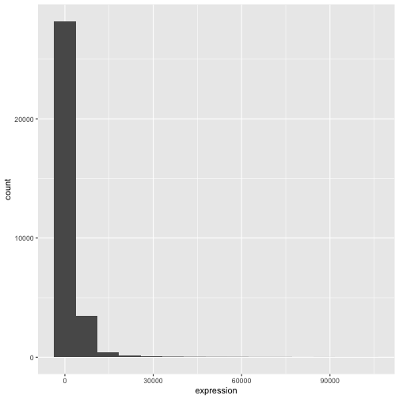
R
# change binwidth
ggplot(rna, aes(x = expression)) +
geom_histogram(binwidth = 2000)

Aquí podemos observar que los datos están sesgados hacia la derecha.
Podemos aplicar una transformación logarítmica en base 2 para obtener
una distribución más simétrica. Tenga en cuenta que aquí añadimos un
pequeño valor constante (+1) para evitar que se devuelvan
valores de -Inf para valores de expresión iguales a 0.
R
rna <- rna |>
mutate(expression_log = log2(expression + 1))
Si ahora trazamos el histograma de las expresiones transformadas logarítmicamente en base 2, la distribución es, en efecto, más cercana a una distribución normal.
R
ggplot(rna, aes(x = expression_log)) + geom_histogram()
SALIDA
`stat_bin()` using `bins = 30`. Pick better value `binwidth`.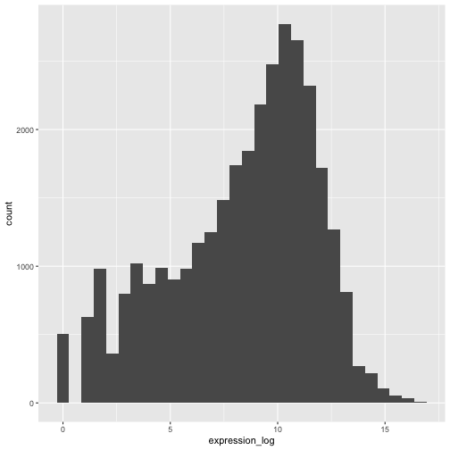
A partir de ahora, trabajaremos con los valores de expresión transformados logarítmicamente.
Desafío
Otra forma de visualizar esta transformación es considerar la escala de las observaciones. Por ejemplo, puede valer la pena cambiar la escala del eje para distribuir mejor las observaciones en el espacio del gráfico. Cambiar la escala de los ejes se hace de manera similar a añadir o modificar otros componentes (es decir, añadiendo comandos de forma incremental). Intente realizar esta modificación:
- Represente la expresión sin transformar en la escala log10; consulte
scale_x_log10(). Compárela con el gráfico anterior. ¿Por qué ahora aparecen mensajes de advertencia?
R
ggplot(data = rna,mapping = aes(x = expression))+
geom_histogram() +
scale_x_log10()
ADVERTENCIA
Warning in scale_x_log10(): log-10 transformation introduced infinite values.SALIDA
`stat_bin()` using `bins = 30`. Pick better value `binwidth`.ADVERTENCIA
Warning: Removed 507 rows containing non-finite outside the scale range
(`stat_bin()`).
Notas
- Cualquier elemento que incluya en la función
ggplot()será visible en cualquier capa geom que añada (es decir, se trata de configuraciones globales del gráfico). Esto incluye el mapeo de los ejes x e y que configure enaes(). - También puede especificar mapeos para un geom determinado de forma
independiente de los mapeos definidos globalmente en la función
ggplot(). - El signo
+utilizado para añadir nuevas capas deberá colocarse al final de la línea que contiene la capa anterior. Si, en cambio, se añade el signo+al principio de la línea que contiene la nueva capa,ggplot2no añadirá la nueva capa y devolverá un mensaje de error.
R
# This is the correct syntax for adding layers
rna_plot +
geom_histogram()
# This will not add the new layer and will return an error message
rna_plot
+ geom_histogram()
Creación iterativa de gráficos
A continuación, dibujaremos un gráfico de dispersión con dos
variables continuas y la función geom_point(). Este gráfico
representará los cambios relativos de expresión en escala log2
comparando el tiempo 8 frente al tiempo 0, y el tiempo 4 frente al
tiempo 0. Para ello, primero necesitamos calcular los promedios de los
valores de expresión transformados logarítmicamente por gen y tiempo, y
luego los cambios relativos en escala logarítmica restando el promedio
de las expresiones logarítmicas entre el tiempo 8 y el tiempo 0, y entre
el tiempo 4 y el tiempo 0. Tenga en cuenta que aquí también incluimos el
biotipo del gen que utilizaremos más adelante para representar los
genes. Guardaremos los cambios relativos de expresión en una nueva tabla
de datos llamada rna_fc..
R
rna_fc <- rna |> select(gene, time,
gene_biotype, expression_log) |>
group_by(gene, time, gene_biotype) |>
summarize(mean_exp = mean(expression_log)) |>
pivot_wider(names_from = time,
values_from = mean_exp) |>
mutate(time_8_vs_0 = `8` - `0`, time_4_vs_0 = `4` - `0`)
SALIDA
`summarise()` has regrouped the output.
ℹ Summaries were computed grouped by gene, time, and gene_biotype.
ℹ Output is grouped by gene and time.
ℹ Use `summarise(.groups = "drop_last")` to silence this message.
ℹ Use `summarise(.by = c(gene, time, gene_biotype))` for per-operation grouping
(`?dplyr::dplyr_by`) instead.A continuación, podemos crear un ggplot con el conjunto de datos
recién creado rna_fc. Crear gráficos con
ggplot2 suele ser un proceso iterativo. Comenzamos
definiendo el conjunto de datos que utilizaremos, disponiendo los ejes y
eligiendo un geom:
R
ggplot(data = rna_fc, mapping = aes(x = time_4_vs_0, y = time_8_vs_0)) +
geom_point()
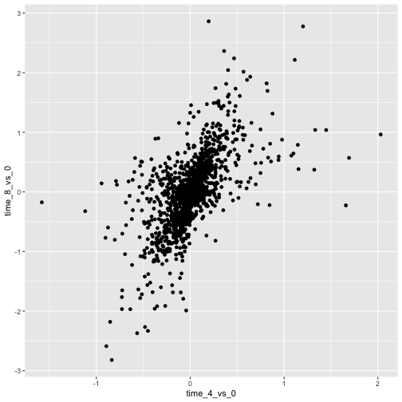
A continuación, comenzamos a modificar este gráfico para extraer más
información de él. Por ejemplo, podemos añadir transparencia
(alpha) para evitar el solapamiento:
R
ggplot(data = rna_fc, mapping = aes(x = time_4_vs_0, y = time_8_vs_0)) +
geom_point(alpha = 0.3)

También podemos añadir colores a todos los puntos:
R
ggplot(data = rna_fc, mapping = aes(x = time_4_vs_0, y = time_8_vs_0)) +
geom_point(alpha = 0.3, color = "blue")
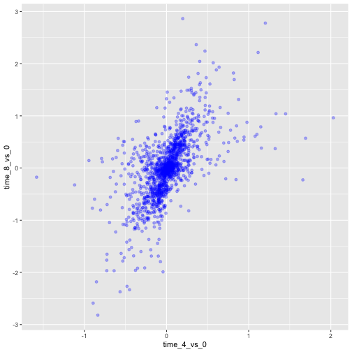
O bien, para colorear cada gen en el gráfico de manera diferente,
podría utilizar un vector como entrada para el argumento
color. ggplot2 proporcionará un color
diferente correspondiente a distintos valores del vector. Aquí tiene un
ejemplo donde se colorea con gene_biotype:
R
ggplot(data = rna_fc, mapping = aes(x = time_4_vs_0, y = time_8_vs_0)) +
geom_point(alpha = 0.3, aes(color = gene_biotype))

También podemos especificar los colores directamente dentro del mapeo
proporcionado en la función ggplot(). Esto será visible en
cualquier capa geom y el mapeo se determinará según la configuración de
los ejes x e y en aes().
R
ggplot(data = rna_fc, mapping = aes(x = time_4_vs_0, y = time_8_vs_0,
color = gene_biotype)) +
geom_point(alpha = 0.3)

Por último, también podríamos añadir una línea diagonal con la
función geom_abline():
R
ggplot(data = rna_fc, mapping = aes(x = time_4_vs_0, y = time_8_vs_0,
color = gene_biotype)) +
geom_point(alpha = 0.3) +
geom_abline(intercept = 0)

Nótese que podemos cambiar la capa geom de geom_point a
geom_jitter y los colores seguirán determinados por
gene_biotype.
R
ggplot(data = rna_fc, mapping = aes(x = time_4_vs_0, y = time_8_vs_0,
color = gene_biotype)) +
geom_jitter(alpha = 0.3) +
geom_abline(intercept = 0)
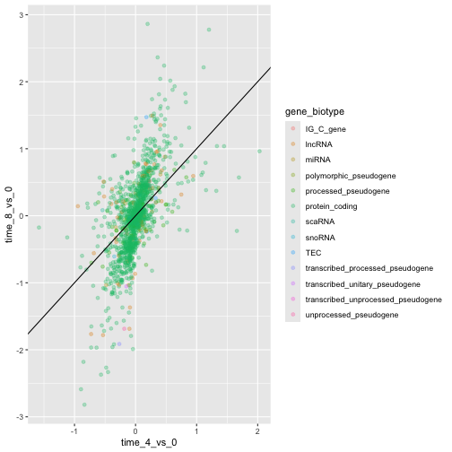
Desafío
Los gráficos de dispersión pueden ser herramientas exploratorias
útiles para conjuntos de datos pequeños. Para conjuntos de datos con un
gran número de observaciones, como el conjunto de datos
rna_fc, la superposición de puntos puede representar una
limitación de los gráficos de dispersión. Una estrategia para manejar
tales escenarios consiste en utilizar el agrupamiento hexagonal de las
observaciones. El espacio del gráfico se tesela en hexágonos. A cada
hexágono se le asigna un color basado en el número de observaciones que
caen dentro de sus límites.
Para utilizar el agrupamiento hexagonal en
ggplot2, primero instale el paquete de Rhexbindesde CRAN y cárguelo.A continuación, utilice la función
geom_hex()para generar la figura de hexbin.¿Cuáles son las fortalezas y debilidades relativas de un gráfico de binaje hexagonal en comparación con un gráfico de dispersión? Examine el gráfico de dispersión anterior y compárelo con el gráfico de binaje hexagonal que creó.
R
install.packages("hexbin")
R
library("hexbin")
ggplot(data = rna_fc, mapping = aes(x = time_4_vs_0, y = time_8_vs_0)) +
geom_hex() +
geom_abline(intercept = 0)
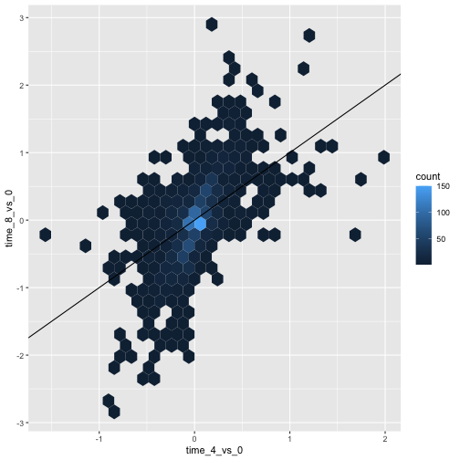
Desafío
Utiliza lo que acabas de aprender para crear un gráfico de dispersión
de expression_log sobre sample a partir del
conjunto de datos rna, con el tiempo mostrado en diferentes
colores. ¿Es esta una buena manera de representar este tipo de
datos?
R
ggplot(data = rna, mapping = aes(y = expression_log, x = sample)) +
geom_point(aes(color = time))

Gráfico de cajas
Podemos utilizar gráficos de cajas para visualizar la distribución de la expresión génica dentro de cada muestra:
R
ggplot(data = rna,
mapping = aes(y = expression_log, x = sample)) +
geom_boxplot()

Al añadir puntos al gráfico de cajas, podemos tener una mejor idea del número de mediciones y de su distribución:
R
ggplot(data = rna,
mapping = aes(y = expression_log, x = sample)) +
geom_jitter(alpha = 0.2, color = "tomato") +
geom_boxplot(alpha = 0)
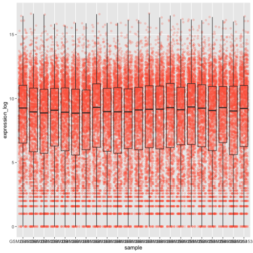
Desafío
Observa cómo la capa del gráfico de cajas está por delante de la capa de jitter. ¿Qué debes cambiar en el código para colocar el gráfico de cajas debajo de los puntos?
Deberíamos cambiar el orden de estos dos geoms:
R
ggplot(data = rna,
mapping = aes(y = expression_log, x = sample)) +
geom_boxplot(alpha = 0) +
geom_jitter(alpha = 0.2, color = "tomato")
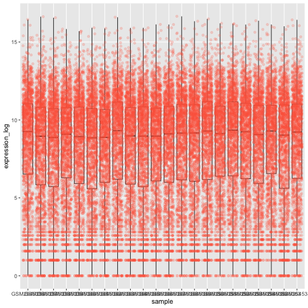
Es posible que notes que los valores del eje x todavía no son correctamente legibles. Cambiemos la orientación de las etiquetas y ajustémoslas vertical y horizontalmente para que no se solapen. Puedes usar un ángulo de 90 grados, o experimentar para encontrar el ángulo adecuado para las etiquetas orientadas diagonalmente:
R
ggplot(data = rna,
mapping = aes(y = expression_log, x = sample)) +
geom_jitter(alpha = 0.2, color = "tomato") +
geom_boxplot(alpha = 0) +
theme(axis.text.x = element_text(angle = 90, hjust = 0.5, vjust = 0.5))
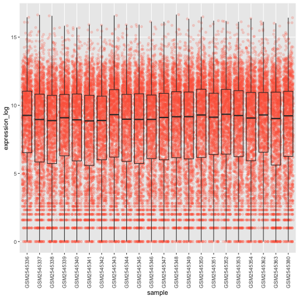
Desafío
Añada color a los puntos de datos de su gráfico de cajas según la
duración de la infección (time).
Pista: Revisa la clase de time. Considera
cambiar la clase de time de entero a factor directamente en
la asignación de ggplot. ¿Por qué esto cambia la forma en que R crea el
gráfico?
R
# time as integer
ggplot(data = rna,
mapping = aes(y = expression_log,
x = sample)) +
geom_jitter(alpha = 0.2, aes(color = time)) +
geom_boxplot(alpha = 0) +
theme(axis.text.x = element_text(angle = 90, hjust = 0.5, vjust = 0.5))
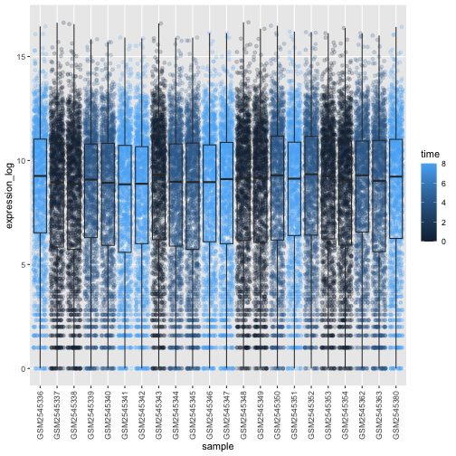
R
# time as factor
ggplot(data = rna,
mapping = aes(y = expression_log,
x = sample)) +
geom_jitter(alpha = 0.2, aes(color = as.factor(time))) +
geom_boxplot(alpha = 0) +
theme(axis.text.x = element_text(angle = 90, hjust = 0.5, vjust = 0.5))
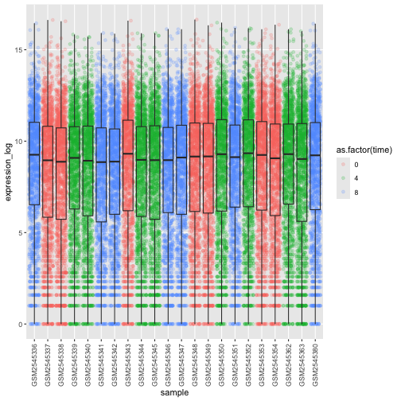
Desafío
Los gráficos de cajas son resúmenes útiles, pero ocultan la forma de la distribución. Por ejemplo, si la distribución es bimodal, no se vería en un gráfico de cajas. Una alternativa al gráfico de cajas es el gráfico de violín, donde se dibuja la forma (de la densidad de los puntos).
- Sustituya el gráfico de cajas por un gráfico de violín; consulte
geom_violin(). Rellene los violines según el tiempo con el argumentofill.
R
ggplot(data = rna,
mapping = aes(y = expression_log, x = sample)) +
geom_violin(aes(fill = as.factor(time))) +
theme(axis.text.x = element_text(angle = 90, hjust = 0.5, vjust = 0.5))
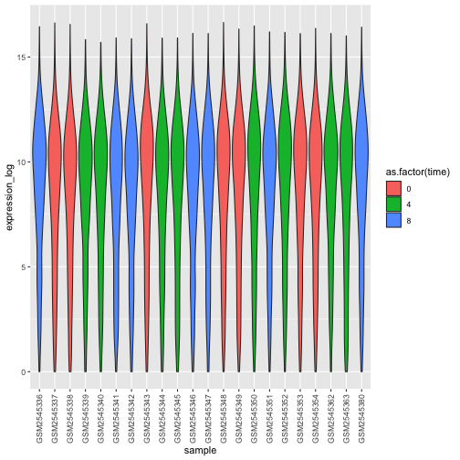
Desafío
- Modifique el gráfico en forma de violín para rellenar los violines
mediante
sex.
R
ggplot(data = rna,
mapping = aes(y = expression_log, x = sample)) +
geom_violin(aes(fill = sex)) +
theme(axis.text.x = element_text(angle = 90, hjust = 0.5, vjust = 0.5))
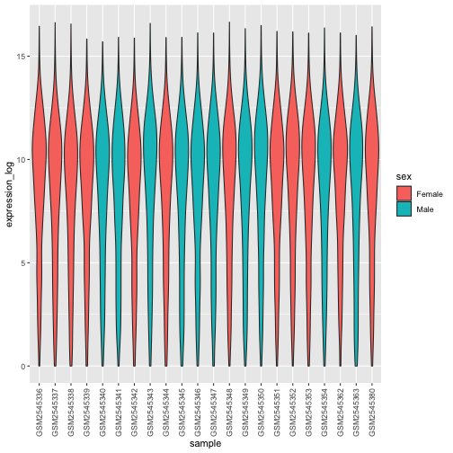
Gráficos de líneas
Calculemos la expresión media por duración de la infección para los
10 genes con los mayores cambios relativos de expresión en escala
logarítmica al comparar el tiempo 8 con el tiempo 0. Primero, debemos
seleccionar los genes y crear un subconjunto de rna llamado
sub_rna que contenga los 10 genes seleccionados; luego,
debemos agrupar los datos y calcular la expresión génica media dentro de
cada grupo:
R
rna_fc <- rna_fc |> arrange(desc(time_8_vs_0))
genes_selected <- rna_fc$gene[1:10]
sub_rna <- rna |>
filter(gene %in% genes_selected)
mean_exp_by_time <- sub_rna |>
group_by(gene,time) |>
summarize(mean_exp = mean(expression_log))
SALIDA
`summarise()` has regrouped the output.
ℹ Summaries were computed grouped by gene and time.
ℹ Output is grouped by gene.
ℹ Use `summarise(.groups = "drop_last")` to silence this message.
ℹ Use `summarise(.by = c(gene, time))` for per-operation grouping
(`?dplyr::dplyr_by`) instead.R
mean_exp_by_time
SALIDA
# A tibble: 30 × 3
# Groups: gene [10]
gene time mean_exp
<chr> <int> <dbl>
1 Acr 0 5.07
2 Acr 4 5.54
3 Acr 8 7.31
4 Aipl1 0 3.70
5 Aipl1 4 3.89
6 Aipl1 8 6.56
7 Bst1 0 3.20
8 Bst1 4 3.77
9 Bst1 8 5.22
10 Chil3 0 4.00
# ℹ 20 more rowsPodemos crear el gráfico de líneas con la duración de la infección en el eje x y la expresión media en el eje y:
R
ggplot(data = mean_exp_by_time, mapping = aes(x = time, y = mean_exp)) +
geom_line()

Lamentablemente, esto no funciona porque representamos los datos de
todos los genes juntos. Necesitamos indicar a ggplot que dibuje una
línea para cada gen modificando la función estética para incluir
group = gene:
R
ggplot(data = mean_exp_by_time,
mapping = aes(x = time, y = mean_exp, group = gene)) +
geom_line()

Podremos distinguir los genes en el gráfico si añadimos colores (el
uso de color también agrupa automáticamente los datos):
R
ggplot(data = mean_exp_by_time,
mapping = aes(x = time, y = mean_exp, color = gene)) +
geom_line()

Faceting
ggplot2 cuenta con una técnica especial llamada
faceting que permite al usuario dividir un gráfico en múltiples
gráficos (subgráficos) basándose en un factor incluido en el conjunto de
datos. Estos diferentes subgráficos heredan las mismas propiedades
(límites de los ejes, marcas, …) para facilitar su comparación directa.
Lo utilizaremos para crear un gráfico de líneas a lo largo del tiempo
para cada gen:
R
ggplot(data = mean_exp_by_time,
mapping = aes(x = time, y = mean_exp)) + geom_line() +
facet_wrap(~ gene)
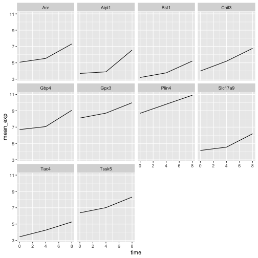
Aquí, tanto el eje x como el y tienen la misma escala en todos los
subgráficos. Puede cambiar este comportamiento predeterminado
modificando scales para permitir una escala libre para el
eje y:
R
ggplot(data = mean_exp_by_time,
mapping = aes(x = time, y = mean_exp)) +
geom_line() +
facet_wrap(~ gene, scales = "free_y")
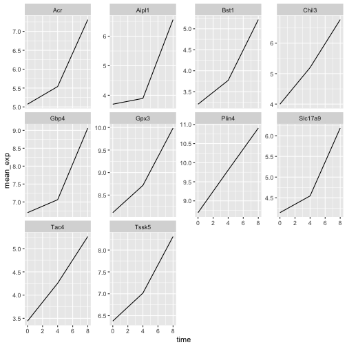
Ahora queremos dividir la línea en cada gráfico según el sexo de los
ratones. Para ello, necesitamos calcular la expresión media en la tabla
de datos agrupada por gene, time y
sex:
R
mean_exp_by_time_sex <- sub_rna |>
group_by(gene, time, sex) |>
summarize(mean_exp = mean(expression_log))
SALIDA
`summarise()` has regrouped the output.
ℹ Summaries were computed grouped by gene, time, and sex.
ℹ Output is grouped by gene and time.
ℹ Use `summarise(.groups = "drop_last")` to silence this message.
ℹ Use `summarise(.by = c(gene, time, sex))` for per-operation grouping
(`?dplyr::dplyr_by`) instead.R
mean_exp_by_time_sex
SALIDA
# A tibble: 60 × 4
# Groups: gene, time [30]
gene time sex mean_exp
<chr> <int> <chr> <dbl>
1 Acr 0 Female 5.13
2 Acr 0 Male 5.00
3 Acr 4 Female 5.93
4 Acr 4 Male 5.15
5 Acr 8 Female 7.27
6 Acr 8 Male 7.36
7 Aipl1 0 Female 3.67
8 Aipl1 0 Male 3.73
9 Aipl1 4 Female 4.07
10 Aipl1 4 Male 3.72
# ℹ 50 more rowsAhora podemos crear el gráfico facetado dividiendo aún más por sexo
utilizando color (dentro de un único gráfico):
R
ggplot(data = mean_exp_by_time_sex,
mapping = aes(x = time, y = mean_exp, color = sex)) +
geom_line() +
facet_wrap(~ gene, scales = "free_y")
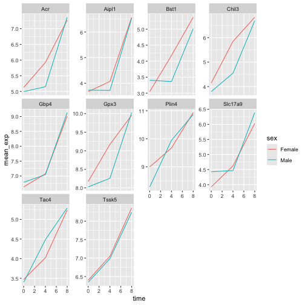
Por lo general, los gráficos con fondo blanco resultan más legibles
al imprimirlos. Podemos establecer el fondo en blanco utilizando la
función theme_bw(). Además, podemos eliminar la
cuadrícula:
R
ggplot(data = mean_exp_by_time_sex,
mapping = aes(x = time, y = mean_exp, color = sex)) +
geom_line() +
facet_wrap(~ gene, scales = "free_y") +
theme_bw() +
theme(panel.grid = element_blank())
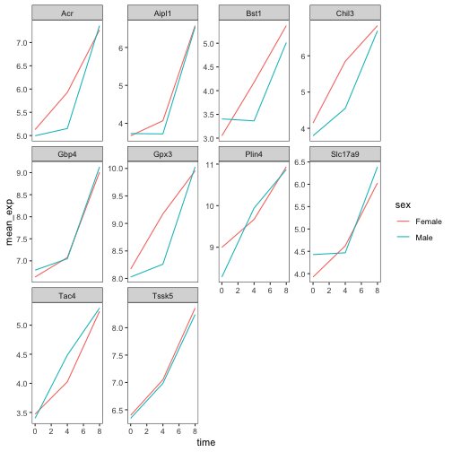
Desafío
Utiliza lo que acabas de aprender para crear un gráfico que represente cómo varía la expresión promedio de cada cromosoma a lo largo de la duración de la infección.
R
mean_exp_by_chromosome <- rna |>
group_by(chromosome_name, time) |>
summarize(mean_exp = mean(expression_log))
SALIDA
`summarise()` has regrouped the output.
ℹ Summaries were computed grouped by chromosome_name and time.
ℹ Output is grouped by chromosome_name.
ℹ Use `summarise(.groups = "drop_last")` to silence this message.
ℹ Use `summarise(.by = c(chromosome_name, time))` for per-operation grouping
(`?dplyr::dplyr_by`) instead.R
ggplot(data = mean_exp_by_chromosome, mapping = aes(x = time,
y = mean_exp)) +
geom_line() +
facet_wrap(~ chromosome_name, scales = "free_y")

La geometría facet_wrap extrae los gráficos en un número
arbitrario de dimensiones para que quepan correctamente en una sola
página. Por otro lado, la geometría facet_grid permite
especificar explícitamente cómo se desea que estén dispuestos los
gráficos mediante la notación de fórmula (rows ~ columns;
un . puede utilizarse como marcador que indique una sola
fila o columna).
Modifiquemos el gráfico anterior para comparar cómo ha cambiado la expresión génica media de los machos y las hembras a lo largo del tiempo:
R
# One column, facet by rows
ggplot(data = mean_exp_by_time_sex,
mapping = aes(x = time, y = mean_exp, color = gene)) +
geom_line() +
facet_grid(sex ~ .)

R
# One row, facet by column
ggplot(data = mean_exp_by_time_sex,
mapping = aes(x = time, y = mean_exp, color = gene)) +
geom_line() +
facet_grid(. ~ sex)
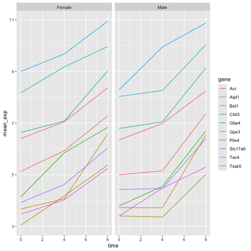
Temas de ggplot2
Además de theme_bw(), que cambia el fondo del gráfico a
blanco, ggplot2 incluye varios otros temas que pueden
resultar útiles para cambiar rápidamente la apariencia de su
visualización. La lista completa de temas está disponible en https://ggplot2.tidyverse.org/reference/ggtheme.html.
theme_minimal() y theme_light() son populares,
y theme_void() puede resultar útil como punto de partida
para crear un nuevo tema diseñado a mano.
El paquete ggthemes
ofrece una amplia variedad de opciones (incluido un tema de Excel 2003).
El sitio web de
extensiones ggplot2 proporciona una lista de paquetes
que amplían las capacidades de ggplot2, incluidos temas
adicionales.
Personalización
Volvamos al gráfico facetado de la expresión media según el tiempo y el gen, coloreado por sexo.
Echa un vistazo a la hoja
de trucos ggplot2 y piensa en formas de mejorar el
gráfico.
Ahora, podemos cambiar los nombres de los ejes por algo más informativo que ‘time’ y ‘mean_exp’, y añadir un título a la figura:
R
ggplot(data = mean_exp_by_time_sex,
mapping = aes(x = time, y = mean_exp, color = sex)) +
geom_line() +
facet_wrap(~ gene, scales = "free_y") +
theme_bw() +
theme(panel.grid = element_blank()) +
labs(title = "Mean gene expression by duration of the infection",
x = "Duration of the infection (in days)",
y = "Mean gene expression")

Los ejes tienen nombres más informativos, pero su legibilidad puede mejorarse aumentando el tamaño de la fuente:
R
ggplot(data = mean_exp_by_time_sex,
mapping = aes(x = time, y = mean_exp, color = sex)) +
geom_line() +
facet_wrap(~ gene, scales = "free_y") +
theme_bw() +
theme(panel.grid = element_blank()) +
labs(title = "Mean gene expression by duration of the infection",
x = "Duration of the infection (in days)",
y = "Mean gene expression") +
theme(text = element_text(size = 16))
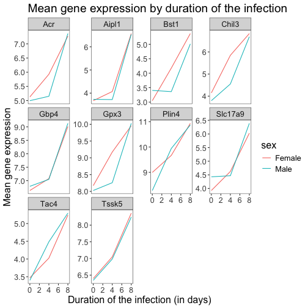
Tenga en cuenta que también es posible cambiar las fuentes de sus
gráficos. Si utiliza Windows, es posible que tenga que instalar el
paquete extrafont.
Podemos personalizar aún más el color del texto de los ejes x e y, el
color de la cuadrícula, etc. También podemos, por ejemplo, mover la
leyenda a la parte superior estableciendo legend.position
en "top".
R
ggplot(data = mean_exp_by_time_sex,
mapping = aes(x = time, y = mean_exp, color = sex)) +
geom_line() +
facet_wrap(~ gene, scales = "free_y") +
theme_bw() +
theme(panel.grid = element_blank()) +
labs(title = "Mean gene expression by duration of the infection",
x = "Duration of the infection (in days)",
y = "Mean gene expression") +
theme(text = element_text(size = 16),
axis.text.x = element_text(colour = "royalblue4", size = 12),
axis.text.y = element_text(colour = "royalblue4", size = 12),
panel.grid = element_line(colour="lightsteelblue1"),
legend.position = "top")
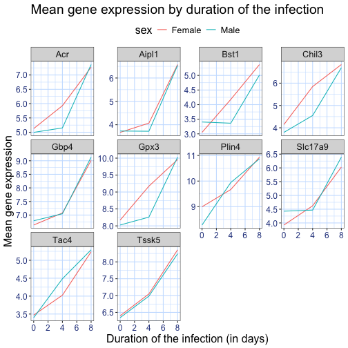
Si te gustan más los cambios que has realizado que el tema predeterminado, puedes guardarlos como un objeto para poder aplicarlos fácilmente a otros gráficos que crees. Aquí tienes un ejemplo con el histograma que creamos anteriormente.
R
blue_theme <- theme(axis.text.x = element_text(colour = "royalblue4",
size = 12),
axis.text.y = element_text(colour = "royalblue4",
size = 12),
text = element_text(size = 16),
panel.grid = element_line(colour="lightsteelblue1"))
ggplot(rna, aes(x = expression_log)) +
geom_histogram(bins = 20) +
blue_theme
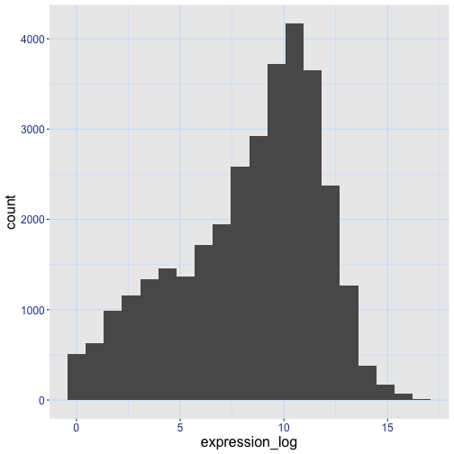
Desafío
Con toda esta información a mano, tómese otros cinco minutos para
mejorar uno de los gráficos generados en este ejercicio o crear su
propio gráfico impecable. Utilice la hoja
de trucos ggplot2 de RStudio para inspirarse. Aquí
tiene algunas ideas:
- Mira si puedes cambiar el grosor de las líneas.
- ¿Puedes encontrar una forma de cambiar el nombre de la leyenda? ¿Y
sus etiquetas? (pista: busca una función de ggplot que empiece por
scale_) - Prueba a utilizar una paleta de colores diferente o a especificar manualmente los colores de las líneas (consulta https://www.cookbook-r.com/Graphs/Colors_(ggplot2)/).
Por ejemplo, basándose en este gráfico:
R
ggplot(data = mean_exp_by_time_sex,
mapping = aes(x = time, y = mean_exp, color = sex)) +
geom_line() +
facet_wrap(~ gene, scales = "free_y") +
theme_bw() +
theme(panel.grid = element_blank())

Podemos personalizarlo de las siguientes maneras:
R
# change the thickness of the lines
ggplot(data = mean_exp_by_time_sex,
mapping = aes(x = time, y = mean_exp, color = sex)) +
geom_line(size=1.5) +
facet_wrap(~ gene, scales = "free_y") +
theme_bw() +
theme(panel.grid = element_blank())
ADVERTENCIA
Warning: Using `size` aesthetic for lines was deprecated in ggplot2 3.4.0.
ℹ Please use `linewidth` instead.
This warning is displayed once per session.
Call `lifecycle::last_lifecycle_warnings()` to see where this warning was
generated.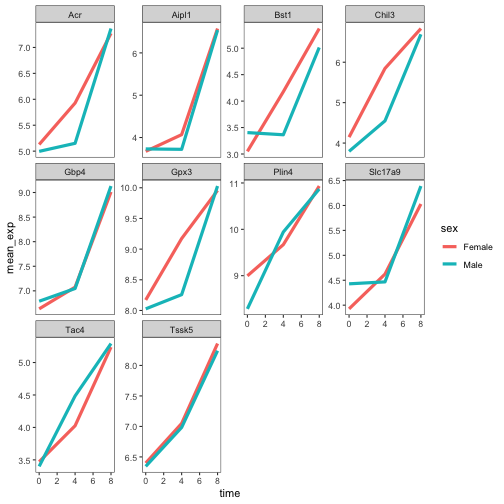
R
# change the name of the legend and the labels
ggplot(data = mean_exp_by_time_sex,
mapping = aes(x = time, y = mean_exp, color = sex)) +
geom_line() +
facet_wrap(~ gene, scales = "free_y") +
theme_bw() +
theme(panel.grid = element_blank()) +
scale_color_discrete(name = "Gender", labels = c("F", "M"))

R
# using a different color palette
ggplot(data = mean_exp_by_time_sex,
mapping = aes(x = time, y = mean_exp, color = sex)) +
geom_line() +
facet_wrap(~ gene, scales = "free_y") +
theme_bw() +
theme(panel.grid = element_blank()) +
scale_color_brewer(name = "Gender", labels = c("F", "M"), palette = "Dark2")

R
# manually specifying the colors
ggplot(data = mean_exp_by_time_sex,
mapping = aes(x = time, y = mean_exp, color = sex)) +
geom_line() +
facet_wrap(~ gene, scales = "free_y") +
theme_bw() +
theme(panel.grid = element_blank()) +
scale_color_manual(name = "Gender", labels = c("F", "M"),
values = c("royalblue", "deeppink"))
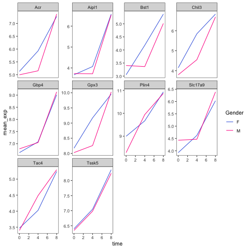
Composición de gráficos
El faceting es una herramienta excelente para dividir un gráfico en múltiples subgráficos, pero a veces es posible que desee crear una sola figura que contenga varios gráficos independientes, es decir, gráficos basados en variables diferentes o incluso en tablas de datos distintas.
Comencemos creando los dos gráficos que queremos disponer uno junto al otro:
El primer gráfico cuenta el número de genes únicos por cromosoma.
Primero debemos reordenar los niveles de chromosome_name y
filtrar los genes únicos por cromosoma. También cambiamos la escala del
eje y a una escala logarítmica en base 10 para mejorar la
legibilidad.
R
rna$chromosome_name <- factor(rna$chromosome_name,
levels = c(1:19,"X","Y"))
count_gene_chromosome <- rna |>
select(chromosome_name, gene) |>
distinct() |> ggplot() +
geom_bar(aes(x = chromosome_name), fill = "seagreen",
position = "dodge", stat = "count") +
labs(y = "log10(n genes)", x = "chromosome") +
scale_y_log10()
count_gene_chromosome

A continuación, también eliminamos la leyenda por completo
estableciendo legend.position en "none".
R
exp_boxplot_sex <- ggplot(rna, aes(y=expression_log, x = as.factor(time),
color=sex)) +
geom_boxplot(alpha = 0) +
labs(y = "Mean gene exp",
x = "time") + theme(legend.position = "none")
exp_boxplot_sex

El paquete patchwork
ofrece un enfoque elegante para combinar figuras utilizando
+ para organizarlas (normalmente una al lado de la otra).
Más concretamente, | las organiza explícitamente una al
lado de la otra y / las apila una sobre otra.
R
install.packages("patchwork")
R
library("patchwork")
count_gene_chromosome + exp_boxplot_sex

R
## or count_gene_chromosome | exp_boxplot_sex
R
count_gene_chromosome / exp_boxplot_sex

Podemos controlar aún más la disposición de la composición final con
plot_layout para crear diseños más complejos:
R
count_gene_chromosome + exp_boxplot_sex + plot_layout(ncol = 1)

R
count_gene_chromosome +
(count_gene_chromosome + exp_boxplot_sex) +
exp_boxplot_sex +
plot_layout(ncol = 1)

El último gráfico también puede crearse utilizando los compositores
| y /:
R
count_gene_chromosome /
(count_gene_chromosome | exp_boxplot_sex) /
exp_boxplot_sex

Obtenga más información sobre patchwork en su página web o en este video.
Otra opción es el paquete gridExtra,
que permite combinar ggplots independientes en una sola figura mediante
grid.arrange():
R
install.packages("gridExtra")
R
library("gridExtra")
grid.arrange(count_gene_chromosome, exp_boxplot_sex, ncol = 2)

Además de los argumentos ncol y nrow,
utilizados para realizar diseños sencillos, existen herramientas para construir
diseños más complejos.
Exportación de gráficos
Tras crear su gráfico, puede guardarlo en un archivo en su formato preferido. La pestaña Exportar en el panel Plot de RStudio guardará sus gráficos a baja resolución, la cual no será aceptada por muchas revistas y no escalará bien para pósteres.
En su lugar, utilice la función ggsave(), que le permite
cambiar fácilmente la dimensión y la resolución de su gráfico ajustando
los argumentos correspondientes (width, height
y dpi).
Asegúrese de tener la carpeta fig_output/ en su
directorio de trabajo.
R
my_plot <- ggplot(data = mean_exp_by_time_sex,
mapping = aes(x = time, y = mean_exp, color = sex)) +
geom_line() +
facet_wrap(~ gene, scales = "free_y") +
labs(title = "Mean gene expression by duration of the infection",
x = "Duration of the infection (in days)",
y = "Mean gene expression") +
guides(color=guide_legend(title="Gender")) +
theme_bw() +
theme(axis.text.x = element_text(colour = "royalblue4", size = 12),
axis.text.y = element_text(colour = "royalblue4", size = 12),
text = element_text(size = 16),
panel.grid = element_line(colour="lightsteelblue1"),
legend.position = "top")
ggsave("fig_output/mean_exp_by_time_sex.png", my_plot, width = 15,
height = 10)
# This also works for grid.arrange() plots
combo_plot <- grid.arrange(count_gene_chromosome, exp_boxplot_sex,
ncol = 2, widths = c(4, 6))
ggsave("fig_output/combo_plot_chromosome_sex.png", combo_plot,
width = 10, dpi = 300)
Nota: Los parámetros width y height también
determinan el tamaño de la fuente en el gráfico guardado.
Otros paquetes para la visualización
ggplot2 es un paquete muy potente que encaja a la
perfección en nuestro pipeline de datos ordenados y
herramientas ordenadas. Existen otros paquetes de visualización
en R que no deben pasarse por alto.
Gráficos básicos
El sistema gráfico predeterminado que incluye R, a menudo llamado
gráficos básicos de R, es sencillo y rápido. Se basa en el
modelo del pintor o del lienzo, donde diferentes resultados se
superponen directamente entre sí (véase la figura siguiente ). Esta es una diferencia
fundamental con ggplot2 (y con lattice,
descrito más adelante), que devuelve objetos dedicados que se renderizan
en pantalla o en un archivo, e incluso pueden actualizarse.
R
par(mfrow = c(1, 3))
plot(1:20, main = "First layer, produced with plot(1:20)")
plot(1:20, main = "A horizontal red line, added with abline(h = 10)")
abline(h = 10, col = "red")
plot(1:20, main = "A rectangle, added with rect(5, 5, 15, 15)")
abline(h = 10, col = "red")
rect(5, 5, 15, 15, lwd = 3)
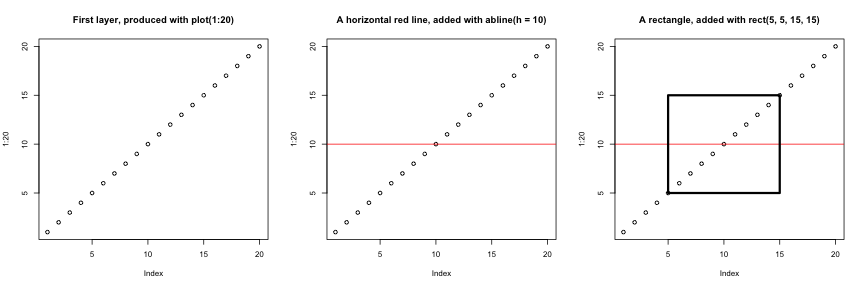
Otra diferencia principal es que las funciones de trazado de los
gráficos básicos intentan hacer lo correcto según el tipo de
entrada; es decir, adaptan su comportamiento en función de la clase de
su entrada. Esto es, nuevamente, muy diferente a lo que tenemos en
ggplot2, que solo acepta tablas de datos como entrada y
requiere que los gráficos se construyan poco a poco.
R
par(mfrow = c(2, 2))
boxplot(rnorm(100),
main = "Boxplot of rnorm(100)")
boxplot(matrix(rnorm(100), ncol = 10),
main = "Boxplot of matrix(rnorm(100), ncol = 10)")
hist(rnorm(100))
hist(matrix(rnorm(100), ncol = 10))
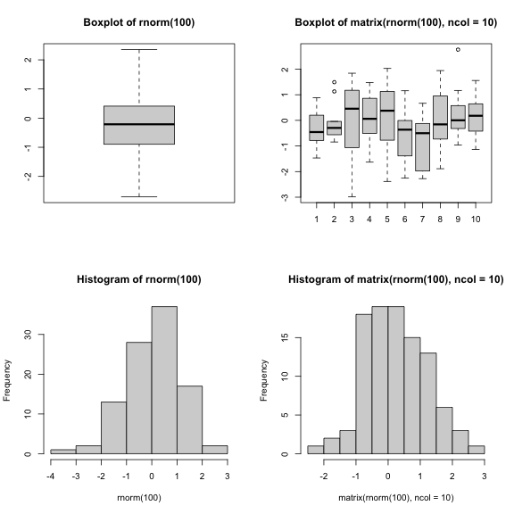
El enfoque estándar de los gráficos básicos puede ser muy eficiente
para figuras sencillas y estándar, que pueden producirse muy rápidamente
con una sola línea de código y una sola función como plot,
o hist, o boxplot, … Sin embargo, los valores
predeterminados no siempre son los más atractivos, y el ajuste de las
figuras, especialmente cuando estas se vuelven más complejas (por
ejemplo, para producir facetas), puede resultar largo y engorroso.
El paquete lattice
El paquete lattice es similar a
ggplot2 en que utiliza tablas de datos como entrada,
devuelve objetos gráficos y admite el faceting. lattice,
sin embargo, no se basa en la gramática de gráficos y tiene una interfaz
más compleja.
Una buena referencia para el paquete lattice es Deepayan (2008).
- Visualización en R
Fuente: Data Visualization Cheat Sheet.↩︎
Content from Próximos pasos
Última actualización: 2026-11-11 | Mejora esta página
Tiempo estimado: 90 minutos
Hoja de ruta
Preguntas
- ¿Qué es un
SummarizedExperiment? - ¿Qué es Bioconductor?
Objetivos
- Presentar el proyecto Bioconductor.
- Presentar el concepto de contenedores de datos.
- Proporcione una visión general del
SummarizedExperiment, ampliamente utilizado en análisis ómicos.
Próximos pasos
Los datos en bioinformática suelen ser complejos. Para abordar esto, los desarrolladores definen contenedores de datos especializados (denominados clases) que coinciden con las propiedades de los datos que necesitan manejar.
Este aspecto es fundamental para el proyecto Bioconductor1, que utiliza la misma infraestructura de datos central en todos sus paquetes. Esto ciertamente contribuyó al éxito de Bioconductor. Se recomienda a los desarrolladores de paquetes de Bioconductor que hagan uso de la infraestructura existente para proporcionar coherencia, interoperabilidad y estabilidad al proyecto en su conjunto.
Para ilustrar dicho contenedor de datos ómicos, presentaremos la
clase SummarizedExperiment.
SummarizedExperiment
La siguiente figura representa la estructura de la clase SummarizedExperiment.

Los objetos de la clase SummarizedExperiment contienen:
Uno o varios ensayos que contienen los datos ómicos cuantitativos (datos de expresión), cada uno almacenado como un objeto similar a una matriz. Las características (genes, transcritos, proteínas, …) se definen a lo largo de las filas y las muestras a lo largo de las columnas.
Una ranura de metadatos de muestras que contiene covariables de las muestras, almacenada como una tabla de datos. Las filas de esta tabla representan las muestras (las filas coinciden exactamente con las columnas de los datos de expresión).
Una ranura de metadatos de características que contiene covariables de características, almacenada como una tabla de datos. Las filas de esta tabla de datos coinciden exactamente con las filas de los datos de expresión.
La naturaleza coordinada de SummarizedExperiment
garantiza que las dimensiones de los distintos componentes coincidan
siempre durante la manipulación de datos (es decir, las columnas de los
datos de expresión con las filas de los metadatos de las muestras, y las
filas de los datos de expresión con las filas de los metadatos de las
características). Por ejemplo, si tuviéramos que excluir una muestra del
ensayo, esta se eliminaría automáticamente de los metadatos de las
muestras en la misma operación.
Los slots de metadatos pueden ampliarse con covariables (columnas) adicionales sin afectar a las otras estructuras.
Creación de un SummarizedExperiment
Para crear un SummarizedExperiment, crearemos los
componentes individuales, es decir, la matriz de conteos y los metadatos
de muestras y genes a partir de archivos csv. Por lo general, así es
como se proporcionan los datos de RNA-Seq (una vez procesados los datos
brutos).
-
Una matriz de expresión: cargamos la matriz de
conteos, especificando que la primera columna contiene los nombres de
las filas/genes, y convertimos el
data.frameen unamatrix. Puede descargarla haciendo clic en este enlace.
R
count_matrix <- read.csv("data/count_matrix.csv",
row.names = 1) |>
as.matrix()
count_matrix[1:5, ]
SALIDA
GSM2545336 GSM2545337 GSM2545338 GSM2545339 GSM2545340 GSM2545341
Asl 1170 361 400 586 626 988
Apod 36194 10347 9173 10620 13021 29594
Cyp2d22 4060 1616 1603 1901 2171 3349
Klk6 287 629 641 578 448 195
Fcrls 85 233 244 237 180 38
GSM2545342 GSM2545343 GSM2545344 GSM2545345 GSM2545346 GSM2545347
Asl 836 535 586 597 938 1035
Apod 24959 13668 13230 15868 27769 34301
Cyp2d22 3122 2008 2254 2277 2985 3452
Klk6 186 1101 537 567 327 233
Fcrls 68 375 199 177 89 67
GSM2545348 GSM2545349 GSM2545350 GSM2545351 GSM2545352 GSM2545353
Asl 494 481 666 937 803 541
Apod 11258 11812 15816 29242 20415 13682
Cyp2d22 1883 2014 2417 3678 2920 2216
Klk6 742 881 828 250 798 710
Fcrls 300 233 231 81 303 285
GSM2545354 GSM2545362 GSM2545363 GSM2545380
Asl 473 748 576 1192
Apod 11088 15916 11166 38148
Cyp2d22 1821 2842 2011 4019
Klk6 894 501 598 259
Fcrls 248 179 184 68R
dim(count_matrix)
SALIDA
[1] 1474 22- Una tabla que describe las muestras, disponible en este enlace.
R
sample_metadata <- read.csv("data/sample_metadata.csv")
sample_metadata
SALIDA
sample organism age sex infection strain time tissue mouse
1 GSM2545336 Mus musculus 8 Female InfluenzaA C57BL/6 8 Cerebellum 14
2 GSM2545337 Mus musculus 8 Female NonInfected C57BL/6 0 Cerebellum 9
3 GSM2545338 Mus musculus 8 Female NonInfected C57BL/6 0 Cerebellum 10
4 GSM2545339 Mus musculus 8 Female InfluenzaA C57BL/6 4 Cerebellum 15
5 GSM2545340 Mus musculus 8 Male InfluenzaA C57BL/6 4 Cerebellum 18
6 GSM2545341 Mus musculus 8 Male InfluenzaA C57BL/6 8 Cerebellum 6
7 GSM2545342 Mus musculus 8 Female InfluenzaA C57BL/6 8 Cerebellum 5
8 GSM2545343 Mus musculus 8 Male NonInfected C57BL/6 0 Cerebellum 11
9 GSM2545344 Mus musculus 8 Female InfluenzaA C57BL/6 4 Cerebellum 22
10 GSM2545345 Mus musculus 8 Male InfluenzaA C57BL/6 4 Cerebellum 13
11 GSM2545346 Mus musculus 8 Male InfluenzaA C57BL/6 8 Cerebellum 23
12 GSM2545347 Mus musculus 8 Male InfluenzaA C57BL/6 8 Cerebellum 24
13 GSM2545348 Mus musculus 8 Female NonInfected C57BL/6 0 Cerebellum 8
14 GSM2545349 Mus musculus 8 Male NonInfected C57BL/6 0 Cerebellum 7
15 GSM2545350 Mus musculus 8 Male InfluenzaA C57BL/6 4 Cerebellum 1
16 GSM2545351 Mus musculus 8 Female InfluenzaA C57BL/6 8 Cerebellum 16
17 GSM2545352 Mus musculus 8 Female InfluenzaA C57BL/6 4 Cerebellum 21
18 GSM2545353 Mus musculus 8 Female NonInfected C57BL/6 0 Cerebellum 4
19 GSM2545354 Mus musculus 8 Male NonInfected C57BL/6 0 Cerebellum 2
20 GSM2545362 Mus musculus 8 Female InfluenzaA C57BL/6 4 Cerebellum 20
21 GSM2545363 Mus musculus 8 Male InfluenzaA C57BL/6 4 Cerebellum 12
22 GSM2545380 Mus musculus 8 Female InfluenzaA C57BL/6 8 Cerebellum 19R
dim(sample_metadata)
SALIDA
[1] 22 9- Una tabla que describe los genes, disponible en este enlace.
R
gene_metadata <- read.csv("data/gene_metadata.csv")
gene_metadata[1:10, 1:4]
SALIDA
gene ENTREZID
1 Asl 109900
2 Apod 11815
3 Cyp2d22 56448
4 Klk6 19144
5 Fcrls 80891
6 Slc2a4 20528
7 Exd2 97827
8 Gjc2 118454
9 Plp1 18823
10 Gnb4 14696
product
1 argininosuccinate lyase, transcript variant X1
2 apolipoprotein D, transcript variant 3
3 cytochrome P450, family 2, subfamily d, polypeptide 22, transcript variant 2
4 kallikrein related-peptidase 6, transcript variant 2
5 Fc receptor-like S, scavenger receptor, transcript variant X1
6 solute carrier family 2 (facilitated glucose transporter), member 4
7 exonuclease 3'-5' domain containing 2
8 gap junction protein, gamma 2, transcript variant 1
9 proteolipid protein (myelin) 1, transcript variant 1
10 guanine nucleotide binding protein (G protein), beta 4, transcript variant X2
ensembl_gene_id
1 ENSMUSG00000025533
2 ENSMUSG00000022548
3 ENSMUSG00000061740
4 ENSMUSG00000050063
5 ENSMUSG00000015852
6 ENSMUSG00000018566
7 ENSMUSG00000032705
8 ENSMUSG00000043448
9 ENSMUSG00000031425
10 ENSMUSG00000027669R
dim(gene_metadata)
SALIDA
[1] 1474 9Crearemos un SummarizedExperiment a partir de estas
tablas:
La matriz de conteos que se utilizará como el
assayLa tabla que describe las muestras se utilizará como la ranura metadatos de la muestra
La tabla que describe los genes se utilizará como la ranura de metadatos de características
Para ello, podemos unir las diferentes partes utilizando el
constructor SummarizedExperiment:
R
## BiocManager::install("SummarizedExperiment")
library("SummarizedExperiment")
Primero, nos aseguramos de que las muestras estén en el mismo orden en la matriz de conteos y en la anotación de muestras, y lo mismo ocurra con los genes en la matriz de conteos y en la anotación de genes.
R
stopifnot(rownames(count_matrix) == gene_metadata$gene)
stopifnot(colnames(count_matrix) == sample_metadata$sample)
R
se <- SummarizedExperiment(assays = list(counts = count_matrix),
colData = sample_metadata,
rowData = gene_metadata)
se
SALIDA
class: SummarizedExperiment
dim: 1474 22
metadata(0):
assays(1): counts
rownames(1474): Asl Apod ... Lmx1a Pbx1
rowData names(9): gene ENTREZID ... phenotype_description
hsapiens_homolog_associated_gene_name
colnames(22): GSM2545336 GSM2545337 ... GSM2545363 GSM2545380
colData names(9): sample organism ... tissue mouseGuardar datos
Exportar datos a una hoja de cálculo, como hicimos en un episodio
anterior, presenta varias limitaciones, tales como las descritas en el
primer capítulo (posibles inconsistencias con , y
. como separadores decimales y la falta de definiciones de
tipos de variables). Además, exportar datos a una hoja de cálculo solo
es relevante para datos rectangulares, como las tablas de datos y las
matrices.
Una forma más general de guardar datos, específica de R y que
garantiza que funcione en cualquier sistema operativo, es utilizar la
función saveRDS. Guardar objetos de este modo generará una
representación binaria en el disco (utilizando aquí la extensión de
archivo rds), que puede cargarse de nuevo en R mediante la
función readRDS.
R
saveRDS(se, file = "data_output/se.rds")
rm(se)
se <- readRDS("data_output/se.rds")
head(se)
Para concluir, cuando se trata de guardar datos desde R que serán
cargados nuevamente en R, el método preferido es guardar y cargar con
saveRDS y readRDS. Si los datos en formato
tabular deben compartirse con alguien que no utilice R, exportarlos a
una hoja de cálculo basada en texto es una buena alternativa.
Utilizando esta estructura de datos, podemos acceder a la matriz de
expresión con la función assay:
R
head(assay(se))
SALIDA
GSM2545336 GSM2545337 GSM2545338 GSM2545339 GSM2545340 GSM2545341
Asl 1170 361 400 586 626 988
Apod 36194 10347 9173 10620 13021 29594
Cyp2d22 4060 1616 1603 1901 2171 3349
Klk6 287 629 641 578 448 195
Fcrls 85 233 244 237 180 38
Slc2a4 782 231 248 265 313 786
GSM2545342 GSM2545343 GSM2545344 GSM2545345 GSM2545346 GSM2545347
Asl 836 535 586 597 938 1035
Apod 24959 13668 13230 15868 27769 34301
Cyp2d22 3122 2008 2254 2277 2985 3452
Klk6 186 1101 537 567 327 233
Fcrls 68 375 199 177 89 67
Slc2a4 528 249 266 357 654 693
GSM2545348 GSM2545349 GSM2545350 GSM2545351 GSM2545352 GSM2545353
Asl 494 481 666 937 803 541
Apod 11258 11812 15816 29242 20415 13682
Cyp2d22 1883 2014 2417 3678 2920 2216
Klk6 742 881 828 250 798 710
Fcrls 300 233 231 81 303 285
Slc2a4 271 304 349 715 513 320
GSM2545354 GSM2545362 GSM2545363 GSM2545380
Asl 473 748 576 1192
Apod 11088 15916 11166 38148
Cyp2d22 1821 2842 2011 4019
Klk6 894 501 598 259
Fcrls 248 179 184 68
Slc2a4 248 350 317 796R
dim(assay(se))
SALIDA
[1] 1474 22Podemos acceder a los metadatos de la muestra utilizando la función
colData:
R
colData(se)
SALIDA
DataFrame with 22 rows and 9 columns
sample organism age sex infection
<character> <character> <integer> <character> <character>
GSM2545336 GSM2545336 Mus musculus 8 Female InfluenzaA
GSM2545337 GSM2545337 Mus musculus 8 Female NonInfected
GSM2545338 GSM2545338 Mus musculus 8 Female NonInfected
GSM2545339 GSM2545339 Mus musculus 8 Female InfluenzaA
GSM2545340 GSM2545340 Mus musculus 8 Male InfluenzaA
... ... ... ... ... ...
GSM2545353 GSM2545353 Mus musculus 8 Female NonInfected
GSM2545354 GSM2545354 Mus musculus 8 Male NonInfected
GSM2545362 GSM2545362 Mus musculus 8 Female InfluenzaA
GSM2545363 GSM2545363 Mus musculus 8 Male InfluenzaA
GSM2545380 GSM2545380 Mus musculus 8 Female InfluenzaA
strain time tissue mouse
<character> <integer> <character> <integer>
GSM2545336 C57BL/6 8 Cerebellum 14
GSM2545337 C57BL/6 0 Cerebellum 9
GSM2545338 C57BL/6 0 Cerebellum 10
GSM2545339 C57BL/6 4 Cerebellum 15
GSM2545340 C57BL/6 4 Cerebellum 18
... ... ... ... ...
GSM2545353 C57BL/6 0 Cerebellum 4
GSM2545354 C57BL/6 0 Cerebellum 2
GSM2545362 C57BL/6 4 Cerebellum 20
GSM2545363 C57BL/6 4 Cerebellum 12
GSM2545380 C57BL/6 8 Cerebellum 19R
dim(colData(se))
SALIDA
[1] 22 9También podemos acceder a los metadatos de las características
utilizando la función rowData:
R
head(rowData(se))
SALIDA
DataFrame with 6 rows and 9 columns
gene ENTREZID product ensembl_gene_id
<character> <integer> <character> <character>
Asl Asl 109900 argininosuccinate ly.. ENSMUSG00000025533
Apod Apod 11815 apolipoprotein D, tr.. ENSMUSG00000022548
Cyp2d22 Cyp2d22 56448 cytochrome P450, fam.. ENSMUSG00000061740
Klk6 Klk6 19144 kallikrein related-p.. ENSMUSG00000050063
Fcrls Fcrls 80891 Fc receptor-like S, .. ENSMUSG00000015852
Slc2a4 Slc2a4 20528 solute carrier famil.. ENSMUSG00000018566
external_synonym chromosome_name gene_biotype phenotype_description
<character> <character> <character> <character>
Asl 2510006M18Rik 5 protein_coding abnormal circulating..
Apod NA 16 protein_coding abnormal lipid homeo..
Cyp2d22 2D22 15 protein_coding abnormal skin morpho..
Klk6 Bssp 7 protein_coding abnormal cytokine le..
Fcrls 2810439C17Rik 3 protein_coding decreased CD8-positi..
Slc2a4 Glut-4 11 protein_coding abnormal circulating..
hsapiens_homolog_associated_gene_name
<character>
Asl ASL
Apod APOD
Cyp2d22 CYP2D6
Klk6 KLK6
Fcrls FCRL2
Slc2a4 SLC2A4R
dim(rowData(se))
SALIDA
[1] 1474 9Selección de subconjuntos de un SummarizedExperiment
SummarizedExperiment puede utilizarse para obtener subconjuntos al igual que con las tablas de datos, mediante valores numéricos, cadenas de caracteres o valores lógicos.
A continuación, creamos una nueva instancia de la clase SummarizedExperiment que contiene únicamente las 5 primeras características de las 3 primeras muestras.
R
se1 <- se[1:5, 1:3]
se1
SALIDA
class: SummarizedExperiment
dim: 5 3
metadata(0):
assays(1): counts
rownames(5): Asl Apod Cyp2d22 Klk6 Fcrls
rowData names(9): gene ENTREZID ... phenotype_description
hsapiens_homolog_associated_gene_name
colnames(3): GSM2545336 GSM2545337 GSM2545338
colData names(9): sample organism ... tissue mouseR
colData(se1)
SALIDA
DataFrame with 3 rows and 9 columns
sample organism age sex infection
<character> <character> <integer> <character> <character>
GSM2545336 GSM2545336 Mus musculus 8 Female InfluenzaA
GSM2545337 GSM2545337 Mus musculus 8 Female NonInfected
GSM2545338 GSM2545338 Mus musculus 8 Female NonInfected
strain time tissue mouse
<character> <integer> <character> <integer>
GSM2545336 C57BL/6 8 Cerebellum 14
GSM2545337 C57BL/6 0 Cerebellum 9
GSM2545338 C57BL/6 0 Cerebellum 10R
rowData(se1)
SALIDA
DataFrame with 5 rows and 9 columns
gene ENTREZID product ensembl_gene_id
<character> <integer> <character> <character>
Asl Asl 109900 argininosuccinate ly.. ENSMUSG00000025533
Apod Apod 11815 apolipoprotein D, tr.. ENSMUSG00000022548
Cyp2d22 Cyp2d22 56448 cytochrome P450, fam.. ENSMUSG00000061740
Klk6 Klk6 19144 kallikrein related-p.. ENSMUSG00000050063
Fcrls Fcrls 80891 Fc receptor-like S, .. ENSMUSG00000015852
external_synonym chromosome_name gene_biotype phenotype_description
<character> <character> <character> <character>
Asl 2510006M18Rik 5 protein_coding abnormal circulating..
Apod NA 16 protein_coding abnormal lipid homeo..
Cyp2d22 2D22 15 protein_coding abnormal skin morpho..
Klk6 Bssp 7 protein_coding abnormal cytokine le..
Fcrls 2810439C17Rik 3 protein_coding decreased CD8-positi..
hsapiens_homolog_associated_gene_name
<character>
Asl ASL
Apod APOD
Cyp2d22 CYP2D6
Klk6 KLK6
Fcrls FCRL2También podemos utilizar la función colData() para
filtrar por algún elemento de los metadatos de las muestras o la
rowData() para filtrar por algún elemento de los metadatos
de las características. Por ejemplo, aquí solo conservamos los miRNAs y
las muestras no infectadas:
R
se1 <- se[rowData(se)$gene_biotype == "miRNA",
colData(se)$infection == "NonInfected"]
se1
SALIDA
class: SummarizedExperiment
dim: 7 7
metadata(0):
assays(1): counts
rownames(7): Mir1901 Mir378a ... Mir128-1 Mir7682
rowData names(9): gene ENTREZID ... phenotype_description
hsapiens_homolog_associated_gene_name
colnames(7): GSM2545337 GSM2545338 ... GSM2545353 GSM2545354
colData names(9): sample organism ... tissue mouseR
assay(se1)
SALIDA
GSM2545337 GSM2545338 GSM2545343 GSM2545348 GSM2545349 GSM2545353
Mir1901 45 44 74 55 68 33
Mir378a 11 7 9 4 12 4
Mir133b 4 6 5 4 6 7
Mir30c-2 10 6 16 12 8 17
Mir149 1 2 0 0 0 0
Mir128-1 4 1 2 2 1 2
Mir7682 2 0 4 1 3 5
GSM2545354
Mir1901 60
Mir378a 8
Mir133b 3
Mir30c-2 15
Mir149 2
Mir128-1 1
Mir7682 5R
colData(se1)
SALIDA
DataFrame with 7 rows and 9 columns
sample organism age sex infection
<character> <character> <integer> <character> <character>
GSM2545337 GSM2545337 Mus musculus 8 Female NonInfected
GSM2545338 GSM2545338 Mus musculus 8 Female NonInfected
GSM2545343 GSM2545343 Mus musculus 8 Male NonInfected
GSM2545348 GSM2545348 Mus musculus 8 Female NonInfected
GSM2545349 GSM2545349 Mus musculus 8 Male NonInfected
GSM2545353 GSM2545353 Mus musculus 8 Female NonInfected
GSM2545354 GSM2545354 Mus musculus 8 Male NonInfected
strain time tissue mouse
<character> <integer> <character> <integer>
GSM2545337 C57BL/6 0 Cerebellum 9
GSM2545338 C57BL/6 0 Cerebellum 10
GSM2545343 C57BL/6 0 Cerebellum 11
GSM2545348 C57BL/6 0 Cerebellum 8
GSM2545349 C57BL/6 0 Cerebellum 7
GSM2545353 C57BL/6 0 Cerebellum 4
GSM2545354 C57BL/6 0 Cerebellum 2R
rowData(se1)
SALIDA
DataFrame with 7 rows and 9 columns
gene ENTREZID product ensembl_gene_id
<character> <integer> <character> <character>
Mir1901 Mir1901 100316686 microRNA 1901 ENSMUSG00000084565
Mir378a Mir378a 723889 microRNA 378a ENSMUSG00000105200
Mir133b Mir133b 723817 microRNA 133b ENSMUSG00000065480
Mir30c-2 Mir30c-2 723964 microRNA 30c-2 ENSMUSG00000065567
Mir149 Mir149 387167 microRNA 149 ENSMUSG00000065470
Mir128-1 Mir128-1 387147 microRNA 128-1 ENSMUSG00000065520
Mir7682 Mir7682 102466847 microRNA 7682 ENSMUSG00000106406
external_synonym chromosome_name gene_biotype phenotype_description
<character> <character> <character> <character>
Mir1901 Mirn1901 18 miRNA NA
Mir378a Mirn378 18 miRNA abnormal mitochondri..
Mir133b mir 133b 1 miRNA no abnormal phenotyp..
Mir30c-2 mir 30c-2 1 miRNA NA
Mir149 Mirn149 1 miRNA increased circulatin..
Mir128-1 Mirn128 1 miRNA no abnormal phenotyp..
Mir7682 mmu-mir-7682 1 miRNA NA
hsapiens_homolog_associated_gene_name
<character>
Mir1901 NA
Mir378a MIR378A
Mir133b MIR133B
Mir30c-2 MIR30C2
Mir149 NA
Mir128-1 MIR128-1
Mir7682 NADesafío
Extraiga los niveles de expresión génica de los tres primeros genes en las muestras al tiempo 0 y al tiempo 8.
R
assay(se)[1:3, colData(se)$time != 4]
SALIDA
GSM2545336 GSM2545337 GSM2545338 GSM2545341 GSM2545342 GSM2545343
Asl 1170 361 400 988 836 535
Apod 36194 10347 9173 29594 24959 13668
Cyp2d22 4060 1616 1603 3349 3122 2008
GSM2545346 GSM2545347 GSM2545348 GSM2545349 GSM2545351 GSM2545353
Asl 938 1035 494 481 937 541
Apod 27769 34301 11258 11812 29242 13682
Cyp2d22 2985 3452 1883 2014 3678 2216
GSM2545354 GSM2545380
Asl 473 1192
Apod 11088 38148
Cyp2d22 1821 4019R
# Equivalent to
assay(se)[1:3, colData(se)$time == 0 | colData(se)$time == 8]
SALIDA
GSM2545336 GSM2545337 GSM2545338 GSM2545341 GSM2545342 GSM2545343
Asl 1170 361 400 988 836 535
Apod 36194 10347 9173 29594 24959 13668
Cyp2d22 4060 1616 1603 3349 3122 2008
GSM2545346 GSM2545347 GSM2545348 GSM2545349 GSM2545351 GSM2545353
Asl 938 1035 494 481 937 541
Apod 27769 34301 11258 11812 29242 13682
Cyp2d22 2985 3452 1883 2014 3678 2216
GSM2545354 GSM2545380
Asl 473 1192
Apod 11088 38148
Cyp2d22 1821 4019Desafío
Verifique que obtenga los mismos valores utilizando la tabla
rna en formato largo.
R
rna |>
filter(gene %in% c("Asl", "Apod", "Cyd2d22")) |>
filter(time != 4) |>
select(expression)
SALIDA
# A tibble: 28 × 1
expression
<dbl>
1 1170
2 36194
3 361
4 10347
5 400
6 9173
7 988
8 29594
9 836
10 24959
# ℹ 18 more rowsLa tabla en formato largo y el SummarizedExperiment
contienen la misma información, pero están simplemente estructurados de
manera diferente. Cada enfoque tiene sus propias ventajas: el primero es
adecuado para los paquetes tidyverse, mientras que el
segundo es la estructura preferida para muchos pasos de bioinformática y
procesamiento estadístico. Por ejemplo, un análisis típico de RNA-Seq
utilizando el paquete DESeq2.
Añadir variables a los metadatos
También podemos añadir información a los metadatos. Supongamos que quieres añadir el centro donde se recolectaron las muestras…
R
colData(se)$center <- rep("University of Illinois", nrow(colData(se)))
colData(se)
SALIDA
DataFrame with 22 rows and 10 columns
sample organism age sex infection
<character> <character> <integer> <character> <character>
GSM2545336 GSM2545336 Mus musculus 8 Female InfluenzaA
GSM2545337 GSM2545337 Mus musculus 8 Female NonInfected
GSM2545338 GSM2545338 Mus musculus 8 Female NonInfected
GSM2545339 GSM2545339 Mus musculus 8 Female InfluenzaA
GSM2545340 GSM2545340 Mus musculus 8 Male InfluenzaA
... ... ... ... ... ...
GSM2545353 GSM2545353 Mus musculus 8 Female NonInfected
GSM2545354 GSM2545354 Mus musculus 8 Male NonInfected
GSM2545362 GSM2545362 Mus musculus 8 Female InfluenzaA
GSM2545363 GSM2545363 Mus musculus 8 Male InfluenzaA
GSM2545380 GSM2545380 Mus musculus 8 Female InfluenzaA
strain time tissue mouse center
<character> <integer> <character> <integer> <character>
GSM2545336 C57BL/6 8 Cerebellum 14 University of Illinois
GSM2545337 C57BL/6 0 Cerebellum 9 University of Illinois
GSM2545338 C57BL/6 0 Cerebellum 10 University of Illinois
GSM2545339 C57BL/6 4 Cerebellum 15 University of Illinois
GSM2545340 C57BL/6 4 Cerebellum 18 University of Illinois
... ... ... ... ... ...
GSM2545353 C57BL/6 0 Cerebellum 4 University of Illinois
GSM2545354 C57BL/6 0 Cerebellum 2 University of Illinois
GSM2545362 C57BL/6 4 Cerebellum 20 University of Illinois
GSM2545363 C57BL/6 4 Cerebellum 12 University of Illinois
GSM2545380 C57BL/6 8 Cerebellum 19 University of Illinois¡Esto ilustra que los slots de los metadatos pueden crecer indefinidamente sin afectar a las otras estructuras!
tidySummarizedExperiment
Quizás se pregunte si podemos usar comandos de tidyverse para
interactuar con los objetos SummarizedExperiment. La
respuesta es sí, podemos hacerlo con el paquete
tidySummarizedExperiment.
Recuerde cómo es nuestro objeto SummarizedExperiment:
R
se
SALIDA
class: SummarizedExperiment
dim: 1474 22
metadata(0):
assays(1): counts
rownames(1474): Asl Apod ... Lmx1a Pbx1
rowData names(9): gene ENTREZID ... phenotype_description
hsapiens_homolog_associated_gene_name
colnames(22): GSM2545336 GSM2545337 ... GSM2545363 GSM2545380
colData names(10): sample organism ... mouse centerCarga tidySummarizedExperiment y luego mira de nuevo el
objeto se.
R
## BiocManager::install("tidySummarizedExperiment")
library("tidySummarizedExperiment")
se
SALIDA
class: SummarizedExperiment
dim: 1474 22
metadata(0):
assays(1): counts
rownames(1474): Asl Apod ... Lmx1a Pbx1
rowData names(9): gene ENTREZID ... phenotype_description
hsapiens_homolog_associated_gene_name
colnames(22): GSM2545336 GSM2545337 ... GSM2545363 GSM2545380
colData names(10): sample organism ... mouse centerSigue siendo un objeto SummarizedExperiment, por lo que
mantiene la estructura eficiente, pero ahora podemos verlo como un
tibble. Observa que la primera línea de la salida indica esto: es una
abstracción SummarizedExperiment-tibble.
También podemos ver en la segunda línea de la salida el número de
transcritos y muestras.
Ahora podemos utilizar comandos de tidyverse para interactuar con el
objeto SummarizedExperiment.
Podemos usar filter para filtrar filas según una
condición, por ejemplo, para ver todas las filas de una muestra.
R
se |> filter(sample == "GSM2545336")
SALIDA
class: SummarizedExperiment
dim: 1474 1
metadata(1): latest_filter_scope_report
assays(1): counts
rownames(1474): Asl Apod ... Lmx1a Pbx1
rowData names(9): gene ENTREZID ... phenotype_description
hsapiens_homolog_associated_gene_name
colnames(1): GSM2545336
colData names(10): sample organism ... mouse centerR
se |> filter(sex == "Female")
SALIDA
class: SummarizedExperiment
dim: 1474 12
metadata(1): latest_filter_scope_report
assays(1): counts
rownames(1474): Asl Apod ... Lmx1a Pbx1
rowData names(9): gene ENTREZID ... phenotype_description
hsapiens_homolog_associated_gene_name
colnames(12): GSM2545336 GSM2545337 ... GSM2545362 GSM2545380
colData names(10): sample organism ... mouse centerPodemos usar select para especificar las columnas que
queremos ver.
R
se |> select(sample, sex)
ADVERTENCIA
Warning: `when()` was deprecated in purrr 1.0.0.
ℹ Please use `if` instead.
ℹ The deprecated feature was likely used in the tidySummarizedExperiment
package.
Please report the issue at
<https://github.com/stemangiola/tidySummarizedExperiment/issues>.
This warning is displayed once per session.
Call `lifecycle::last_lifecycle_warnings()` to see where this warning was
generated.SALIDA
tidySummarizedExperiment says: Key columns are missing. A data frame is returned for independent data analysis.SALIDA
# A tibble: 32,428 × 2
sample sex
<chr> <chr>
1 GSM2545336 Female
2 GSM2545336 Female
3 GSM2545336 Female
4 GSM2545336 Female
5 GSM2545336 Female
6 GSM2545336 Female
7 GSM2545336 Female
8 GSM2545336 Female
9 GSM2545336 Female
10 GSM2545336 Female
# ℹ 32,418 more rowsPodemos usar mutate para añadir información de
metadatos.
R
se |> mutate(center = "Heidelberg University")
SALIDA
class: SummarizedExperiment
dim: 1474 22
metadata(1): latest_mutate_scope_report
assays(1): counts
rownames(1474): Asl Apod ... Lmx1a Pbx1
rowData names(9): gene ENTREZID ... phenotype_description
hsapiens_homolog_associated_gene_name
colnames(22): GSM2545336 GSM2545337 ... GSM2545363 GSM2545380
colData names(10): sample organism ... mouse centerTambién podemos combinar comandos con el pipe de tidyverse
|>. Por ejemplo, podríamos combinar
group_by y summarise para obtener los
recuentos totales de cada muestra.
R
se |>
group_by(.sample) |>
summarise(total_counts=sum(counts))
SALIDA
tidySummarizedExperiment says: A data frame is returned for independent data analysis.SALIDA
# A tibble: 22 × 2
.sample total_counts
<chr> <int>
1 GSM2545336 3039671
2 GSM2545337 2602360
3 GSM2545338 2458618
4 GSM2545339 2500082
5 GSM2545340 2479024
6 GSM2545341 2413723
7 GSM2545342 2349728
8 GSM2545343 3105652
9 GSM2545344 2524137
10 GSM2545345 2506038
# ℹ 12 more rowsPodemos tratar el objeto tidy SummarizedExperiment como un tibble normal para realizar gráficos.
Aquí representamos la distribución de los recuentos por muestra.
R
se |>
ggplot(aes(counts + 1, group=.sample, color=infection)) +
geom_density() +
scale_x_log10() +
theme_bw()
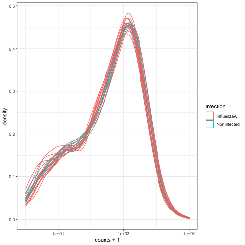
Para obtener más información sobre
tidySummarizedExperiment, consulte el sitio web
del paquete.
Mensaje clave
SummarizedExperimentrepresenta una forma eficiente de almacenar y manejar datos ómicos.Se utilizan en muchos paquetes de Bioconductor.
Si sigue el siguiente entrenamiento centrado en el análisis de
secuenciación de ARN, aprenderá a utilizar el paquete
DESeq2 de Bioconductor para realizar algunos análisis de
expresión diferencial. Todo el análisis del paquete DESeq2
se gestiona en un SummarizedExperiment.
- Bioconductor es un proyecto que proporciona soporte y paquetes para la comprensión de datos biológicos de alto rendimiento.
- Un
SummarizedExperimentes un tipo de objeto útil para almacenar y gestionar datos ómicos de alto rendimiento.
Bioconductor fue iniciado por Robert Gentleman, uno de los dos creadores del lenguaje R. Bioconductor proporciona herramientas dedicadas al análisis de datos ómicos. Bioconductor utiliza el lenguaje de programación estadístico R y es de código abierto y desarrollo abierto.↩︎